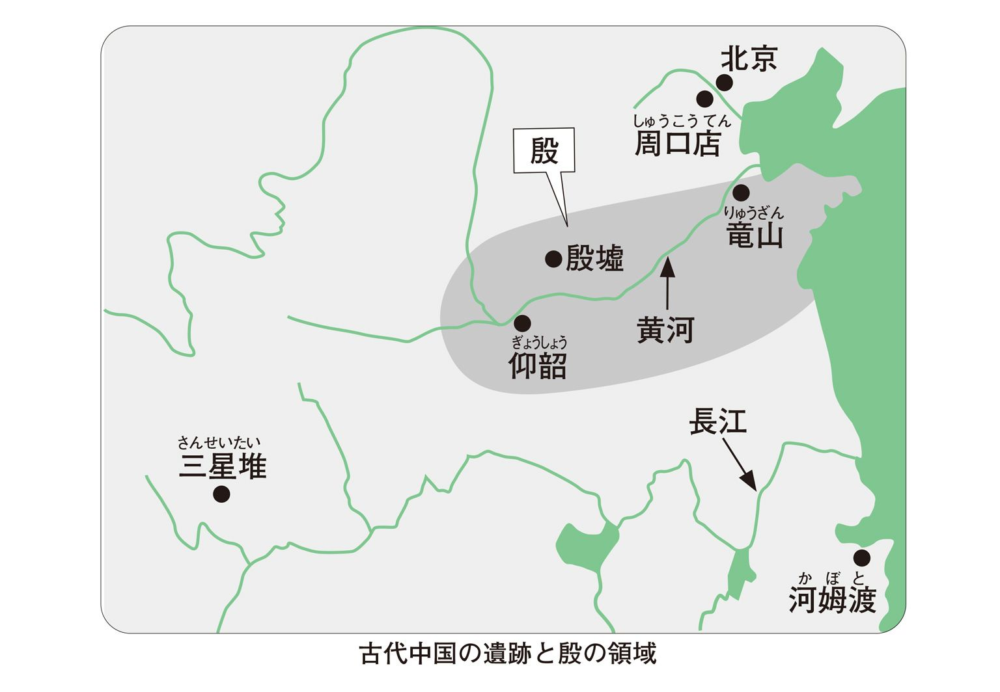
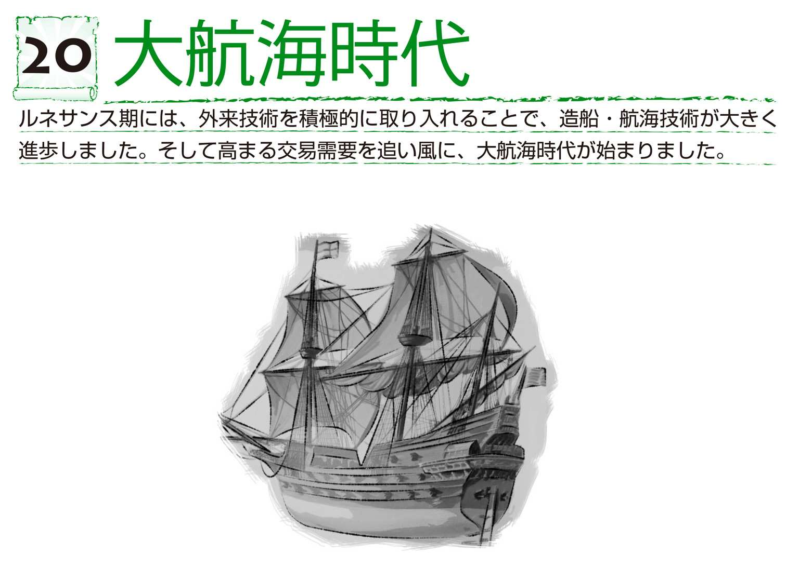
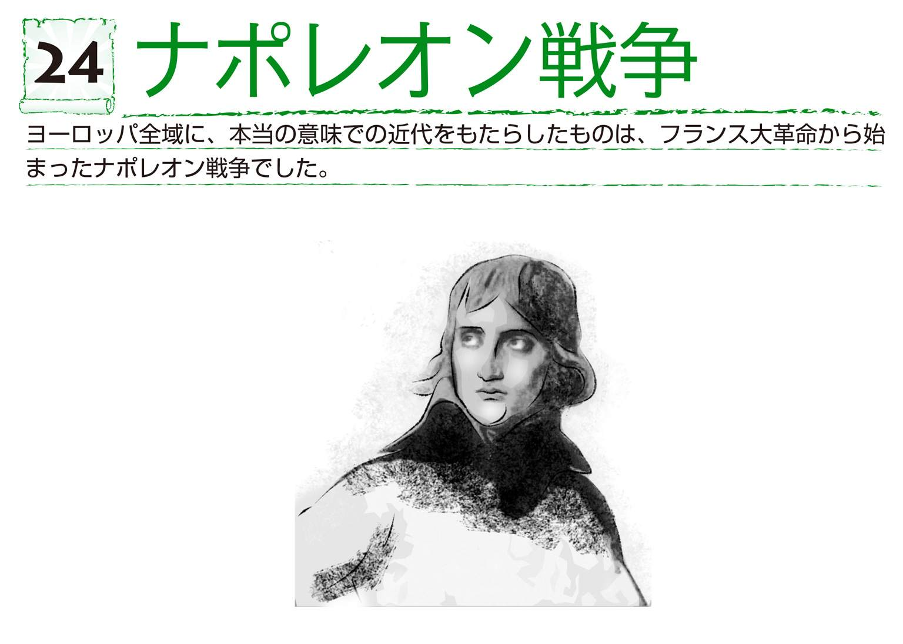
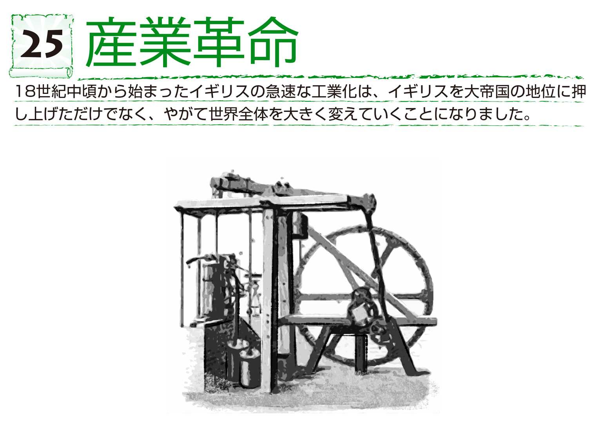

| おとなの楽習 (4) 世界史のおさらい | |
| 土屋 彰久 | |
| (2016) | |
はじめに
歴史は、覚える必要はありません。もちろん、学校では暗記科目の代表です。学校で習う歴史は、とにかく年号、とにかく暗記です。そんな教え方をするもので、楽しいはずの歴史が、この上なく退屈で苦痛な科目になってしまったりするんですね。歴史を学ぶことは、本来、楽しいことのはずなんですが。
では、どうすれば楽しく学べるのか？簡単なことです。もともとが楽しいことを楽しくするんですから、何の工夫もいりません。ただ一つ、知ることです。努力して覚える必要なんて、まったくありません。もちろん、自然に記憶に残ったものは大事にした方がいいでしょう。覚える必要はないと言っているだけで、忘れた方がいいと言っているわけではないですからね。
でも、いきなり「知ればいい」と言われても、とまどいますよね。本を読めばいい？いやいや、そうなるように努力はしたつもりですが、そう言われただけで続くようなものではないことはわかっています。もっともっと簡単に知ることができるように、他の努力もしましたので、ぜひ、そちらの方にトライしてみてください。
私がお勧めしたいのは、「興味や疑問を持って読む」というスタイルです。これももちろん、努力して興味を持つ必要はありません。興味を持った、あるいは疑問を感じた出来事や時代から読んでいってもらえれば、それでいいんです。興味のないところなど、読む必要はありません。でも、そのうちきっと読みたくなると思います。なぜ？それは、興味を持ってからの読み方にかかっています。ここだけは、ぜひ一つ、心がけてください。「なぜ、こうなったのだろう？」という疑問が浮かんだら、過去に遡ってみてください。その答えは、必ず過去の歴史の中にあります。同じように、「この先、結果はどうなったのだろう？」と思ったら、あいだは好きなだけ飛ばしてけっこうですから、先の方を読んでみてください。そうすると、歴史を知るということは、謎解きの連続だということがわかってきます。そうなると、最初はノーケアだったところにも、いずれは疑問の答えを探しにやってくるというのがわかりますよね。だから、逆に言えば、疑問を感じないうちから読む必要なんてないということです。これほど気楽な読書はないでしょう。
こうして自分の知的好奇心の赴くままに、あっちこっちと読んでいくと、歴史上の様々な出来事が、自分の中で少しずつつながっていくようになります。歴史を知る楽しみは、ここにあります。「いつ、何があったか」を、頭から順番に暗記させるのが学校です。それではなく、「なぜ、それが起こったのか」を興味の湧いた順に知ってもらおうというのが、この本の趣旨です。それを続けていくと、やがて自分の中でジグソーパズルが組み上がるように、壮大な歴史絵巻が出来上がっていきます。そうすると、ふと浮かんだ疑問に、誰に何も聞かなくとも、その歴史絵巻の中から、答えがおのずから浮かんでくるようになります。これこそが歴史を知る醍醐味です。どうぞ。
世界史のおさらい
歴史の始まりから産業革命まで
人類の歴史の始まり／人類の始まり・猿人類／二足歩行の原人類／文化的な旧人類／現代人につながる新人類／先史時代≒石器時代／石器で時代を区分／先史時代の気候・風土／中石器時代と新石器時代／農耕と牧畜の始まり・農耕革命／都市国家の発生／石器時代の終わり／文字の発明
文明の母なる地・メソポタミア／「目には目を、歯には歯を」／メソポタミア文明の衰退／ナイルの賜・エジプト文明／神聖文字と民衆文字／暦と測量の発達／独自の発展をしたインダス文明／青銅器の時代から鉄器の時代へ
エーゲ海文明／詩に歌われたトロイ戦争／クレタ島で生まれた線文字／トロイ・クレタ・ミケーネの文化／ドーリア人の大移動／都市国家・ポリスの成立／ギリシャ人とギリシャ文化／ポリスの民主制／ポリスの様々な住民たち／宗教からの解放／ペルシャ戦争／ペロポネソス戦争／ポリスの隆盛と衰退／ペルシャの影／マケドニアのギリシャ統一
覇権が競われる地「肥沃な三日月」／最初のメソポタミア統一／鉄の王国・ヒッタイト王国／カッシート王国／最初の帝国・アッシリア帝国／新バビロニア王国／古代エジプトの統一／統一期と古王国時代／中王国時代／新王国時代／末期時代／大帝国・アケメネス朝ペルシャの成立／ペルシャの繁栄／ペルセポリスの陥落／マガダ国のインド統一
ラテン人都市国家・ローマの起こり／ローマの共和制の展開／「すべての道はローマに通ず」／ポエニ戦争と地中海制覇／平民の没落・共和制の崩壊／カエサルとオクタヴィアヌス／二つの帝政／パクス・ロマーナ／ローマ帝国の衰退と分裂／西ローマ帝国の滅亡／東ローマ帝国のギリシャ化
ルターの宗教改革／贖宥状／カルヴァンの宗教改革／イギリス国王の宗教改革／プロテスタント／カトリックの対抗改革／対抗改革とスペイン／ユグノー戦争とナントの勅令／オランダ独立戦争／英西対決と覇権国の交代／宗教戦争の沸騰点・三十年戦争／ウェストファリア条約
絶対王政の破綻／市民層の成長／理性の開花・啓蒙思想／市民革命の先駆者・オランダ／イギリスの2つの革命／自由の国アメリカの誕生／市民革命の最高潮・フランス大革命／人権宣言／中・東欧の啓蒙専制君主／オスマン朝トルコの興隆／西欧の勢力逆転／カピチュレーション
人類の歴史の始まり
「歴史の始まり」という時、広い意味と狭い意味とがあります。狭い意味の歴史というのは、文字の刻まれた石碑や粘土板、あるいはパピルスといった「文献史料」が発見された時代以降のことで、このような記述的な記録の存在により「有史」と呼ばれています。
一方、このような記録が存在する以前から、もちろん人類は存在してきたわけで、その時代はひとまとめにして「先史」と呼ばれています。この先史時代を遡っていくと、人類の始まりにたどり着くのですが、これが広い意味での歴史の始まりとされています。ただ、一口に「人類」とはいっても、現代人のような人類が登場するのは先史時代の終盤になってからの話です。
人類の始まり・猿人類
人類の始まりは、アフリカで発見された化石から、約250万年前に出現したアウストラロピテクス（これは学名で、「南の猿」の意）とされています。アウストラロピテクスは、学名でもサル扱いされているように、最も原始的な猿人類に分類され、字面からは類人猿と大差ないようにも見えますが、「直立歩行＝形態的特徴」と、「道具の作成＝文化の存在」の二点を「サルっぽい人」と「人っぽいサル」を分けるポイントとしています。
猿人には、アウストラロピテクスの亜種の他に、ホモ・ハビリスが存在し、このホモ・ハビリスの方が原人に近いと考えられていますが、両者の関係はまだはっきりとはしていません。猿人以後、原人、旧人と人類は進化を遂げ、約５万年前頃に出現した新人の時代になって、約3000年前のメソポタミア文明の発祥を迎え、先史の時代から有史の時代へと歴史は移っていきます。
二足歩行の原人類
約60万年前になると、猿人より進化した原人類が世界各地に出現するようになります。この時期になると、より精巧な石器を作成したり、火を日常的に使ったりするようになってきます。また、体格的には完全な直立二足歩行型になったことから、学名上はホモ・エレクトス（「直立原人」の意。旧学名はピテカントロプス・エレクトスで「直立猿人」）と呼ばれています。この時代の原人には、代表的存在のジャワ原人に加え、日本にもなじみの深い北京原人などがいます。
文化的な旧人類
約30万年前になるとネアンデルタール人が出現し、その後約20万年前頃に世界各地に広まっていったことが、調査によって明らかになっています。今日では、ネアンデルタール人を「最初の新人」とする説、つまり「旧人」という分類そのものを否定する説が有力ですが、ここではなじみのある旧来の分類を採用しておきましょう。
ネアンデルタール人はより高度な道具・狩猟法を用いて狩猟を行っていた点、火による調理を日常的に行っていた点、さらに葬祭的な習慣があった点など、文化的には新人類とかなり近いレベルにありました。一方で、体格的にはゴリラを思わせるような、いかにも「原始人っぽい」骨格を特徴としています。
ネアンデルタール人は、約２万4000年前に突如として絶滅を迎えますが、原因については、新人類との戦闘に破れて駆逐されたとする説や、新人類が持ちこんだ伝染病によるとする説、あるいは第四氷期の厳しさに耐えきれなかったとする説など諸説があり、いまだ真相は不明です。
現代人につながる新人類
ネアンデルタール人を含めるにしろ含めないにしろ、現代人まで含めた人類の最新型がこの新人類です。中でも最も有名なのは、約５万年前に出現したとされるクロマニヨン人です。クロマニヨン人の血統が今日まで続いているかについては議論がありますが、現代人にもつながるその原型は、約20万年前にアフリカに発生し、その後第四氷期を生き抜いて、陸続きとなっていた世界に広がったとする説が有力です。
先史時代≒石器時代
先史時代は、一言で言えば石器文化の時代です。もちろん定義の問題として、人類の歴史は石器文化の発生と同時に始まるわけですが、最終盤に登場する土器文化の始まりはせいぜい１万年前の話であり、それ以前の250万年という長さから見れば、ほとんど誤差のようなものです。ですから、先史時代≒石器時代と考えて、それほど問題はありません。
ちなみに日本史の歴史区分では、石器時代の次に縄文、弥生と土器文化が続きますが、世界史の歴史区分では、石器時代、青銅器時代、鉄器時代と、入れ物ではなく刃物で切っています。また、石器時代は狩猟生活が主でしたから、動物の骨や角を加工した骨角器も並行して使われていました。
石器で時代を区分
石器時代と一口に言っても、その間に250万年の時を経て、人類はサルと大差ない猿人から、中身に関しては現代人と変わらない新人まで進化してきたわけです。当然ながら、石器文化の中身も大きく進化してきました。具体的には、小石を加工した最も原始的な礫石器（猿人）に始まり、その後、核石器（原人）、剥片石器（旧人）、そして石刃石器（新人）と発展していきます。この期間、だいたい250万年前から１万年前までを旧石器時代と呼び、その中で猿人、原人の頃までを前期、旧人の頃を中期、そして新人の頃を後期と分けています。
先史時代の気候・風土
先史時代の大半は、地質時代の区分で更新世（洪積世）と呼ばれる氷河期で、ちょうど１万年前までの旧石器時代に当たります。その後の温暖化した時代が完新世（沖積世）で、これは現代まで続いています。更新世には、寒冷な氷期と温暖な間氷期が繰り返されましたが、このような気候変動がもたらす過酷な生活環境の中で、道具や火の使用などに人々が「くらしの知恵」を絞ってきた結果、人類の進化が促進されたと考えられています。時代区分でいうと、アフリカに最初の猿人が登場したのが第一氷期、原人の登場が第二間氷期、旧人が第三間氷期、そして新人が第四氷期の末期に登場し、その後、第四間氷期（後氷期）の現代に至ります。
中石器時代と新石器時代
約１万年前、後氷期に移って中石器時代に入ると、土器が作られるようになりました。また石器も細くとがらせた細石器を用いて、弓矢を使った狩猟が行われるようになるほか、釣りや銛漁、網漁も行われるようになります。なお、土器と並んで、かつては新石器時代の重要な特徴とされていた、最も精巧な石器である磨製石器の作成も、この時代に始まっていたことが現在では判明しています。
約7000年前以降が新石器時代です。現在でも、磨製石器が新石器時代の重要な特徴であることには変わりありませんが、今では、生活様式の変化によって中石器時代と新石器時代が分けられています。新石器時代になると、農耕・牧畜が始まり、それにともなって定住化が進むようになります。以前の時代から、狩猟などの生活上の都合から集住化は進んでいましたが、狩猟から農耕への生産様式の変化に後押しされる形で、この時代に社会の形成が大きく促されました。また、それまでは主に狩猟用だった石器が、農耕のための石製農具に変わり、食料の生産力を大幅にアップさせました。
COLUMN
「洪積世」から「更新世」へ
地質時代の区分ですが、皆さんは「更新世」を「洪積世」で習った世代ではないでしょうか？
「洪積世」という呼び名の由来、実は旧約聖書に出てくるノアの箱船の大洪水なのです。この地層に名が付けられた17世紀当時というのは、ヨーロッパとキリスト教が世の中の中心でしたから、この地層はノアの洪水によるものと信じられ（どこまで本気かは疑問ですが）、このような名前が付けられました。しかし、その後の科学の進歩やキリスト教の権威の低下、文化的な多元主義の広がりなどもあり、「科学に宗教を持ち込むのはよそう」ということで、「更新世」という呼び名に変更されました。
農耕と牧畜の始まり・農耕革命
この時代に起こった農耕・牧畜への生産様式の変化は、18世紀の産業革命と並んで、人類史の大きな転換点となったという点で、農耕革命や新石器革命などと呼ばれています。この時代には土器の普及も進んだために、食料の生産力のみならず、調理・保存も容易になりました。こうして、食うや食わずの生活から解放されて、人々の生活に余裕が生まれたことが、その後の文化の発展につながっていくことになります。
都市国家の発生
農耕のスタイルも、地味が痩せると次に移る原始的な農法から、大河の水利を活かした氾濫・灌漑農法へと発展することで生産力はさらにアップし、同時に居住地の固定化と人口の拡大が進み、メソポタミアなど大河の流域に古代都市が作られていきました。そして生産活動の活発化にともなって、個人的な経済活動も盛んになってくると、それまでの財産共有の文化が廃れ、財産私有の文化に取って代わられるようになりました。そこから貧富の差が発生し、それはそのまま権力の差、身分の差を生み出しました。
こうした都市化の進行により、それまで緩やかな血縁的共同体として成立していた氏族社会は、巨大化した都市に飲み込まれました。その後に階級社会と、その支配構造によって支えられた都市国家が出現します。そして、氏族の血縁に代わり宗教的な帰属意識によって、より大きな単位で結び付けられた部族が発生しました。
石器時代の終わり
このように、都市国家の形成は富と権力の集中を進めた結果、それが技術開発にも投入されることで、様々な分野で文化の発展が急速に進んでいきました。その第一が、初歩的な冶金（金属精錬）技術の発見です。これにより青銅器の生産が始まり、それまで使われてきた石器に取って代わるようになり、長年にわたって続いてきた石器時代に、ようやく終止符が打たれることとなりました。
文字の発明
青銅器に続いた大きな発明といえるのが、文字の発明です。文字を持つ以前の言語そのものに関しては、時期の特定は無理としても、新人類の身体的特徴や社会生活のあり方から推測して、かなり早くから存在したものと考えられています。しかし人類が文字を持つに至ったのは、やはり都市化が最大の要因でしょう。
具体的には、私有財産制が始まったことにより「所有者の印」としての記号が必要となったこと、また、暦の記述や権力の大きさや量の記録において数字が必要となったことなどが指摘されています。
先史時代
250万年前頃◆猿人現る
・旧石器時代の始まり
・地質時代区分は更新世（～１万年前頃）
・アウストラロピテクス、ホモ・ハビリスなど
・礫石器の使用
60万年前頃◆原人現る
・ホモ・エレクトス、ジャワ原人、北京原人など
・火の日常的な使用
・核石器の使用
30万年前頃◆旧人現る
・ネアンデルタール人など
・葬祭の習慣
・剥片石器の使用
5万年前頃◆新人現る
・クロマニヨン人など
・洞窟壁画を残す
・石刃石器の使用
1万年前頃◆中石器時代の始まり
・地質時代区分では完新世（～現在）
・細石器の使用
7000年前頃◆新石器時代の始まり
・農耕・牧畜の始まり（農耕革命）
・磨製石器の使用
3000年前頃◆青銅器時代の始まり
・文字の使用の始まり
・都市の成立
メソポタミア文明の起こり
人類で最初に文献を記した、つまり歴史時代の幕を開いたのは、メソポタミア地方に都市国家を作り、最も早くに文明を誕生させたシュメール人でした。メソポタミアとは、「川と川の間」という意味で、現在のイラクのチグリス・ユーフラテス両大河に挟まれた地域を指します。この地を含めて、両大河が注ぐペルシャ湾沿岸から、反対側の地中海沿岸にまたがる三日月形の低緑地帯は、高温な乾燥地の中で水利に恵まれた農業の好適地として、「肥沃な三日月」と呼ばれています。
このように自然条件に恵まれたメソポタミア地方では、早くから農業が行われるようになり、それが域内の各地で都市国家の形成を進め、様々な文化の発展を促し、人類最初の文明となりました。
シュメール人の楔形文字
メソポタミアと言えば楔形文字、というイメージが定着していますが、シュメール人が、最初に発明した文字は絵文字でした。これは、他の起源を持つ古代文明についても同じで、この後、簡略化が進められることで象形文字に発展し、また、抽象的な意味の表現が加えられるなどして、各文明の文字は様々な方向に発展して行きました。
メソポタミアでは、粘土板に尖筆（先の尖った棒）で刻みつけるという記録方法が用いられたために、この書き方に合わせて、象形文字からの変化が進みました。楔の形が組み合わされたように見える楔形文字が前3500年頃に生み出され、その後、各地に伝播していきました。
この粘土板に記すという記録方法は、なかなかエコで合理的にできています。なぜかというと、保存が必要な場合には、窯で焼けばよく、不要な場合には、粘土板をほぐして作り直せるからです。もちろん、「文書」が重くかさばりすぎるという難点はありましたが、文字を読み書きできる人が少なく、記録すべき情報も限られていた時代には、それほど不便は感じられなかったようです。
COLUMN
先史から有史へ
先史と有史は、冒頭でも触れたように文献史料の有無によって区切られますが、細かく言うと有史の「史」は歴史書の意味なので、最古の歴史書が記された時期がその分岐点ということになります。ですから、厳密に言うと各国でその時期が違ってきます。
文明の母なる地・メソポタミア
メソポタミアの地は、自然条件に恵まれたことから、最も早くに文明が成立しました。そして、この地で早くから発達した様々な文化は、交易や移住、戦争などを通じて、周辺に広がっていきました。特に農耕に関しては、この地で始まった農耕が、地理的に近いエジプトやインダスはもちろん、黄河地方まで伝わっていったとする説が有力です。
ただし、それ以後の各文明の成立に至る過程では、それぞれの地域が独自の発展を遂げました。トップランナーであったはずのメソポタミアが、このように世界の文明を引っ張り続けられなかった要因としては、この地が肥沃なだけでなく、地形的に開けた地域であったために、様々な部族・種族による争奪の目標となり、大国を形成して文化を発展させていく上で必要な、政治の安定を欠いたことが大きかったとみられています。
こうしてメソポタミアは幾度もの王朝の交代を経験しましたが、前1700年代にハンムラビ大王の下、バビロニア王国としてようやく統一されるに至り、最大の繁栄を迎えました。バビロニア王国以後も王朝の交代は起こりましたが、その文化の基本は長く継承されていきました。
「目には目を、歯には歯を」
バビロニア王国の時代には、「目には目を、歯には歯を」で有名なハンムラビ法典が定められました。これは最古の法典ではありませんが、高度な体系性に裏付けられた完成度の高さや、後世への影響の大きさなどから、ユスティニアヌス法典・ナポレオン法典と並んで、世界三大法典の一つに数えられています。当地の神殿に据えられていた、ハンムラビ法典が刻まれた石柱は、フランスのルーブル美術館の代表的な所蔵品の一つです。
メソポタミア文明の衰退
バビロニア王国以後も、歴代の王朝の下でメソポタミアは繁栄を続けました。しかし、人口の過剰によって森林資源が枯渇してしまったことや、気候の変化、灌漑地域の拡大にともなう塩害の広がりで可耕地が縮小してしまったことなどから生産力が低下し、この地の文明は徐々に衰退に向かいました。
そしてこの文明発祥の地も、度重なる戦乱の後、前539年にアケメネス朝ペルシャ帝国に征服されて以降は、近隣地域に成立した強国の支配下に置かれる時代がしばらく続きました。
ナイルの賜・エジプト文明
エジプトは「ナイルの賜」と呼ばれるように、季節によって定期的に氾濫を繰り返すナイル川河口のデルタ地帯は農耕の好適地でした。メソポタミアから伝わったとみられる農耕が早くに根付き、早期に独自の文明を成立させるに至りました。当初は、メソポタミアと同様に域内に小国家が散在する状態でしたが、前3150年頃にナルメル王の下に統一されました。以後、前332年にアレクサンドロス大王に征服されるまで、王国内部での政権交代は繰り返されましたが、砂漠に囲まれた地形が有利に働き、他の種族・国家による侵略から免れ、長きにわたって王国の繁栄が続きました。そのためエジプトでは文化が独自の発展を遂げ、ヒエログリフなどのエジプト文字が発明され、ピラミッドや巨大な神殿が建設されました。
神聖文字と民衆文字
エジプトでは、特産の植物であるパピルス（ペーパーの語源）を紙のように使うことができたため、このパピルスとインクを使った表記法が発明されました。そして、「粘土板と尖筆」とは比べものにならない表記の容易さと自由度に助けられて、文字文化が大きく発展しました。
文字は、基本的に絵文字→象形文字→表意文字→表音文字という発展の道筋をたどりますが、古代の神殿などに刻まれている、エジプト文字で最も有名なヒエログリフ（神聖文字）は、表意文字の段階に位置しています。そして、ヒエログリフを簡略化することで生まれた表音文字・デモティック（民衆文字）から、後のアルファベットの原型であるシナイ文字が生まれました。ヒエログリフは、アレクサンドロスによる征服の以後も他の文字と併用されていたことが、ロゼッタ・ストーンなどの史料からわかっています。
しかし、もともとが宗教性を帯びた文字であったことに加え、文法が複雑で読み書きが困難であったため、次第に廃れていきました。
暦と測量の発達
メソポタミアとエジプトに共通するのは、大河の定期的な氾濫を利用した高温乾燥地での氾濫・灌漑農業です。そのため、氾濫の時期を予測するために暦が必要とされ、また氾濫後の農地を再配分するために測量も必要とされたために、それらの基礎となる数学・天文学・幾何学が早くから発達しました。
エジプトでは太陽暦が用いられ、メソポタミアでは陰陽暦（太陰暦を太陽暦で補正する暦法）が用いられていました。ちなみに、現代も続いている七曜日制や十二宮の星占いなども、メソポタミアが始まりです。陰陽暦に基づく十二宮が太陽暦の生まれ月と微妙にズレているのは、そのためです。
また、日本のような急流の多い土地に暮らしていると、「氾濫」というと鉄砲水の親玉の大砲水のような洪水を想像しがちです。ですが、この大河の定期的氾濫というのは、上流地域での雨季乾季の降水量の差が、下流地域の水位の上下として表れるものなので、水位はゆっくりと上がり、ゆっくりと下がっていきます。この氾濫によって常に上流からの沃土が供給されたために、肥料を使わなくても作物はよく育ちました。
独自の発展をしたインダス文明
現在のインドとパキスタンの国境付近を流れるインダス川流域に、前2600年頃にドラビダ人が開いたのがインダス文明です。インダス文明は、遺跡の規模が小さいこと、メソポタミアの文化の影響を受けていること、そして中途で滅亡したことなどから、現在ではインダス文化やハラッパ文化といった呼称が一般的になっています。ただし、インダス文明においては、未解読のインダス文字の存在や、高度に発達した建築技術、整備された都市機構など、独自の発展を見せた文化が多いことにも注目すべきです。また、戦乱の痕跡が見あたらないこと、際立った階級差も観察されないことなどもインダス文明の特徴で、人々の平和な暮らしぶりがうかがえます。
インダス文明もまた、氾濫・灌漑農業によって支えられていましたが、地殻変動によってその拠り所であったインダス川の流路が変わり、前2000年頃から文明は衰退に向かいました。やがて前1800年頃に砂漠化に耐えきれずに都市が放棄されるに至ったとみる説が、現在では有力です。さらに、その後のアーリア人のインド侵入・征服により、ドラビダ人の文化の大部分は途絶しました。かつてはこのアーリア人の侵入をインダス文明滅亡の直接的な原因とみる説が有力でした。
COLUMN
灌漑と塩害
メソポタミアでは、農業を発達させた要因が途中からその衰退を招くという、皮肉な結果をもたらしました。その衰退の原因が、塩害です。河水を利用した灌漑農法の開発は、農業の生産性を大きくアップさせて文明発達の原動力となりました。しかし、作物は水さえあれば育つというものではなく、高温乾燥地では水分が蒸発すると塩分がどんどん溜まっていってしまうために、ある程度のところで作物は育たなくなってしまいます。大河の定期的氾濫は、沃土の補給だけでなく、この溜まった塩分を洗い流す効果もあったのですが、農業が発達するにつれて、整地・治水が行われるようになり、その代わりに塩害に悩まされるようにもなりました。
青銅器の時代から鉄器の時代へ
精錬の容易な青銅の発明によって、古代文明は石器時代に別れを告げましたが、この青銅器の時代はそこまで長くは続きませんでした。人類で最初に鉄器を発明したのは、現在のトルコに前1800年頃に成立したヒッタイト王国です。ヒッタイト王国は前1595年にバビロニア王国を滅ぼし、一時、メソポタミアを支配しました。また、前1500年頃からインドに侵入を始めたアーリア人も、鉄器で武装していました。
その後、ヒッタイト王国は、製鉄法の秘密を守り続けたにもかかわらず、前1190年に、地中海の諸種族の混成部隊とみられている「海の民」に滅ぼされたので、鉄器さえあれば勝てるという話ではなかったようです。しかし、いち早く鉄器を手に入れた種族が、戦いを有利に進めたことは確かでしょう。以後、鉄はその優れた特性（硬い・加工しやすい・大量に採れる、など）から、人類にとって最も重要な金属材料となり、「鉄は国家なり」といわれるほどに、今日に至る物質文明の発展を支えてきました。
黄河文明と長江文明
中国の文化は、地理的な隔絶性から、早くから独自の発展を遂げてきました。現在までに発掘された古代遺跡の多くは黄河流域に散在しており、最も古いものでは、前7000年頃から、冷涼な気候に合った粟作農業が行われ、土器や磨製石器が使われていた痕跡が見つかっています。前4500年頃から、彩色土器である彩陶を特色とする彩陶文化が栄え、この頃には豚の飼育も始まっていました。次いで、前2500年頃から、薄手で硬質な完成度の高い黒陶を特徴とする黒陶文化が栄えました。また、温暖な長江流域では、前1万2000年頃から稲作が始まり、前3000年頃に最盛期を迎えました。さらに前1000年頃には、より高度な磁器（白陶）が作られるようになりました。

中国の古代文化は、氏族社会に基礎を置く「邑」（地域共同体、後には都市国家）を単位として発達していきました。経済活動の拡大で、両大河流域の諸邑では前4000年頃には交流が始まり、文化的に相互に影響を与えたとみられています。その後、長江系の文化の大部分は、征服により黄河系の文化に吸収・統一されました。一方、四川地方の遺跡においては、インダス文明の影響を示唆する史料も発見されています。
長江流域や四川地域では、未解読であるために、まだ公式には「文字」として認定されていないものの、独自の「文字らしきもの」や青銅器などが発見されており、今後の調査の結果によっては、長江文明が黄河文明を逆転して、中国最古の文明となる可能性も十分にあります。
中国の発掘事情
中国における古代遺跡の発掘に関しては、オリエントとは事情がかなり異なることを理解しておく必要があります。オリエントは、いち早く近代化を遂げたヨーロッパに近かったことから、早くから発掘調査が進みましたが、中国では近代化の遅れから、近年までなかなかそこまで手が回りませんでした。また、中国は一国で古代オリエントがすっぽり入るくらい広大であることも、発掘作業や史料解釈に影響を与えています。
一方で、伝説の時代にまで遡る『史記』のような非宗教的な歴史書が存在し、古代の記述に関しても、殷墟の発見などによってその信憑性が高まっていることは、古代史研究の助けともなっています。
殷墟の発見と伝説の夏王朝
現時点で中国最古の文明の遺跡は、1899年に発見された殷の遺跡（殷墟）です。いまだ伝説とされる殷の前代の夏王朝について、決定的な史料は未発見であるものの、その存在が確認されるのは時間の問題とみられています。夏は前2000年頃に成立し、前1600年頃に殷によって倒されたと目されています。
ちなみに殷自体も、殷墟が発見されるまでは伝説上の存在でした。「殷」というのは、次代の周による呼び名（「夏」も殷による呼び名）で、自称の国名は「商」です。ただし、この漢字自体が今日のものであり、当時はその原型の甲骨文字だったことも注意しなければいけません。甲骨文字とは、殷の文化の特徴の一つである象形文字ですが、占いのために亀の腹側の甲羅や動物の骨（主として牛の肩甲骨）に刻まれた出土品が大量に発掘されたことから、この名が付けられました。
殷代の社会・文化
殷の文化の特徴は、この甲骨文字と高度な青銅器文化、そして製陶技術にあります。甲骨文字の由来となった占い（亀卜）は、重要な政策を始めとして、国政全般において用いられていました。「天時不如地利 地利不如人和（天の時は地の利に如かず、地の利は人の和に如かず）」というのは、孟子の有名な言葉ですが、これは逆に、占いによって決まる「天の時」が古代の中国でどれほど重視されていたかを物語っています。
殷の成立の過程は、夏王朝の打倒によるのか、殷が諸邑を統一したことによるのか、真実はいまだ不明です。初期には家父長制に基づく諸邑の連合体としての性格が強く、その後、時代を追うにしたがって王の権力が強まり、専制的な神権政治が行われるようになりました。そして末期には暴政が続き、前1046年頃に周によって倒されました。
この際、神権王朝打倒の正当性を周が主張した言葉「易姓革命（天子の姓を易え、天命を革める）」は、今日の「革命」の語源ともなっています。周が諸邑の独立性を重んじる封建制をしいたことを考えると、夏が殷に倒された時の経緯も似たようなものだったのではないかという推測が成り立ちます。つまり「世襲王朝の長期化が専制化を招いた→諸邑の領地・領民に対する直接支配を強めた→反発した諸邑が有力な邑の下に団結して王朝を倒した」という構造だったのではないでしょうか。
古代オリエント
前3500年頃◆メソポタミア文明
・楔形文字の使用
前3150年頃◆エジプト文明
・ナルメル王によりエジプト統一
・ピラミッドや神殿の建設
・エジプト文字...ヒエログリフ（神聖文字）、ヒエラティック(神官文字)、デモティック（民衆文字）の使用
前 2600年頃◆インダス文明
・高度な都市機構
・インダス文字の使用
前 1800年頃◆ヒッタイト王国成立
・鉄器の使用
前 1700年頃◆バビロニア王国成立
・ハンムラビ大王によりメソポタミア統一
・ハンムラビ法典の制定
古代中国
前1万2000年頃◆長江流域で稲作
前7000年頃◆黄河流域で粟作
・土器・磨製石器の使用
前4500年頃◆彩陶文化
・黄河上流で彩色土器が作られる
・豚の飼育
前2500年頃◆黒陶文化
・黄河流域で黒色土器が作られる
前1600年頃◆殷の成立
・甲骨文字・青銅器の使用
前1000年頃◆磁器（白陶）の作成
前1046年◆周の成立
エーゲ海文明
エーゲ海文明は、かつて神話上の伝説と考えられていました。しかし、ホメロスの叙事詩『イリアス（イリオスの詩。イリオスはトロイの別名で、トロイ戦争を題材にした物語。中でも「トロイの木馬」は有名）』を史実と信じて疑わなかったシュリーマンが、苦難の末にトロイの遺跡を発見したことから実在が証明され、その後に広がった調査でミケーネ文化、クレタ文化の遺跡が相次いで発掘されました。エーゲ海文明は、このトロイ・クレタ・ミケーネの三文化の総称で、それぞれ個別に文明と扱われることもあります。
文献史料に乏しいことから、これら三文化の詳しい関係はわかっていませんが、早くに発達したのはクレタで、この影響を受けて発展したミケーネがトロイを影響下に置いた後、前1400年頃にクレタを征服し、その後、前1200年頃にドーリア人、もしくは「海の民」に滅ぼされて滅亡したとみられています。このような経緯もあって、エーゲ海文明の特徴である独自の文字「線文字Ａ・Ｂ」は、それぞれの遺跡から見つかっています。また、民族的には、クレタとトロイが小アジア系、ミケーネが南方ギリシャ系とされています。
詩に歌われたトロイ戦争
トロイの遺跡は発見されましたが、トロイ戦争が史実であったか、また、それは実際にはどのようなものであったかについては、いまだ確認できていません。前1200年頃のものとされるトロイ遺跡第７層の破壊の痕跡が、トロイ戦争によるとする説が有力です。しかし、物語の題材は、エーゲ海地域で長きにわたって続いていた都市国家間の戦争に広く求められたものであると考えられています。そして、このような戦争によって、地域全体が疲弊したことが、北方系のドーリア人の侵入を招く遠因となったとも考えられています。
クレタ島で生まれた線文字
Ａとその発展型のＢがあり、粘土板に刻まれた史料として発掘されています。エーゲ海文明は、基本的にエジプト文明の影響の下で成立したと見られていますが、この線文字はクレタにおいて独自の絵文字から発展したものと考えられています。
クレタで発明されたＡは未解読でしたが、最近、解読の報も入っており、Ｂとは異なるヒッタイト系の言語に当てた表音文字らしいということがわかってきました。一方、Ａを借りてミケーネが改良したＢは解読され、ギリシャ語に当てた表音文字であることがわかっています。しかし、使いやすさで劣っていたせいか、ミケーネ文化の滅亡とともに廃れました。
トロイ・クレタ・ミケーネの文化
トロイの遺跡は９層にも重なっており、最下層は前3000年頃のものと推定されています。青銅器などの出土品から、下から２つ目までに初期トロイの独自性が観察されています。第３層から上は、クレタ・ミケーネ系の文化の影響が見られ、これらの文化圏に早くから吸収されていたようです。
クレタ文化は前2000年頃にクレタ島に興った文化で、ミノタウロスの伝説など、神話にも登場する全盛期のミノス王の名を取って、ミノア文化とも呼ばれます。農耕には不向きな土地でしたが、沿岸地域の生産力に支えられ、地中海での交易により栄えました。また、早くから線文字Ａが使われていた記録もあります。
ミケーネ文化は、クレタ文化の影響を受けて、前1500年頃にミケーネを始めとしたペロポネソス半島の諸都市に興こりました。次第に地中海交易に進出し、前1400年頃にはクレタを滅ぼしました。政治的には、王制の都市国家が分立する状態にあり、ゆるやかな連合体を形成していたようです。クレタには見られないような城壁など、戦闘を前提とした建築の遺跡も発見されていることから、都市国家の間でも戦争があったようです。
ドーリア人の大移動
ミケーネ滅亡の主たる原因については、ドーリア人によるとする説と「海の民」によるとする説とに分かれています。ただいずれにせよ、とどめを刺したのは、前1200年頃に起こったドーリア人の大移動でした。
北方ギリシャ系のドーリア人は、ヒッタイトの滅亡で流出した製鉄技術を取り入れ、鉄器で武装してバルカン半島から南下していきました。ペロポネソス半島や、さらにその先まで征服し、先住民を奴隷化して新たな都市国家を建設しました。ドーリア人の征服を逃れた先住民は、移住先で都市を再建しましたが、エーゲ海文明の滅亡によってむしろ文化水準は後退し、この後400年ほどの間に文献史料は見つかっていません。
都市国家・ポリスの成立
ドーリア人の大移動により、エーゲ海地域はかなりの間、混乱が続きましたが、前800年頃に北方・南方ギリシャ系各部族の定住地が大体定まり、その後に開花するギリシャ文化の基盤となる都市国家ポリスができつつありました。
ポリスは、神殿が置かれた小高い丘（アクロポリス）を中心に、城壁で囲まれた市街地が作られ、さらにその回りに農耕地が広がるという、同心円的な構造になっていて、ポリスの多くはアクロポリスから一望できるくらいの規模でした。ポリスの形成を進めたのは、経済の活発化によって生まれた有力市民が生産活動を下層民に任せて都市部に集住するようになったことや、ポリス間の対抗という軍事的な要因でした。
ギリシャ人とギリシャ文化
ミケーネの滅亡からポリスの興隆までの400年ほどの間に、この地域での戦争や交易など、硬軟両様の交流を通じて、ギリシャ文化の担い手となるギリシャ人が成立します。ギリシャ人は、北方・南方両系ギリシャ人のいずれかであることを民族的な基盤とし、共通の言語と宗教を文化的な基盤としています。
ちなみに、本書でも「ギリシャ」と呼んでいますが、これは後のローマによる呼称であって、ギリシャ人自体は、かつてから今日まで、自らをヘレネス（他民族はバルバロイ＝卑語人・野蛮人）、その住む国をヘラス（個々のポリスではなく全域を指して）と呼んでいます。また、各ポリスは独立国家であると同時に、４年ごとのオリンピックに代表を送ったり、共通の信仰対象であるデルフォイの神託で軍事や外交などのポリス間の重要決定を行ったりしていて、「全ギリシャ世界の一員」としての意識も持っていました。
ギリシャ人は、エーゲ文明の滅亡以降廃れていた線文字Ｂに代えて、エジプト文字を起源とするフェニキア文字を取り入れ、表音文字としてのギリシャ文字を作りました。そして、このギリシャ文字を基に、今日まで使われているローマ文字のアルファベットが出来上がりました。
このギリシャ語での文献が残る前800年頃から、ポリスを基盤とした古代ギリシャ文化の興隆が始まります。以後、前337年のマケドニアによるギリシャ統一までの文化を総称して古代ギリシャ文化（ヘレニック文化）、以降をヘレニズム文化と呼び分けています。
COLUMN
文化と文明
日常の語感としては、文化はこまごまとした個別のもので、文明はそれらに通底するようなスケールの大きいもの、という感覚が一般的です。ただし、専門的な話では、文化と文明をどう分けるか、それぞれの定義をめぐっては諸説あり、実は完全には確定していません。
日本語では意味だけでなく表記も似通っていますが、歴史用語としての語源をたどってみると、その意味合いの違いもわかってきます。文化は英語の"culture"、文明は"civilization"の訳語として、それぞれ当てられたものですが、さらにその語源をたどると、ラテン語でcultureは"colore：耕す"、civilizationは"civitas：都市"と、かなりニュアンスが違ってきます。
つまり、大雑把にいえば、原始的なものであっても、ある程度の人為的な工夫の営みが社会に定着していれば文化といえるが、文明と呼ぶためには、それなりの規模と先進性が要求される、といったところでしょうか。実務上は、＜①農耕②都市の形成③職業分化と技術の高度化④文字の発明＞が、古代文明の基本的な要件となっています。具体的に見ると、①の条件は文明の成立以前から満たされており、②は大規模な遺跡の存在、③は青銅器、陶器、建築などの技術水準、④は文献史料の有無によって、基本的な判定がなされています。中でも④が決定的なポイントです。
ポリスの民主制
ポリス成立の初期段階では、都市集住化の中心となった有力市民が貴族化し、貴族制、ないし王制が採られていました。しかし、戦争のスタイルが騎兵（貴族）中心の騎馬戦から、ガチガチに武装した重装歩兵（平民）がギチギチと壁のように並んで密集戦形を組んで戦う白兵戦に変わってくると、戦力の中心となった平民の発言力が強まり、各ポリスで、平民が集まる民会が開かれるようになりました。
民会の権限はポリスにより様々でしたが、有力ポリスのアテネなどでは、度重なる政変や改革が行われた後に、民会が政治の中心となる民主制が成立しました。また、各ポリスは経済の発展や人口の増加にともなって、植民を積極的に行うようになりました。有力ポリスの制度を受け継ぐ新たなポリスが次々と建設されていき、最盛期には海外植民市も含めて、1000を超えるポリスがありました。
ポリスの様々な住民たち
民主制に移行したポリスでは、「市民」の間では徹底した地位の平等が図られました。しかし、そもそも「市民」とは支配的民族の成人男性で、その他にその３～10倍程度の奴隷や自由民、在留外人などの被支配民がいました。その中でも重要だったのは、生産活動を担っていた奴隷の存在です。ギリシャの「平等な民主制」を実際に支えていたのは、「不平等で非人道的な奴隷制」だったのです。そのため、戦争も、基本的には今日のような領域国家としての「国境を争う戦争」ではなく、昔ながらの略奪や通商などの利権争いのほかは、主に「奴隷を争奪する戦争」でした。
市民は第一には軍人でしたが、平時には市民としての公務に参加する他、奴隷制のおかげで労働から解放されて、思い思いの活動に精を出すことができました。こうした生活の余裕に加えて、「支配者であり続けるための教育」にも支えられて、ポリスの市民は様々な方向に文化を発展させていきました。また、有力ポリスの経済力に惹かれてやってくる在留外人も、特に実用的な分野で文化の発展に貢献しました。
宗教からの解放
ポリスにおける民主化の進行と経済の発展は、多くの一般市民に生活の豊かさと開放的な空気を提供することになり、これが自由で多様な文化の発展を支える素地となりました。かつては、古代文明の基本形とも言える政祭一致の専制的体制の下で、国家の存立を支える存在であった宗教が全ての文化を支配していました。しかし、市民が自らの力で国家の存立を支える体制の出現は、人々の意識の内に有能感や自由な発想、あるいは人間賛美の感覚を育み、それまでの権威主義的な宗教のくびきから解き放たれた、新たな文化を生み出しました。
この時代に生まれた哲学や文学、芸術などは、今日でも多くの研究者が専門に研究しているように、その歴史的な重要性にとどまらず、完成度においても非常に高いレベルにあると言えます。また自然現象についても、神話的な説明から切り離して、因果関係をありのままに解き明かそうという科学的な姿勢が定着しました。今日から見ても驚くほど的を射た原子論なども、すでにこの時代に提示されています。
古代ギリシャ文化
＜哲学＞
ソクラテス：西欧哲学の祖、問答法（産婆術）
プラトン：アカデメイア（学園）の創設、『国家』『饗宴』
アリストテレス：「万学の祖」と呼ばれる、『政治学』『自然学』
＜歴史学＞
ヘロドトス：『歴史』（ペルシャ戦争の歴史）
トゥキディデス：『歴史』（ペロポネソス戦争の歴史）
＜文芸＞
ホメロス：『イリアス』『オデュッセイア』
ヘシオドス：『労働と日々』
＜科学＞
ピタゴラス：数学・天文学の研究、「ピタゴラスの定理」
ペルシャ戦争
古代ギリシャでは、二度の大きな戦争がありました。その一つ目は、オリエントに成立したペルシャ帝国とギリシャの有力ポリスの連合とが、地中海の覇権を争ったペルシャ戦争（前500～前449年）です。この戦争では、アテネとスパルタを中心とするギリシャ連合が勝利を収めました。特に海軍力に勝るアテネは、この勝利を勢力拡大の足がかりとし、近隣のポリスをまとめてデロス同盟を結び、その盟主として地中海の覇権を握り、しばしの栄華を誇ることとなりました。
また、この戦争は戦艦の漕ぎ手の重要性を高めることにもなりました。資力がなく、重装歩兵となれない漕ぎ手要員の下層市民の地位が高まり、民主化をさらに進める結果をもたらしました。
ペロポネソス戦争
ペルシャ戦争での勝利とデロス同盟の結成を契機に、アテネは一時はギリシャの覇権を握るかにみえました。しかし、これに不満（権益の独占：経済的に対立していたコリントスなど）や不安（民主制の広がり：貴族制の政体を採るスパルタなど）を感じたポリスが、スパルタを中心にペロポネソス同盟を結成し、ギリシャを真っ二つに割った両同盟の対立は、ペロポネソス戦争（前431年～前404年）へと発展しました。
しばらくは一進一退の攻防が続きましたが、アテネでは、指導者を欠いて民主政治が衆愚化していく一方で、スパルタはペルシャの援助を受けるなどして、戦局はペロポネソス同盟側に傾いていきました。戦争は最終的にペロポネソス同盟の勝利に終わり、デロス同盟は解散させられました。また、制圧されたデロス同盟側の各ポリスには、それまでの民主制に代わってスパルタ型の強権的な寡頭制がしかれ、民主制の時代も終わりを告げました。
ポリスの隆盛と衰退
一時期は栄華を誇ったポリスでしたが、実はその繁栄にこそわざわいの種が潜んでいました。ポリスの興隆期には、ポリス間の戦争の影響で「戦士の共同体」としての性格が強まったために、市民の結束を確保するために、政治面でも経済面でも平等化が図られました。しかし、そうして体制が安定し、戦勝を重ねて権益を拡大した結果に経済が発達してくると、自給自足から交換経済へと、経済構造も変化してきます。
この変化は、自然と市場経済・商品経済・貨幣経済の発達を促すことになり、これが市民の間に格差を生み出しました。一部の富裕者へ富が集中し、中流層の貧困化を招くようになります。これは、富裕層が奴隷を使って、様々な事業を有利に展開、拡大していく中で、中産階級だった自営の農・工・商業者などが駆逐されていったためです。
こうして、すべての面で共同体の存立を支えていたといってもよい中産階級が、経済の面から切り崩されて没落すると、当然の事ながら、軍事や政治の面でも最も重要な担い手が失われることになり、いずれのポリスも衰退に向かうようになりました。たとえば、軍事面では没落した市民兵に代わって傭兵の利用が広がり、政治面では民主制のポリスで特に衆愚化が進むことになりました。かつては「市民の共有財産」であったはずの各ポリスは、一部の有力者の利権争いの道具にとなってしまい、急速に求心力を低下させていきました。このようなメカニズムによる共同体の崩壊は、その後の歴史の中でも幾度となく繰り返されており、今の日本も、見境のない規制緩和により、同じ事を繰り返そうとしています。
ペルシャの影
ペロポネソス戦争には、ギリシャの結束を崩してポリス間で相争わせて弱体化させようという、ペルシャの思惑も働いていました。そして実際、全体として衆愚化していたギリシャはペルシャのもくろみ通りに戦争に向かい、国力を大きく損なったことで、ペルシャはこの地域での影響力を拡大しました。
ペルシャは、その力を借りて覇権を握ろうとする各ポリスに対して、援助をちらつかせて支配を強めていきましたが、ギリシャ全体を完全に支配するには至りませんでした。
マケドニアのギリシャ統一
この期を捉え、北方の辺境にあって、ペロポネソス戦争には参加せずに国力を温存して戦力の増強を着々と進めていた王制のポリス・マケドニアは、領土の拡大に乗り出していきました。この動きの背景には、単なる領土的野心だけではなく、ギリシャの統一を求める汎ギリシャ主義の高まりもありました。そしてマケドニアは、カイロネイアの戦いでギリシャ側を圧倒し、スパルタを除くギリシャ全土のポリスが参加するコリントス同盟（ヘラス同盟）を結成し、前337年にギリシャの統一を果たしました。
古代ギリシャ
前2000年頃◆クレタ文化興る
・線文字Ａの使用
前1600年頃◆クレタ文化盛期
・ミケーネ文化興る
前1400年頃◆ミケーネ文化盛期
・線文字Ｂの使用
前1200年頃◆ ドーリア人の南下
・ミケーネ文化滅亡
・エーゲ海域の混乱
・トロイ戦争(？)
前800年頃◆ 都市国家（ポリス）の形成
前800年頃◆ギリシャ文字できる
前594年◆ソロンの改革
・貴族と平民の対立解消を図る
前508年◆クレイステネスの改革
前500～前449年◆ペルシャ戦争
・ペルシャ帝国とギリシャの有力ポリス連合(アテネ・スパルタなど)が地中海の覇権を争う
・アテネを盟主としてデロス同盟結成
前431～前404年◆ペロポネソス戦争
・デロス同盟対ペロポネソス同盟
前4世紀頃◆ポリスの変質
・市民の間に格差が生まれ、ポリスが衰退
前338年◆カイロネイアの戦い
・マケドニアがテーベとアテネの連合軍を破る
前337年◆マケドニアによる統一
・スパルタを除く全ポリスをコリントス同盟として統一
アレクサンドロス大王の東征
ギリシャ統一を果たしたマケドニアの王・フィリッポス2世は、その後間もなく暗殺され、その子アレクサンドロス3世（大王）が、弱冠20歳で王位を継ぎました。
アレクサンドロスは、王位継承にともなう混乱を収拾して権力基盤を固めた後、マケドニア・ギリシャ連合軍を率い、父の遺志を継いでペルシャ遠征に乗り出しました。軍事・政治の両面でたぐいまれな手腕を発揮したアレクサンドロスは、破竹の勢いで進撃を続け、ギリシャにとって有史以来の仇敵であったペルシャをついに滅ぼし、その勢いを駆って、インダス川流域まで版図を拡げていきました。しかし、アレクサンドロス自身は、遠征から帰って間もなく、33歳の若さで病死しました。
わずか13年間の治世で、しかも戦いに明け暮れていたアレクサンドロスでしたが、政治や文化の面でも大きな功績を残しました。アレクサンドロスは征服した各地に拠点都市アレクサンドリアを建設し、ギリシャからの植民を進めるとともに、共通ギリシャ語（コイネー）の普及を図るなど、ギリシャ風の文化を浸透させていきました。それは他の帝国が採ったような、支配国の文化を一方的に押し付けるようなやり方ではありませんでした。征服地の市民にもギリシャ人と同等の地位を認め、また征服地の文化も積極的に吸収していくという開放的な政策であったために、新たなヘレニズム文化を生み出しました。
COLUMN
ギリシャとヘラス
古代ギリシャ人が自分たちのことをヘレネスと呼び、自分たちの住む国をヘラスと呼んだという話が先にでました。
ちなみに、現代は領域国家の時代なので、ギリシャという国名が先にあって、ギリシャ人という呼び名が作られます。しかし、当時は氏族国家が原型でしたので、まずヘレネスという人々がいて、その国がヘラスと呼ばれるようになる、という順番です。また、本来の意味は重なるのですが、東方文化と融合したヘレニズム文化と区別するために、融合する以前の純ギリシャ風文化は、ヘレニック文化と呼ばれています。
東洋と西洋の融合
アレクサンドロスの帝国は、統一されていた期間がごく短く、「マケドニアによる征服」という体裁ではなかったため、決まった呼び名がありません。そのようなわけで、帝国分裂後の世界をまとめてヘレニズム世界と呼ぶのが一般的です。
ヘレニズム世界はアレクサンドロスの死後ほどなく、大小の国々に分裂しましたが、文化面では西洋文化と東洋文化の融合したヘレニズム文化が広く花開き、域外にも大きな影響を与えました。ヘレニズム世界の中心となったのは、大王の後継者を自任するディアドコイ（「後継者」の意）たちが、旧帝国の西側地域に立てた王国（アンティゴノス朝マケドニア、セレウコス朝シリア、プトレマイオス朝エジプトの３国）です。統治体制の整備が遅れた東側地域では、政治はなかなか安定しませんでした。
こうして成立したヘレニズム世界は、その後、諸国間の勢力争いはありつつも、経済や文化など多方面で発展していきました。クレオパトラでおなじみのプトレマイオス朝エジプト征服（前30年）を最後に、ヘレニズム諸国はローマに征服されてこの時代は終わりを告げますが、ペルシャ帝国征服（前330年）に始まるこの300年間は、ヘレニズム時代と呼ばれています。
ヘレニズム文化
＜哲学＞
エピクロス：エピクロス派の祖（快楽主義を説く）
ゼノン：ストア派の祖（禁欲主義を説く）
＜芸術＞
ミロのヴィーナス
サモトラケのニケ
＜科学＞
アレキサンドリアのムセイオンを中心に隆盛
ユークリッド：幾何学（平面幾何学）
アルキメデス：物理学（テコの原理、浮体の原理）
エラトステネス：天文学（地球球体説）
アリスタルコス：天文学（地動説）
文化の十字路・ヘレニズム文化
アレクサンドロスは、エジプトのアレクサンドリアの建設やムセイオンの設置などにより、征服地域にギリシャ文化を浸透させていきました。ムセイオンとは、今風に言えば「総合学術センター」で、ミュージアム（博物館・美術館）の語源にもなっています。一方で土着の宗教も尊重するなど、オリエントの伝統的な文化も取り入れていきました。こうした政策は、帝国分裂後のヘレニズム諸国でも受け継がれ、ヘレニズム世界では東西の文化融合が進みました。
ヘレニズム文化の発展の歴史を見ると、前半は征服者であるギリシャ側の文化が主流でしたが、政治と経済の中心がオリエントに移ったこともあって、後半はオリエント側の影響が強まってきます。ヘレニズム世界は、まさに文化の十字路となりました。それ以前の古代ギリシャ文化が哲学などの文芸面を中心に栄えたのに対して、ヘレニズム文化では自然科学が大きく発達したことが特徴の一つです。
ヘレニズム時代
前338年◆カイロネイアの戦い
・マケドニアがアテネとテーベの連合軍を破る
前337年◆ マケドニアによるギリシャ統一
・コリントス同盟成立
・その後、フィリッポス2世暗殺
前336年◆ アレクサンドロス3世(大王)即位
前334年◆ アレクサンドロス東征を開始
前331年◆アルベラの戦い
・ペルシャを征服
・アケメネス朝滅ぶ
前323年◆アレクサンドロス死去
・ディアドコイ戦争始まる
前312年◆セレウコス朝シリア成立
・前63年に滅亡
前306年◆ アンティゴノス朝マケドニア成立
・前168年に滅亡
前304年◆ プトレマイオス朝エジプト成立
・前30年に滅亡
覇権が競われる地「肥沃な三日月」
メソポタミアから地中海東岸にかけての三日月状の地帯は、温暖な乾燥地でありながら大河の水利に恵まれたことから、古来より農耕の好適地として栄えていました。しかしそれ故にまた、周辺に強国が成立するたびに、この地は第一の目標となり、様々な民族・国家がこの地の支配者となってきました。アレクサンドロスが、西のスパルタを倒してギリシャの完全統一を図るより、東のペルシャの征服に向かったのもこのような事情があったからです。ペルシャ征服後、アレクサンドロスがペルシャ王として即位し、帝国の首都をバビロンに移したことも、当時はオリエントこそが、世界の中心であったことを物語っています。
最初のメソポタミア統一
メソポタミアが最初に統一されたのは前24世紀頃で、土着のシュメール人の王朝ではなく、征服民族であるセム系のアッカド王国の建国によるものでした。しかし、文明が未発達だったこともあり、安定した状態は長くは続かず、数代ほどして王国は崩壊に向かいました。その後、前20世紀頃のウル第三王朝（シュメール人）による一時的な統一を挟み、前18世紀に、ハンムラビ大王率いるセム系のバビロニア王国（バビロン第一王朝）の下に再び統一されました。そして、この強力なバビロニア王国の出現により、メソポタミアはようやく政治的に安定し、様々な分野で発展を遂げました。
鉄の王国・ヒッタイト王国
バビロニア王国の栄華は、メソポタミアの統一以前も含めて200年ほど続きましたが、小アジア（今のトルコのあたり）に興ったヒッタイト王国の侵入により、前1595年に滅びます。
ヒッタイトは、鉄器を最初に開発した民族として有名で、軍事に長けていました。しかし、バビロニアを倒した後も小アジアを離れず、メソポタミアを長期にわたって支配下に治めるには至りませんでした。
カッシート王国
バビロニアの後を継いだのは、ヒッタイトの圧力を排して、この地に新たな王国を建てた、インド・ヨーロッパ系のカッシートでした。カッシート王国は、バビロニアの文化を忠実に継承し発展させたことから、異民族の王朝でありながら、バビロン第三王朝に位置付けられています。カッシート王国は、バビロニアの歴代王朝の中で、最も長く続いた王朝でしたが、アッシリアをはじめとする近隣諸国との争いで国力を低下させ、戦乱の果て前1155年に滅亡を迎えました。
最初の帝国・アッシリア帝国
アッシリア王国は、メソポタミアの上流部（北部）に前19世紀頃と早くに成立した王国です。ちなみにアッシリアは、現在のシリアの語源ですが、今のシリアより東方に位置していて同じ地域ではありません。アッシリアは近隣諸国との争いの中で消長を繰り返しながらも、長きにわたって国制を保ち、国力を蓄えていきました。そして、前13世紀頃の「海の民」の出現に始まる地中海東岸地域の動乱の中、近隣の大国が疲弊、滅亡すると、その間隙を縫うように、アッシリアは勢力を急速に拡大させました。前８世紀から前７世紀にかけて、三日月地帯を制圧するにとどまらず、エジプトにまで版図を拡大し、オリエントの地に、歴史上、初となる帝国を築きました。これがアッシリア帝国です。
アッシリア帝国の強みは、その強力な軍事力とよく整備された中央集権体制にありました。しかし、それに頼って征服地域を強圧的に統治したために、各地で反乱が頻発し、帝国成立後は不安定な状態が続きました。そして、バビロンやエジプトなど支配下の有力な地域が同盟して反乱を起こしたり、外縁の異民族からも度重なる攻撃を受けたりしたことで、帝国は早期に崩壊しました。アッシリアを滅ぼした新バビロニア帝国が、三日月地帯（エジプトは独立）の新たな覇者となりました。
新バビロニア王国
内憂外患に悩まされ弱体化したアッシリアからは、前７世紀半ばに、まずエジプトが独立しました。次いで東方のイラン高原にメディア王国、小アジアにリディア王国、そしてバビロンにカルデア王国が興りました。この中で主役となったのは、アッシリアの捕囚政策などで西部から南部に移住したアラム人が、アッシリアの支配を排して建てたカルデアです。カルデアは、メディアと同盟して前612年にアッシリアの首都ニネヴェを滅ぼし、再びバビロンの地に三日月地帯を版図とする大王国を復活させました。カルデアはアラム人の国でしたが、このような経緯から新バビロニア王国と呼ばれるようになり、首都バビロンは、オリエント交易の中心として栄華を取り戻しました。
COLUMN
捕囚
有名なバビロン捕囚（ユダヤ人がパレスチナからバビロンに連れてこられた事件）など、古代史の中では「捕囚」という言葉がよく出てきます。捕囚とは、他の地域に暮らす民間人を捕まえて連れてくるという、要するに大規模な人間狩りです。
古代ギリシャのポリス間の戦争も、こうした奴隷調達が主な目的でした。目的が労働力ですので、あまり手荒なことをしては元も子もありません。そこで、国家の規模が拡大するにつれて、民族単位での強制移住のような形を採るようになり、アッシリアなど、征服民族が支配下に置いた土着民の勢力を抑えるために行うこともありました。
古代エジプトの統一
エジプトはナイル川の水利に恵まれる一方で、間に乾燥地帯を挟む形で、三日月地帯とは隔てられていました。そのおかげで、アッシリアに征服されるまでのかなり長い間に、独自の発展を遂げていました。この間のエジプトの歴史は、大まかに統一期・古王国・中王国・新王国・末期の各時代に分けられており、それぞれの王国期の間には、統一が崩れて都市国家群に戻った中間期が挟まれています。
エジプトでは、他の古代文明発祥の地と同様、まず都市国家が成立しましたが、徐々に上エジプト（メンフィスからアスワンあたりまでの南部）、と下エジプト（北部のデルタ地帯）の両王国に統一が進んでいきました。そして、前32世紀の中頃に上エジプトのナルメル王が下エジプトを征服し、エジプトの統一を果たしました。これがエジプトの第１王朝で、以後、約30の王朝がエジプトに成立し、時代の区切りもこの王朝によっています。
統一期と古王国時代
統一期（第１・２王朝）と古王国時代（第３～６王朝）のエジプトは、上エジプトのメンフィスを中心に栄え、ピラミッドやスフィンクスを遺しています。宗教や文字などの古代エジプト文化の基本は、この時代に形成されました。
中王国時代
次の中王国時代（第11・12王朝）には、上エジプトのテーベの王朝が再統一を果たし、エジプトはテーベを中心に栄えました。しかし、その後は内乱で統一が崩れ、第２中間期には、遊牧民族のヒクソス（第15・16王朝）が下エジプトを支配しました。
新王国時代
新王国時代（第18～第20王朝）には、エジプトの版図が最大となったことから、帝国時代という別称があります。また、アマルナ美術の開花など、文化面での特徴から、アマルナ時代という別称もあります。ハトシェプスト女王、ラムセス２世、アメンホテップ４世、そしてツタンカーメンといった「有名人」も、この時代の王です。
末期時代
他民族の侵入、支配が相次いだ第３中間期の後、一時的にエジプト人の王朝が成立し、末期時代（第26～31王朝）が始まりますが、ほどなくペルシャに征服され、支配下に置かれるようになります。その後、エジプトは再び独立しますが、今度はペルシャを倒したアレクサンドロスに征服され、ヘレニズム世界に組み入れられ、古代王国の時代は終わりました。
大帝国・アケメネス朝ペルシャの成立
アレクサンドロスによる征服とヘレニズム世界の成立以前に、オリエント一帯を支配する大帝国となっていたのは、アケメネス朝ペルシャでした。ペルシャは、四王国（新バビロニア、メディア、リディア、エジプト）が割拠する当時のオリエントで、キュロス2世がメディア領内のイラン高原南西部から起こした反乱に始まり、前550年、そのままメディアを滅ぼして建てられた王国です。
その後ペルシャは、リディア、新バビロニアを次々に滅ぼした後、さらにエジプトも征服して支配下に置き、前525年にオリエントを再び統一しました。そして、最盛期のダレイオス1世の治下では、西はエーゲ海から東はインダス川に至るまでの版図を誇る大帝国となりました。
ペルシャの繁栄
ペルシャは、かつてのアッシリアの圧政を教訓として、支配下の諸民族の独自性を重んじる寛容政策を採りました。そして、「王の道」と呼ばれる幹線道路の整備や、貨幣制度の整備、商人の保護などにも力を入れたため、域内の通商は大いに栄え、ペルシャは２世紀にわたって繁栄を誇りました。また、商人の主力であったアラム人の話すアラム語がペルシャ語と並んで公用語とされ、域内の共通語として普及しました。ちなみに、イエス・キリストもローマの当時の公用語であるラテン語やギリシャ語ではなく、このアラム語で説教を行っていました。
ペルシャは、帝国を20の直轄州に分けてサトラップと呼ばれる知事を置く、中央集権の統治体制をしきました。さらに、このサトラップの不正や謀反を監視するために、「王の目」「王の耳」と呼ばれる巡察官が置かれました。しかし帝国末期になるとこの制度も機能しなくなり、サトラップの相次ぐ反乱で帝国は疲弊していきました。
ペルセポリスの陥落
大帝国となったペルシャでしたが、その滅亡を招いたものは内乱による分裂ではなく、西方のギリシャとの戦争でした。西方への版図拡大を目指したペルシャは、ポリスの割拠状態にあったギリシャの不統一に乗じて、硬軟様々な手段で西方への進出を図りました。しかし、ギリシャを統一したマケドニアの反撃に遭い、アレクサンドロスの東征で首都のペルセポリスが陥落するに至り、繁栄の歴史に終止符が打たれました。
マガダ国のインド統一
はじめインドでは、インダス川流域にドラビダ人のインダス文明が栄えていました。しかし前15世紀頃までに、西方の鉄器文化を手に入れていたヨーロッパ系のアーリア人が、西アジアから南下してきて、この地を征服して支配民族となりました。アーリア人は、牧畜から農耕への移行に従い、ガンジス川流域に移動していきましたが、その中で多くの部族国家が形成されました。
前６世紀頃になってくると、こうした部族国家が16の都市国家に発展して、勢力を争うようになりました。その中から、ガンジス川上流域のコーサラ国、そして下流域のマガダ国が有力国として残りましたが、最終的にはマガダ国がインドの大半を版図に収め、前４世紀頃にナンダ朝を建てました。
古代メソポタミア
前2500年頃◆ウル第一王朝
前2300年頃◆ アッカド王国、メソポタミア統一
前1700年頃◆ バビロニア王国（バビロン第一王朝）
前1600年頃◆ ヒッタイト王国の侵入
前1500年頃◆ カッシート王国、メソポタミアを制圧
前700年頃◆ アッシリア帝国、オリエントを統一
前650年頃◆ 四王国時代始まる
・エジプト・メディア・リディア・カルデアが独立
前612年◆ 新バビロニア王国成立
・首都バビロンはオリエントの中心として栄える
古代エジプト
前27～前22世紀◆ 統一期・古王国時代
・ピラミッド、スフィンクスなどが作られる
前22～前16世紀◆ 中王国時代
・上エジプトのテーベ中心
前16～前11世紀◆ 新王国時代
・エジプトの領土が最大に
前10～前6世紀◆ 末期時代（第26～第31王朝）
前525年◆ アケメネス朝ペルシャがオリエント統一
古代インド
前15世紀頃◆アーリア人の侵入
前6世紀頃◆部族国家が勢力を争う
前4世紀頃◆マガダ国がナンダ朝を建てる
ラテン人都市国家・ローマの起こり
ローマは、前８世紀頃イタリア半島中部に、ラテン人の都市国家として成立しました。ローマの公用語が「ローマ語」ではなくラテン語なのはそのためです。ローマは、自らをギリシャの一員と考えていましたが、当時の政治・経済・文化の中心地であったギリシャから見れば、西の辺境の異民族に過ぎませんでした。ちなみに伝説の上では、狼に育てられたロムルスとレムスという双子の兄弟がローマを建国したとされており、ローマという国名はそこから来ています。
氏族制に基礎を置くローマでは、初期の王政の時代にも、民会・元老院が一定の力を持っていましたが、隣国のエトルリアの支配下にあったこともあり、エトルリア人の王が続いていました。そして前６世紀末、ローマの貴族がこのエトルリア人の王を追放すると共に王制を廃止し、新たに共和制を打ち立て、ローマの歴史が始まりました。
ローマの共和制の展開
今日、世界中の国々が名乗っている「共和国」。その原点がローマです。共和国は英語で"republic"ですが、その語源はラテン語の"res publica"（公共のもの）から来ており、「国民の共有財産としての国家」というのがもともとの意味合いです。そして、ローマでは実質的な帝政が始まるアウグストゥスの時代以降も、かなりの長きにわたって、共和制が様々な面で保たれていました。
ただし、ローマでは常に貴族勢力が優勢だったので、ローマの共和制というのは、貴族の集まる元老院が政治の中心に位置するもので、実質的には貴族共和制というべきものでした。しかし、平民も徐々に経済面、あるいは軍事面などで力を蓄え、平等な権利を求めて、たびたび身分闘争を起こすようになり、護民官や平民会の設置、権利の保護を勝ち取っていきました。そして、前287年にはホルテンシウス法が制定され、元老院の承認なしで、平民会の議決がそのまま法律となることが定められ、平民と貴族は形式上では平等となりました。
「すべての道はローマに通ず」
ローマはエトルリアの支配を脱して、雌状の時代を終えると、周辺のラテン人都市国家の盟主としての地位を固め、前４世紀始め頃にエトルリアを征服しました。次いで、共同して反抗するようになったラテン同盟諸国を制圧し、完全に支配下に組み込みました。この時にローマが採ったのが、分割統治政策でした。ローマの各国が再び同盟して反抗することのないよう、各都市国家と個別に条約を結び、それぞれに異なる権利を与え、あるいは義務を課しました。また一方で、「全ての道はローマに通ず」と言われたように軍用道路を整備して、各地の反乱を即座に抑え込める体勢を整え、反乱を巧妙に予防しました。こうした国内統治の上手さは、その後の新たな獲得領域の安定化にも活かされ、版図の拡大と大帝国への成長を基礎において支える力となりました。
ポエニ戦争と地中海制覇
ローマはその後、南イタリアのギリシャ植民市各市を征服し、イタリアの統一（前272年）を果たすなど、順調に勢力を伸ばしていきましたが、同じ頃、同じ西地中海の対岸に位置するフェニキア人の国家カルタゴも、地中海交易で勢力圏を拡大していました。この両者が、西地中海の覇権を賭けて戦ったのが、ポエニ戦争です。ポエニ戦争は、カルタゴの名将ハンニバルの象軍団を率いてのアルプス越えや、ローマ側では、ハンニバルのお株奪う大スキピオの散開戦術、あるいはファビウスの持久戦略など、様々なエピソードを交えつつ、第三次まで戦われました。そして、第三次ポエニ戦争（前149～前146年）に勝利したローマは、再び敵となることがないようにと、カルタゴを徹底して破壊し尽くし、完全に廃墟としました。
ポエニ戦争の大勢を決した第二次ポエニ戦争（前218年～前201年）に勝利して西地中海の覇権を握って以降、ローマの関心は、東、すなわちアレクサンドロス後のヘレニズム世界に移っていきました。ローマは当初、交易圏の拡大を主たる目的として東地中海へ進出していきましたが、これと競合するマケドニアやシリアを破っていく中で、軸足はライバルの排除から領土拡大へと移っていきました。こうしてローマは、ヘレニズム諸国を次々と統合し、前30年にヘレニズム諸国として最後に残っていたプトレマイオス朝エジプトを征服し、地中海全域を版図に収めました。
平民の没落・共和制の崩壊
ローマの共和制は、戦士の主力である平民階級の地位の高まりが、そのまま軍事力の強化につながるというメカニズムのおかげで、領土拡大期にはうまく機能していました。しかし皮肉なことに、戦争に勝てば勝つほど、平民の暮らしは苦しくなるという結果を招き、地中海制覇を終えた頃には、共和制は危機に瀕していました。これは、平時は自営農である平民にとって、戦争は働き手を奪わることを意味するだけでなく、戦争に勝っても、自営業の経営環境は悪化するばかりであったからです。それは、戦勝で得た領土は、あらかた有力貴族の私有する大農場（ラティフンディア）となる上に、さらにそこで働く安価な労働力として、奴隷まで連れてこられるという具合で、農産物の価格が大きく下落していったためでした。こうして、「戦争でがんばったご褒美に失業・破産した」平民が大量に生まれ、その不満を和らげるために「パンとサーカス（食事と娯楽）」が提供されました。また、有力貴族は庇護者として生活に困った平民を配下に抱えることで発言力を強め、ローマの政治は元老院を舞台とした寡頭政治に変質していきました。こうして、中央の政治では有力者が利害対立の綱引きに明け暮れる一方で、地方では反乱が相次ぎました。
カエサルとオクタヴィアヌス
このような共和制末期に登場したのがユリウス・カエサル（シーザー）でした。軍事、政治から文学まで、様々な方面で才能を発揮し名声を得ていたカエサルは、ガリア（今のフランス）遠征からの帰途にそのままローマに進軍して制圧し、元老院を屈服させました。カエサルは、終身の独裁官にして最高司令官（インペラトル）となり、独裁政を布きましたが、ほどなく元老院に暗殺され、その治世はわずかで終わりました。
その後、ローマの政治は一時的に寡頭政治（第二回三頭政治）に戻りましたが、その中で勝ち残ったのが、カエサルの甥で養子のオクタヴィアヌスでした。オクタヴィアヌスは、カエサルの部下で最大のライバルであったアントニウスをアクチウムの海戦に破り、エジプトを完全に制圧すると共に、実権を掌握しました。しかし、シーザーの失敗に学んでいたオクタヴィアヌスは、自らはプリンケプス（princeps：第一の市民）を称するなど、共和制の伝統を守る姿勢を示して元老院を懐柔し、元老院もこれに応えて終身最高司令官に任ずると共にアウグストゥス（Augustus：尊厳者）の称号を与えました。以後、オクタヴィアヌスは、実質的に全権を掌握すると共に、巧妙に元老院の無力化を進め、ローマは帝政の時代に移りました。
二つの帝政
皇帝の任命権は形式的には元老院にありましたが、実質的には先代皇帝の指名で決まっていました。これは、将来有望な若者を養子として迎えて相続人に指名するという、当時のローマ独特の風習と共和制の文化がうまく融合したシステムで、単純な世襲制を否定し、帝位の私物化を防ぐ機能を果たしていました。そのため帝政期初期には、五賢帝の時代など、禅譲に近い帝位の継承が行われました。
このような共和制と並立する帝政は、後にディオクレティアヌスが共和制を廃止するまで続きました。同じ帝政でも、共和制廃止前と後を区別するために、初期の帝政を元首政（プリンキパトゥス）、後期の帝政を専制君主政（ドミナートゥス）と呼び分けることもあります。
この後期の帝政では、皇帝に権限が集中するとともに帝位は世襲となりました。宗教上も皇帝崇拝教を国教とし、これに従わないキリスト教徒を弾圧するなど、独裁政治がしかれるようになりました。
共和制ローマ
前8世紀頃◆ローマ成立
前509年◆共和政始まる
前367年◆ リキニウス法制定
・2人の執政官のうち1人は平民から 選ばれるようになる
前287年◆ホルテンシウス法制定
・貴族と平民の権利が平等になる
前264～前241年◆第一次ポエニ戦争
・西地中海の覇権をフェニキア人の国家カルタゴと争う
前218～前201年◆第二次ポエニ戦争
前168年◆マケドニア征服
前149～前146年◆第三次ポエニ戦争
・カルタゴ滅ぶ
前133年◆グラックス兄弟の改革
・大地主の土地を無産市民に分配しようとしたが、失敗
前91～前88年◆同盟市戦争
前73年◆スパルタクスの乱
・剣闘士による反乱
前60年◆第一回三頭政治
・カエサル、ポンペイウス、クラッススの3人による寡頭政治
前58～前51年◆ガリア遠征
前46年◆カエサル独裁
前44年◆カエサル暗殺
前43年◆第二回三頭政治
・オクタウィアヌス、アントニウス、レピドゥス
前31年◆アクチウムの海戦
・オクタヴィアヌス、アントニウスを破る
前30年◆ エジプト征服 プトレマイオス朝滅ぶ
COLUMN
ザ・皇帝
日本語の「皇帝」は、中国の秦の始皇帝が「皇よりも帝よりも偉いオレ様」の意味で名乗ったのが語源ですが、ヨーロッパではオクタヴィアヌスにちなんだ言葉が使われています。たとえば、英語の"Emperor"（エンペラー）は、"Imperator"（インペラトル）から派生した言葉ですし、ドイツ語の"Kaiser"（カイザー）やロシア語の"Czar"（ツァーリ）は、カエサルという、オクタヴィアヌスの家族名そのものから派生した言葉です。一方で、本家本元の古代ローマでは、アウグストゥスが歴代皇帝の称号として使われていましたが、これは今日には受け継がれていません。
パクス・ロマーナ
パクス・ロマーナ"Pax Romana"とはラテン語で「ローマの平和」という意味で、アウグストゥス以降２世紀ほどの間続いた、平和と繁栄の時代を指して使われています。
アウグストゥスは、ゲルマニア遠征の失敗などもあって、それまでの領土拡大政策を改め、域内の安定化と繁栄を優先する内政重視政策に転換しました。こうして、地中海地方を完全に版図に収める一方、無理な戦争は行わず、道路建設などの公共投資を拡大しました。また属州の住民にも市民権を与えるなど、域内の融和策（ローマ化政策）を進めたことから、経済・文化は大いに栄えました。そして、域内の安定化と国力の強化は軍事面でも成功をもたらし、この時期にローマ帝国の版図は最大となりました。
ローマ帝国の衰退と分裂
しかし、パクス・ロマーナも永遠に続くものではありませんでした。それは、ローマの政治経済が、今で言うサステナビリティー（持続可能性）を欠いていたためです。
共和制以来の大土地所有制は富の集中と格差の拡大を招き、一般市民の生活は悪化して不満が蓄積していきました。そのため、域内の生産が停滞する一方で、時には「パンとサーカス」、時には反乱の鎮圧など、硬軟両面で市民の不満に対処しなければなりませんでした。支出は膨らむばかりでしたが、かつての拡大期には、征服によって得た戦利で賄えていたものが、むしろ領土は縮小に向かっていて、財政は細る一方となりました。求心力を失った中央政府は、広大な領土を統治する能力を徐々に失っていきました。
こうした衰亡への途上で、ゲルマン人などの外敵の侵入に加え、国内でも反乱や内乱が相次ぎました。そして、50年ほどの間に20人以上もの皇帝が入れ替わった軍人皇帝の時代が続きました。この混乱を収拾したのが３世紀末のディオクレティアヌス帝です。ディオクレティアヌス帝は内乱を鎮圧するとともに、共和制を廃止して強権的な皇帝独裁体制を確立しました。そして、広大な国土を四分割し、東西正副の四皇帝が各部を治めることとしました。またコンスタンティヌス帝は、首都をローマからコンスタンティノポリス（旧名ビザンティウム。現在のイスタンブール）に移し、専制体制を再強化しました。一方で、禁教として弾圧されながらも勢力を伸ばしていたキリスト教を公認するなど、人心の掌握と安定化を図りました。
しかし、いずれの政策もローマの衰亡を止めることはできず、その後、帝位の相続にともなってローマは東西に分裂しました。
西ローマ帝国の滅亡
首都がコンスタンティノポリスに移った後の東西分裂は、北方のゲルマン人と対峙する西ローマ帝国の弱体化を招きました。そして、西ローマ帝国は、ゲルマン人の傭兵隊長の反乱によって476年に滅亡し、一つの時代が終わりました。
対立するゲルマン人を軍の要職に就けるというのも妙な話に聞こえますが、当時すでにゲルマン人の大移動にともなってローマへのゲルマン人の流入が続いていました。そして、それまでに周辺地域で進んでいたゲルマンのローマ化に加え、ローマのゲルマン化も進んでいました。死に体に陥っていた西ローマのゲルマン化は、むしろ自然なことでした。
東ローマ帝国のギリシャ化
世界史では、この西ローマ帝国の滅亡を以って古代から中世への転機としていますが、残った東ローマ帝国は、その後1000年にわたって存続しました。大帝国の栄光は過去のものとなりながらも、ローマ法大全の編纂など、様々な分野で発展を遂げていきました。ただ、歴史学においては、「ローマなきローマ」となった東西分裂後の東ローマ帝国に関しては「ビザンツ帝国」と呼ぶなど、それまでのローマ帝国とは別個に扱う考え方が一般的です。
ローマでは、ギリシャの進んだ文化への敬意がもともと強かったこともあり、ラテン語と並んでギリシャ語も公用語でしたが、首都移転と東西分裂で中心がローマからギリシャに移転する形になり、公用語もギリシャ語になるなど、ギリシャ化が進みました。
帝政ローマ
前27年◆元首政の始まり
・オクタヴィアヌス、アウグストゥス(尊厳者)となる
・以後2世紀がパクス・ロマーナ
後9年◆トイトブルクの戦い
・ゲルマニア(現在のドイツ)に遠征するも失敗
64年◆ネロ帝のキリスト教徒迫害
96～180年◆ 五賢帝時代
・安定した政策でローマの最盛期
・トラヤヌス帝の時代はローマ帝国の領土最大期
235年◆軍人皇帝時代始まる
・多数の皇帝が短期間で入れ替わる
・不安定な治世により国力は衰退
293年◆共和政廃止
・ディオクレティアヌス帝による専制君主政始まる
・広大な領土を四分統治
313年◆ミラノ勅令
・コンスタンティヌス帝、キリスト教を公認
330年◆コンスタンティノポリスへ遷都
375年◆東欧へのフン族の侵入
・ゲルマン人の大移動始まる
392年◆ キリスト教が国教になる
395年◆ローマ帝国、東西に分裂
・テオドシウス帝が２子に相続させた
476年◆西ローマ帝国滅亡
・ゲルマン人傭兵隊長オドアケルにより皇帝廃位
481年◆フランク王国建国
中世の始まり・ゲルマン人の大移動
ヨーロッパ古代史は、一言でいえばラテンの時代でした。これに対して、中世はまさにゲルマンの時代といってよいでしょう。もともとヨーロッパでは西部と中部にケルト人、南部にラテン人、東部にスラブ人、そして北部にゲルマン人という民族分布になっていました。そこからゲルマン人は、ケルト人を圧迫する形で中部に南下し、また西部に勢力を拡げていきました。そして、ゲルマンの語源となったゲルマニア（今のドイツ）を中心に、ヨーロッパの中・北部に広く分布するようになったのです。ただ、ゲルマン人というのは、ローマから見ての分類であり、実際には部族が基本的な行動単位で、彼ら自身は「ゲルマン人の一員」という意識は持っていませんでした。
ヨーロッパ古代史の転換点となったのが、ゲルマン人の大移動です。これは、375年にアッチラ王率いるアジア系のフン族が、東・中欧に攻め込んできたことをきっかけとして始まった、ゲルマン諸族のローマ領内への大規模な移動・侵入です。
ただ、ゲルマン人の流入は、気候変動による凶作や農地の不足といった経済上の理由もあって、それ以前からかなりの規模だったという説もあり、フン族の侵入はその動きに拍車をかけて決定的なものにした、ということのようです。
ゲルマンの文化
ゲルマン人は、そもそもゲルマン人としての意識を強く持っていたわけではなく、後進地域から先進地域に流入してきたという経緯もあって、新しい文化を積極的に吸収していきました。
たとえば、文化の根本となる言語について見てみると、発音や語彙にはゲルマン語の要素が比較的残っていますが、文字や文法はラテン語が基本となっています。また宗教面でも、初期の多神教を離れてキリスト教に改宗しています。一方で、ゲルマンの伝統文化が新たに支配した地域の文化に影響を与えている例もあります。特に、中世を象徴する封建制の基礎となったのは、契約的な主従関係を基礎とした、ゲルマンの従士制の文化でした。ゲルマン諸族の国家は、もともと明確な領土を持たない戦士の共同体として形成されてきたことから、人的なつながりを重視した制度に拠っていました。
征服者から継承者へ
ゲルマン民族の大移動の末に西ローマ帝国が滅び、それに代わって西欧に成立した巨大な王国が、フランク族の建てたフランク王国でした。フランク王国は、それが名前の由来になっている通り、今のフランスを中心に興り、その周辺に版図を拡大して大国となりました。フランク族は、他のゲルマン諸族と同じく、当初はキリスト教アリウス派でした。しかし、メロヴィング朝を創設して初代の王となったクローヴィスがフランク族の統一を機にカトリックに改宗して以降、カトリックとなりました。これは、フランク王国にとってみればローマ教会の承認を得ることを意味し、また教会にとってみれば強力な守護者を得ること意味し、双方に利のあることでした。そして事実、フランク王国は教会の後ろ盾を得て、異教徒、異端者を平定するという名目で周辺地域を次々に征服し、大国となっていきました。
このことは、同時にフランクがローマの征服者から継承者になったことを意味しています。ラテンからゲルマンへと支配民族が交代しながら文化が継承され、そしてその文化が周辺に伝播していくことで、今日のヨーロッパ世界の原型が出来上がりました。
フランク王国の隆盛と分裂
フランク王国は、ピレネー以北の西欧全土に版図を拡大する一方、トゥール・ポワティエ間の戦い（732年）では、伸長著しかったイスラム勢力の侵攻を食い止め、キリスト教社会の守護者としての地位を確固たるものにしました。また、当時宮宰として実権を握っていたカロリング家は、教皇の支持を得てメロヴィング家を廃し、カロリング朝を創設します。その後北イタリアのランゴバルド王国を討伐して得た戦利地の一部を教皇領として献上し、教会との関係をさらに密接なものとしました。さらに、聖像崇拝禁止問題をめぐって東ローマ皇帝とローマ教会の対立が深まる中、ローマ教会の唯一最大の守護者としてのフランク王国の地位は揺るぎないものとなっていきました。そしてカール大帝（シャルルマーニュ）の時には、版図はピレネーの南から中・東欧にまで及ぶ大帝国となり、800年、カール大帝はローマ教皇からローマ皇帝の冠を授かりました。
しかし、広大すぎる領土は安定には程遠い状態で、帝位の継承をめぐっての内紛も激化したことから、843年には帝国はほぼ縦割りに三分割（現在のフランス、イタリア、ドイツの原型）されるに至りました。
4～9世紀のヨーロッパ
375年◆東欧へのフン族の侵入
・ゲルマン人の大移動始まる
476年◆西ローマ帝国滅ぶ
481年◆フランク王国の成立
・フランク族のメロヴィング家が建国
・当初はアリウス派を信仰
496年◆ クローヴィスがカトリックに改宗
・教会の後ろ盾を得る＝フランク王国がローマの征服者から継承者に
732年◆ トゥール・ポワティエ間の戦い
・イスラム勢力(ウマイヤ朝)の侵攻を食い止める
・キリスト教世界の守護者の地位を固める
751年◆カロリング朝始まる
・カロリング家のピピンがメロヴィング朝を廃す
756年◆ピピンの寄進
・教会との関係がさらに緊密に
800年◆カールの戴冠
・教皇レオ3世、カールにローマ皇帝の冠を授ける
・西ローマ帝国の成立
843年◆ヴェルダン条約
870年◆メルセン条約
・２つの条約により三分割
ローマはローマ？
「ビザンツ帝国」といった通称はもちろんのこと、「東ローマ帝国」という呼び方すらも、実は後世の便宜的なものです。当時の東ローマ帝国の人々にとっては「ローマはローマ」で、国名も相変わらずローマ帝国でした。それなのに、東ローマがローマでなくなってしまったかのような扱いを受けるようになったのは、ゲルマン人がローマ教会と結び付くことでローマを乗っ取り、その後も今日に至るまで、この「ローマ化したゲルマン人」が西欧文明の主導権を握り続けてきたためです。
ただ一方で、文化的にも民族的にも多様性を認めるのがローマの伝統であったことを考えると、ローマは世界帝国となっていく過程で、ラテン人の国から万民の国へと変化していったと解釈することも可能です。そう考えれば、支配民族が代わっても、やはり「ローマはローマ」と、まるで逆の意味でいうこともできます。こういう時には、どちらか一方に偏ることなく、両方の視点を踏まえて歴史を眺めてみるのがよいでしょう。
東西教会の分裂
ローマ教会は、ローマ帝国の分裂後も東西並立の状態にありました。特に西ローマ帝国滅亡後は、東ローマ皇帝が皇帝教皇主義に基づいてローマ教会にも宗主権を及ぼすなど、優位に立っていました。しかし、ローマ教会は周辺のゲルマン人への積極的な布教により勢力を伸ばし、独立の度合いを強めていました。そして、イスラム教の影響もあって東ローマ皇帝（コンスタンティノポリス教会）が出した726年の聖像崇拝禁止令が、ローマ教会がゲルマン人向けに行なっていた聖像崇拝中心の布教スタイルを根本から揺るがすものであったことから対立が深まり、事実上、ローマ教会とギリシャ正教会に分裂することになりました。その後、聖像崇拝禁止令そのものは撤回されましたが、両教会の対立は教義の解釈などをめぐってむしろ深まり、1054年に相互に破門する形で、両教会は完全に分裂しました。
一時の地中海帝国復権
６世紀のユスティニアヌス1世の時代には、旧西ローマ帝国の領土のかなりの部分を奪還し、東ローマ帝国は一時的に再興期を迎えました。しかし、周辺諸国からの攻撃に対して、広大な領土を維持することは困難で、７世紀に移るとササン朝ペルシャなどの攻撃の前に、再び多くの領土を失うこととなりました。
ローマ法とビザンティン文化
東ローマ帝国時代の最も重要な出来事の一つは、ローマ法の完成でした。ユスティニアヌス1世（大帝）は、都市国家時代の十二表法から始まって、その後の帝国時代に「市民法」、そして「万民法」へと発展してきたローマ法の編纂を命じ、534年に『ローマ法大全』を完成させました。ローマ法大全は、ユスティニアヌス法典とも呼ばれ、先のハンムラビ法典、後のナポレオン法典と並んで世界三大法典の一つとされています。現代の先進諸国においても、その法制度はローマ法の多大な影響の下にあり、ローマ法こそがローマの遺した最大の遺産であるともいわれています。
また文化面では、ヘレニズム文化を保存しつつ、ギリシャ正教やオリエントの要素を加えて発展させたビザンティン文化が開花しました。ビザンティン文化はその後、他の地域の文化にも大きな影響を与えました。
スラヴ人の大移動
ゲルマン人ほどのインパクトではありませんが、同時期に東欧系のスラヴ人も南西方向へ大移動し、東ローマ帝国と接触するようになりました。スラヴ人の場合、ゲルマン人以上に気候変動による凶作が移動の要因として強く働いたとみられています。ゲルマン人同様に部族を率いたり、国を建てて東ローマ領内に攻め込んだり、また一部は難民として東ローマ領内に移住してきたり、東ローマ帝国と相互に大きな影響を与え合いました。スラヴ人は、一時はブルガリア帝国のように、東ローマと激しく争うこともありました。しかし総じて見ると、ギリシャ正教の布教を受け入れて、国境を越えて東方正教の勢力圏に組み込まれるなど、東ローマ帝国の文化的影響を強く受けていました。そのため、東ローマ帝国の滅亡後は、その文化の継承者となりました。
東ローマ帝国の滅亡
西ローマ帝国の滅亡後も、東ローマ帝国はコンスタンティノポリス包囲戦（718年）でイスラム勢力を撃退するなど、約1000年もの間、西欧社会の砦として、「文明の十字路」コンスタンティノポリスを守り続けました。
しかし、イスラム勢力の波状攻撃や西方世界での影響力の低下、そして内政の混乱などから衰亡の途からは逃れられませんでした。1453年にオスマン朝トルコに征服され、千年の帝国もその歴史を閉じました。
東ローマ帝国
330年◆ コンスタンティノポリスへ遷都
395年◆ローマ帝国、東西に分裂
476年◆西ローマ帝国滅亡
527年◆ユスティニアヌス1世即位
534年◆ローマ法大全制定
・ユスティニアヌス法典とも呼ばれる
・西欧の法制度の基礎となる
718年◆ コンスタンティノポリス包囲戦
・イスラム勢力を撃退
726年◆聖像崇拝禁止令
・東西両教会の対立が深まる
1054年◆東西教会が分裂
・ローマ・カトリックとギリシャ正教会に分かれる
1204年◆ラテン帝国設立で、帝国中断
・第４回十字軍により首都が奪われるも、復活
1453年◆東ローマ帝国滅亡
・オスマン朝トルコによって征服される
1472年◆ロシアのローマ継承
・イヴァン３世が東ローマ帝国皇帝の姪を妃に迎え、ツァーリの称号と双頭の鷲の紋章を継承し、正教会の守護者となる

遊牧民の王国パルティア
パルティアは、ヘレニズム社会の分裂により、前３世紀中頃にイラン高原東北部に興った遊牧民の王国です。ヘレニズム世界から見ると東北の辺境に位置していたため、ヘレニズム文化の影響は少なく、政治や文化にはオリエント的要素を強く残していました。パルティアは強力な騎馬戦力を武器にヘレニズム諸国を征服し、最盛期の前１世紀中頃にはオリエントの大半を支配下に収め、ローマと対抗するようになります。そして、東西交易の仲介を独占することで大きく栄えました。
しかし、周辺の諸民族やローマとの争いで疲弊する中、226年、領内の混乱に乗じてイラン西南部に興ったササン朝ペルシャによって滅ぼされました。
東ローマのライバル・ササン朝ペルシャ
ササン朝ペルシャは、重装騎兵を中心とした精強な軍隊の力で、パルティアからの版図をさらに拡大して、オリエントの地に大帝国を築きました。ササン朝ペルシャは、その軍事力を国内の安定化にも活用し、パルティアから受け継いだ封建体制を基礎に、強力な中央集権体制を作り上げました。
ササン朝の支配民族は、遊牧民系のパルティアとは異なり農耕民系でしたが、経済面ではパルティアと同様に地の利を生かした商業を活発に行ないました。また、版図の拡大にともない、地中海や紅海の海上交易にも進出して行きました。文化面では、アケメネス朝ペルシャの後継を自任していてゾロアスター教（拝火教）を国教とし、オリエントの文化を基調として周辺文化を吸収したササン朝美術を発展させました。
ササン朝ペルシャもまた、ローマ帝国、特に分裂後の東ローマ帝国にとって最大のライバルとなり、両国が接する小アジアやシリアの覇を賭けて争いを繰り返しました。しかし、この争いは結局のところ、両国を消耗させるだけとなり、ローマがゲルマン人の侵入を受ける一方、ササン朝ペルシャはアラビア半島に興ったイスラム帝国の攻撃を受け、651年に滅亡しました。
イスラム教団国家の起こり
ヨーロッパでは、ラテン人に代わってゲルマン人が歴史の主役になろうとしていた頃、オリエントでも同様なことがペルシャ人とアラブ人の間で進んでいました。７世紀のはじめ、預言者ムハンマド（マホメット）がメッカの地でイスラム教を開きます。当時、東ローマ帝国とササン朝ペルシャの対立を背景に、東西交易のルートは戦乱を避けて紅海を回る海路に比重が移っており、メッカはその中心地として、アラブの大商人の支配の下で栄えていました。ムハンマド自身もそうした商人の一員でしたが、神の前の平等を強調するその教えは、特権階級である大商人に疎まれ、信者が増えるにつれて迫害を受けるようになりました。そのため、ムハンマドは信者を率いてメディナに移りました。宗教面だけでなく、政治や軍事といった実務面でも才能を発揮したムハンマドは、当地でも信望を集め、教団国家たるイスラム国家を建設しました。ムハンマドは、このイスラム国家を率いて布教と征服を進め、630年にメッカを制圧し、アラビア半島を統一しました。
COLUMN
故都クテシフォン
クテシフォンは、パルティアがこの地に遷都して以降、ササン朝ペルシャにも首都として受け継がれ、数百年にわたってオリエントの大帝国の中心でした。
しかしイスラム帝国による征服以降、荒廃が進み、今日では廃墟が残るのみとなっています。
イスラム（サラセン）帝国の成立
ムハンマド自身は、アラビア半島統一後にまもなく病没しました。教団は後継の指導者としてカリフ（教主）を選出し、この歴代カリフの下で征服地域を拡大し、イスラム国家は大帝国へと成長していきました。この帝国初期の選挙カリフ制の時代は「正統カリフ時代」として区分されており、ササン朝ペルシャを滅ぼして、オリエントの新たな覇者となるなど、対外的には順調に版図を拡大していきました。しかし、国内では教団内部での主導権争いからカリフの暗殺が繰り返されるなど、安定には程遠い状況にありました。
このような状況の下、第４代カリフのアリーが暗殺され、ムアーウィヤが第５代カリフになると、都をバグダードからダマスカスに移して世襲カリフ制のウマイヤ朝を建てました。イスラム帝国はウマイヤ朝でも順調に拡大を続け、すでにササン朝ペルシャから引き継いだオリエントに加え、西方でもイベリア半島まで（現在のスペイン・ポルトガルのあたり）を征服しました。トゥール・ポワティエ間の戦いでフランク王国に撃退されるまで北進し、キリスト教圏のヨーロッパ社会にとって最大の脅威となりました。当時のヨーロッパ側では「サラセン帝国」と呼ばれていました。
ウマイヤ朝とアッバース朝
イスラム帝国は、ウマイヤ朝の時代に東方ではインダス河畔、中央アジアではサマルカンドまでを版図に収め、統一王朝としては最大となっていました。しかし、ウマイヤ朝の統治はイスラムの教義から離れて専制色を強めていたために、一般領民にとどまらずイスラム教徒の間にも不満が高まり、内乱が頻発し、崩壊に向かっていきます。このウマイヤ朝末期の混乱に際して、ムハンマドの血縁のアッバース家が反乱の指導者となってウマイヤ朝を倒し、アッバース朝を建てました。この時、ウマイヤ朝の一部はイベリア半島に逃れて後ウマイヤ朝（西カリフ国）を建て、イスラム帝国は分裂します。アッバース朝（東カリフ国）はタラス河畔の戦いで唐軍を破って、中央アジア（トルキスタン）にさらに勢力を拡大し、東西を合わせてのイスラム帝国全体の支配領域としては、この時に最大となりました。
COLUMN
アラブからイスラムへ
イスラム教は、当初、アラブ人の結束と周辺地域の征服の道具という側面を持っており、特にウマイヤ朝の時には、その側面が目立っていました。しかし一方で、神の前の平等を説くイスラム教の伝播力が、アラブの枠を超えてイスラム帝国の拡大を支えたのも事実でした。
そしてウマイヤ朝の打倒とアッバース朝の成立を一つの転機として、アラブ人優先の諸制度が改められました。イスラム帝国の支配構造は、「アラブ人による支配」から「イスラム教徒による支配」へ移行し、その後の広大なイスラム圏の形成につながりました。
バグダードとコルドバの繁栄
イスラム帝国は、東西に分裂後も経済や文化の面では密接な関係を保っていました。もともとの地盤であったオリエントの交易路に加え、地中海交易までをも制するようになり、商業を先頭に工業と農業が後を追って、大いに発展しました。当時のイスラム帝国の隆盛ぶりは、「キリスト教徒は板きれ一枚も、海に浮かべることはできなかった」という言葉によく表されています。
こうした経済的発展に支えられ、征服・交易によって吸収した外来の進んだ文化を土台に、イスラム・アラブの固有の要素が加わって、イスラム文化も大きな発展を遂げました。８～９世紀には、東西のそれぞれの首都、バグダードとコルドバは、世界の経済・文化の中心地として栄えました。
版図の拡大と分裂
イスラム帝国は、外から見る限りは一枚岩の教団国家でしたが、正統カリフ時代からカリフの暗殺が続いていたように、内部では熾烈な主導権争いが繰り広げられており、分裂の要素を常に抱えていました。またイスラム教そのものも、第４代カリフのアリーを信奉するシーア派が多数派のスンナ派から分派するなど、分裂の傾向を強めていきました。
こうして、アッバース朝と後ウマイヤ朝への分裂から始まり、版図の拡大もあって、辺境地域で非アラブ系イスラム教徒の独立が相次ぐようになります。イスラム圏の拡大とは裏腹に、10世紀に入るとアッバース朝の勢力は急速に衰えました。そして、イスラム世界の中心はトルコへと移っていきました。
前３～後８世紀のオリエント
前248年◆パルティア王国成立
・セレウコス朝シリアから独立
・クテシフォンが首都
後226年◆ササン朝ペルシャが成立
・パルティア王国を滅ぼす
・ゾロアスター教が国教
610年◆ ムハンマドがイスラム教を開く
622年◆メディナに聖遷(ヒジュラ)
・大商人から迫害を受け移住
630年◆ アラビア半島統一
632年◆ 正統カリフ時代始まる
・ムハンマド死後、カリフの指導の下、ジハード(聖戦)を展開
642年◆ ニハーヴァンドの戦い
651年◆ ササン朝ペルシャ滅亡
661年◆ 第四代カリフ、アリーの暗殺
・スンナ派とシーア派に分裂
661年◆ウマイヤ朝成立
・ムアーウィアがダマスクスに開く
732年◆ トゥール・ポワティエ間の戦い
・フランク王国に敗れる
750年◆アッバース朝成立
・首都バグダードを造営
・ウマイヤ朝の一族はイベリア半島に逃れ、756年に後ウマイヤ朝を建てる
751年◆タラス河畔の戦い
・唐とアッバース朝の中央アジアの覇権をめぐる戦い
・製紙法が西方に伝わる
仏教の始まり
仏教は、前５世紀頃（もしくは前４世紀頃）に、シッダールタ（釈迦、仏陀）がインドで開いた宗教です。仏陀は苦行の末に悟りを得て、当時のインドで支配的だったバラモン教とそれに基づくカースト制度を批判しました。人は誰でも平等に、正しい行いと心がけにより「解脱」できると説きました。解脱とは、この世の苦しみから解放されるという意味の仏教用語です。仏陀は書物を残しませんでしたが、その死後、弟子達が口伝された教えを教典にまとめ、仏教の基本が定まりました。
仏教はマガダ国の国教となり、インドをほぼ統一したマガダ国（ナンダ朝）の繁栄とともにインドに広まりました。その後も、ナンダ朝を倒したマウリヤ朝、その崩壊後に成立したクシャーナ朝の下でも手厚い保護を受けるなど、インドを基盤に仏教はアジア各地に伝わっていきました。しかし発祥地のインドでは、グプタ朝の下でヒンズー教が成立して保護を受けるようになると、ヒンズー教の伸長に伴って仏教は衰えていきました。一方、伝来先のアジア各地では順調に勢力を伸ばしたために、仏教圏は東方に拡大しつつ、中心も東方に移っていきました。
上座部仏教と大乗仏教
仏教では、仏陀の死からほどなく、その教えの解釈を巡って多くの部派（部派仏教）が生まれました。その後、１世紀頃になると、戒律や修行、教理解釈に傾倒する部派仏教を批判し、広く衆生を救う菩薩道を説く大乗仏教が生まれ、人々の支持を集めて広まっていきました。大乗仏教は、旧来の部派仏教を個人の解脱を追究する偏狭な教えとして、「小乗仏教」と呼びましたが、これは蔑称なので今日では上座部仏教と呼ばれています。
この上座部仏教と大乗仏教への分裂以後、大乗仏教はインド北部を通って、中国、日本などの東アジアに伝わって行ったので、北伝仏教とも呼ばれています。これに対して、上座部仏教は南部を通ってタイなどの東南アジアに伝わっていったので、南伝仏教と呼ばれています。南伝大乗というのもありましたが、ここでは大乗仏教の寛容さが災いするかたちで、土着の宗教やヒンズー教との混交が進み、仏教の原型は失われてしまいました。こうした混交が多く見られるのは仏教の特徴で、北伝仏教では中国の道教や日本の神道との混交が見られ、南伝仏教ではヒンズー教との混交がみられます。
キリスト教の始まり
キリスト教は、１世紀のはじめにパレスチナの地でイエスによって開かれました。キリスト教は、イエスの教えや使徒の言行などをまとめた新約聖書に加えて、ユダヤ教の教典である旧約聖書も正典としているように、ユダヤ教から派生した宗教です。しかし、イエスはユダヤ教の形式主義や選民思想を批判し、神の前の平等と神による救いを説き、キリスト教が万民に受け入れられる可能性を開きました。
イエス自身は、２年あまりの伝道生活の後、ローマ帝国に対する反逆の咎で処刑されたために、宗教としてのキリスト教の形成は、実質的には使徒達の手で行われました。「キリスト」という呼称は、「油を注がれし者」というのがもともとの意味で、そこから転じて救世主（メシア）たるイエスを指す尊称となりました。イエスの死後、２世紀頃までに新約聖書が完成し、キリスト教の基本が定まりましたが、この時代のキリスト教は原始キリスト教と呼ばれています。
迫害からローマの国教へ
ローマの寛容な宗教政策の下、来世の救済を説くキリスト教は、現世の生活に絶望していた下層民の間に広まっていきました。体制の抱える様々な矛盾が表面化し、ローマ帝国全体に閉塞感が高まり、終末思想が広がっていた風潮もあり、信徒は徐々に上層民へも拡大していきました。
しかし、体制の弱体化に悩むローマが、求心力強化のために皇帝崇拝教を国教とすると、宗教的信念からこれを拒むキリスト教徒は、厳しい迫害にさらされるようになりました。ローマによるキリスト教弾圧は、４世紀始め頃まで続きました。
ところが、迫害に耐えて信徒は増え続けたために、ローマはキリスト教に対する姿勢を転換させ、体制の安定化のためにこれを利用する道を探るようになりました。コンスタンティヌス帝は、自らがキリスト教に改宗するとともに、313年、ミラノ勅令によってキリスト教を公認し、さらにテオドシウス帝の下、392年には国教となり、以後帝国内では、他の宗教や異端とされた教派が弾圧されるようになりました。
COLUMN
ゾロアスター教
ゾロアスター教は、前７世紀頃に成立したゾロアスターを教祖とする宗教で、一時はササン朝ペルシャの国教となりました。またソグド人に多くの信者を持ち、オリエントで広く信奉されました。呪術的要素の強い多神教が主流だった古代で、倫理的要素を強めた善悪二元論の宗教として始まり、善の象徴として火を崇めたことから、拝火教の別名もあります。
ササン朝ペルシャの滅亡以降は、ゾロアスター教はイスラム勢力の伸長に押される形で衰退しましたが、それまでの多神教の時代から、以後のユダヤ、キリスト、イスラム教といった一神教の時代への橋渡し役となったものとして、宗教史的に重要視されています。
正統と異端
原始キリスト教の後、キリスト教はその教理や解釈をめぐっていくつかの教派に分かれていました。しかし、ローマ帝国による公認を機に、各派の置かれる状況が変化しました。325年のニケーア公会議において、イエスを神とする三位一体論を主張するアタナシウス派が正統、イエスを人とするアリウス派は異端とされ、正式に分裂しました。まだこの時代には、キリスト教はローマの国教とはなっていなかったので、国家権力による異端の迫害はなく、アリウス派はゲルマン人に広まって、その後のフランク王国のローマ化の素地となりました。次いで、ローマの国教となって後のエフェソス公会議（431年）では、聖母マリアを「神の母」と認めないネストリウス派が異端とされ、ローマ領内での迫害を逃れて東方にキリスト教を伝えました。そして451年のカルケドン公会議では、イエスの人性は神性に吸収されたとする単性論教会が異端として排除されました。
カトリック教会の分裂
こうした道筋をたどり、カトリック教会は「ローマの国教」として成長していきましたが、ローマ帝国の東西分裂は、このカトリック教会にも大きな影響を与えました。首都の移転とともに、コンスタンティノポリス教会が総本山となり、西ローマ帝国の滅亡後も東ローマ帝国では、皇帝教皇制など「ローマの国教」としての性格を強く保ち続けました。これに対してローマ教会は、キリスト教に改宗したフランク王家など、新たに支配民族となったゲルマン人への布教を進めました。ラテン人に代わる教会の守護者を確保し、独自に教皇の地位を強化していきました。
こうして、ローマ教会が徐々に独立していく中で、コンスタンティノポリス教会から聖像崇拝禁止令（726年）が発布されたことを機に両教会の関係は決定的に悪化しました。最終的に1054年に双方が互いを破門する形で、ローマ・カトリック教会とギリシャ正教会に分裂しました。
ちなみに、カトリック"catholic"はもともとは「普遍的」という意味で、正教会の「正」の原語はオーソドックス"orthodox"で「正統」という意味です。「カトリック」の呼称はローマ教会が受け継ぎましたが、形式的には正教会の方が宗教的権威を持つ継承者で、実質的にはその勢力圏とともに二分された、というのが一般的な理解です。
イスラム教の始まり
イスラム教は、７世紀のはじめにムハンマドがアラビア半島のメッカで開いた宗教です。ムハンマドは、唯一神アラーの啓示を受けたとして、その言葉を『コーラン』にまとめ、神の前の平等と絶対的帰依による来世の救いを説いて、信徒を拡大していきました。しかしメッカでは、平等を説くその教えが支配層に受け入れられず、迫害を受けたために、信徒を率いてメディナに移ります。これをイスラム教ではヒジュラ（聖遷）と呼び、この622年がイスラム歴の元年とされています。
以後、ムハンマドはメディナに建てた教団国家を率い、630年のメッカ制圧を手始めにアラビア半島の統一を果たして、その後のイスラム帝国の基礎を築きました。このように、教祖自身が政治や軍事といった実務面でも非凡な才能を発揮し、教団が初期から国家を形成していたという点は、イスラム教の特徴の一つです。
預言者・ムハンマド
加えてムハンマドには、他の教祖と違ったいくつかの特徴があります。仏陀やイエスは、その死後に教団の発展にしたがって神格化されていきましたが、ムハンマドはあくまで預言者、つまり神の言葉を人々に伝える使徒として位置付けられています。ただしコーランに記された教えを補足するものとして、ムハンマドの言行録『ハディース』にもコーランに準ずる宗教的権威が認められているように、実質的には神格化に近いともいえます。
また、イスラム教では「アラー」の呼称ですが、その奉る唯一神は、ユダヤ教、キリスト教の「エホバ」と同一です。なのでイスラム教は、モーゼやイエスも神の遣わした預言者として認めていますが、ムハンマドは最後にして最高の預言者としているために、その教えが絶対的なものとなっているのです。
メッカとカーバ
聖地メッカ、そしてカーバ神殿を訪れる巡礼は、イスラム教徒の重要な義務の一つですが、カーバはもともとは多神教の神殿でした。ムハンマドは、メッカを制圧した際に多神教を否定し、偶像崇拝を禁じたその教義に従って、ムハンマドが聖なるものとして認めた「黒石」を除いてすべての像を破壊し、その黒石を神殿の東の角にはめ込んで、イスラム教の聖殿としました。
イスラム教では、カーバは世界で最初にアラーの神に捧げられた聖殿で、その後、一時的に多神教の神殿に堕していたものをムハンマドが回復したとされています。世界中のイスラム教徒が毎日行う礼拝は、このカーバの方角を向いて行われます。
ムハンマド死後の分裂
ムハンマドは、アラビア半島を統一後間もなく病没しました。しかし、すでに強大な教団国家を建設していたために、その後継をめぐっては、当初から政治的思惑や利害も絡んで、それが教団の分裂を早める結果となりました。教団は第４代カリフのアリーの暗殺を機に、ムハンマドの示した言行に倣うことを信条とするスンナ派と、アリーとその子孫をムハンマドの正統な後継者とするシーア派の二派に分裂しました。
以後、それぞれの教派が消長を繰り返しつつ、イスラム帝国・イスラム教圏が拡大します。今日ではスンナ派が多数派となり、イランを中心とする地域がシーア派圏となっています。
仏教
前5世紀頃◆ インドでシッダールタが仏教を開く
1世紀頃◆ 大乗仏教と上座部仏教に分裂
・大乗仏教は東アジアへ、上座部仏教は東南アジアへ伝播
・ヒンズー教、道教、神道などと混交
キリスト教
１世紀始め頃◆ パレスチナでイエスが開く
2世紀頃◆新約聖書が完成
313年◆ミラノ勅令
325年◆ニケーア公会議
392年◆ローマの国教になる
431年◆エフェソス公会議
726年◆聖像崇拝禁止令
1054年◆ ローマ・カトリック教会とギリシャ正教会に分裂
イスラム教
610年◆ ムハンマドがメッカで開く
622年◆ ムハンマド、メディナに聖遷
661年◆ 第四代カリフ、アリーの暗殺
・スンナ派とシーア派に分裂
その他の宗教
前7世紀頃◆ ゾロアスター教成立
・ササン朝ペルシャの国教に
前5世紀頃◆ ユダヤ教成立
中原の覇者・周
中国では、前17世紀頃に成立した殷の時代が前11世紀まで続いていましたが、その国力の衰えに乗じて、渭水（黄河中流の大屈曲部で合流する支流）流域に興った周が勢力を伸ばし、前1046年頃に殷を倒し、黄河中流域の支配者「中原の覇者」となりました。
周は分権的な封建制をしき、それなりに安定した治世が続きました。しかし、国内では諸侯が徐々に力を蓄えて独立の動きを強め、また国外からは異民族（犬戎）の攻撃・侵入を受けるなどして、国力はやがて衰退していきました。そして、異民族の侵入を逃れて前770年に東方の洛邑（後の洛陽）に遷都し、周の時代は終わりました。
春秋戦国の時代
東遷以後も周の国自体は前３世紀頃まで存続しましたが、ほとんど名ばかりの小国となったので、東遷以前を西周、以後を東周と呼び分けています。そして、この東遷を機に群雄割拠の時代が始まり、前半部（前770～前403年）が、同時代の孔子の著書にちなんで春秋時代、有力国の一つ晋が韓・魏・趙の三国に分裂した前403年から、秦が中国を統一する前221年までの後半部が戦国時代と呼ばれています。
五覇七雄
春秋時代には、有力国が周王朝を立てて諸侯をまとめ、異民族に対抗して中原の安寧を図るという「尊王攘夷（日本の尊皇攘夷の起源）」の動きがよく見られました。こうした働きをなした有力国の君主は「春秋の五は覇」に列せられています。
しかし、戦国時代に入ると下克上の風潮も広がって、周王朝の権威はいよいよ落ち、各国は実力で覇を争うようになりました。次第に、「戦国の七雄」と呼ばれる７つの有力国に絞られていきましたが、この中でも秦の力が抜けていたことから、残る６カ国は対応に苦慮しました。そこから生まれた「合従連衡」という言葉は今日でも政治家の離合集散を意味する故事成語として使われています。ちなみに、６カ国が結束して秦に対抗すべきとしたのが合従策で、各国が秦と同盟を結ぶべきとしたのが連衡策です。６カ国は、最初は合従策を採って秦に対抗し独立を守っていましたが、秦の連衡策によって分断され、その後は次々と滅ぼされて、中国の統一が果たされました。
中国思想の源泉・諸子百家
春秋戦国の時代には、その世相を反映して、天下国家を論じる多様な思想が生まれ、総称して諸子百家かと呼ばれました。諸子とは高名な思想家、百家とはその学派を意味しています。諸子百家の論は、哲学・宗教・政治・用兵など様々な分野に及びましたが、中でも東洋の政治学の源流として重要な地位を占めています。
孔子の儒家、老子の道家、墨子の墨家、商鞅の法家、孫子の兵家などが諸子百家の代表的存在です。中でも「仁徳」や「長幼」の序を説いた孔子の教えは、現代に至るまで大きな影響を与えています。また厳格な法治主義を説いた法家は、商鞅や韓非が秦に仕えて法治国家体制の整備に大きく寄与しました。しかし、秦の武力による中国統一が進む中で、韓非は秦王（後の始皇帝）の不興を買って非業の死を遂げ、徳治主義を説く儒家は焚書坑儒（書を焼いて儒者を生き埋めにした弾圧事件）の故事にもあるように厳しい弾圧を受けました。国家権力が強大化するにともなって学問の自由も失われていきました。
秦の中国統一
戦国の七雄の一国として西方を地盤としていた秦は、商鞅の変法（法治主義思想に基づく国政改革）などにより国力を蓄え、強国となっていきました。さらに、東方で勢力を伸ばしていた斉が、秦を含む５カ国の連合によって大きく力をそがれたことも有利に働き、他を圧倒する強国となりました。そして、これに対抗した６カ国の合従策を連衡策で破って、遠交近攻の策により周辺国を次々に飲み込んでいきます。前221年に最後に残った斉を滅ぼして、歴史上初めての中国統一を果たしました。この時に秦王・政は、伝説の存在であった三皇五帝の号を合わせて「皇帝」とし、始皇帝を名乗りました。
始皇帝は、強権的な政策により国家の統一を強力に推し進めました。それらの中には、度量衡・貨幣、文字の統一、長城の建設、匈奴（遊牧民族、フン族と同類とする説が有力）討伐など、国民生活の向上や安定に大きく資するものもありました。しかし一方では、厳格で複雑な法治主義政策、土木工事のための過酷な労役、焚書坑儒のような強圧的な政策もあり、功罪半ばというところでした。
始皇帝の強引な政治は、国民の間に大きな不満をため込むことになりました。一時は隆盛を誇った秦も、始皇帝の死後、各地で相次いだ反乱の末、統一からわずか15年で滅亡しました。
漢の成立
秦の滅亡以後、楚の項羽と漢の劉邦が次代の覇権を争いました。最終的には政治力に勝る劉邦が武勇に長けた項羽を制し、統一中国の覇権を秦から引き継ぎました。
劉邦は前202年に項羽を破って漢を建てて皇帝となり、その後、秦の築いた国制に修正を加える形で国制を整備していきました。秦は中央集権型の郡県制をしいていましたが、劉邦はこれを封建制を組み合わせた郡国制に改め、諸侯の協力を得て政権の安定化を図りました。また、法治主義の行き過ぎに対する反省から、秦代の煩雑・些末な法を廃止し、簡素にしました。そして体制が安定するにしたがい、皇帝の関心は権力の維持と富の集積に向くようになり、集権化・強権化が進んでいきました。
COLUMN
天下の三道
「王道」という言葉は、今日でもよく耳にする言葉ですし、王道ほどではないですが、「覇道」という言葉も、王道との対比でよく使われています。これらの言葉の由来は、元をたどれば中国のはるか古代にまで遡りますが、直接の語源は孔子の説いた帝道・王道・覇道の三道にあります。
孔子は、何もしなくても世の中がおのずから治まるのを帝道、君子の徳によって治まるのを王道、覇者の武力によって治まるものを覇道と表現し、帝道は現実問題として無理な話なので、王道を目指す徳治主義を主唱しました。しかし現実には、商鞅が覇道を説いて取り立てられたように、いつの時代も覇道がダントツ一番人気でした。
前漢の隆盛と新による断絶
漢は、その支配体制が安定化していくにしたがって国力を伸ばしていきました。そして、それを背景に北方の匈奴討伐や南方の南越（今のベトナムあたり）征服など、積極的な拡張政策を展開し、四方に勢力を拡大していきました。しかし、謀反や反乱を予防するために採られた様々な政策は、結果として皇帝への富と権力の過度の集中を招き、政治・経済に大きなひずみを生み出しました。地方では国民が過重な負担にあえぐ一方で豪族や大商人が力を蓄え、中央では皇帝の側近が実権を握って国政を私物化するようになりました。そして、こうした側近政治の極みとして、外戚（皇后の親族）の王莽は「禅譲」の体裁を採って帝位を奪いました。前８年に新たに新を建国し、漢は一時、滅亡します。ここまでが前漢と呼ばれています。
後漢の再興
王莽は儒教を重んじて、周にならった政治を目指しましたが、その政策は豪族や大商人の反発を招きました。農民反乱（赤眉の乱）をきっかけに、新はほどなく滅ぼされて、劉秀（光武帝）の手で漢は再興されました。
これ以降を後漢と呼びますが、前漢の長安から東方の洛陽に遷都したために、前漢を西漢、後漢を東漢と呼び分けることもあります。政治体制としては、前漢の中央集権に対して、後漢は豪族の連合体に近い分権的な体制でした。経済・文化については新の一時的な断絶を挟みつつも、ほぼ切れ目なく一貫した発展を続け、この約400年にわたる両漢の治世の間に、中国文化の基本が出来上がりました。
再び群雄割拠に
もともと有力豪族に担がれる形で劉秀が建てた後漢は、中央政府の基盤が弱く、豪族は以前にも増して力を蓄えるようになりました。それに対して皇帝の側近として実権を握ってきた宦官の側も譲らなかったために、両者は衝突を繰り返しました。そして、両者の争いが続く中で国家は疲弊し、農民の大反乱（黄巾の乱）を招きました。国力の衰えた後漢は220年に魏に帝位を奪われて滅亡しました。
COLUMN
宦官
宦官とは、去勢された男子を官僚に登用する制度です。子孫を持てないために、王権を奪われる心配なしに有能な人材を広く活用できる点が専制体制に非常に都合良いとされていました。中国を中心にアジアで広く行われていましたが、日本には伝わりませんでした。
『三国志』の時代
末期の後漢は、単に皇帝が生きてかくまわれていたという程度の状態に陥っていました。すでに国家の体は成しておらず、黄巾の乱鎮圧で名を挙げた群雄が各地に割拠し、次代の覇を争っていました。この争いを勝ち抜いたのが、曹操率いる魏、孫権率いる呉、劉備率いる蜀の三国でした。
この三国の争いを最終的に制したのは魏でしたが、魏も蜀を倒して間もなく、曹家の王統が重臣の司馬炎によって廃されて、国号が晋に改められました。280年に呉を倒して中国の再統一を果たした時には、「曹家の魏」は「司馬家の晋」にすり替わっていました。
この、後漢末期から晋による再統一までの時代の英雄群像を描いた歴史物語が、今日でも人気の高い『三国志演義』です。三国志演義は、同時代に書かれた歴史書『三国志』を元に、後世、様々な脚色が加えられて読み物として出来上がっていったものです。そのため史実との一致には疑問符が付くところもありますが、それだけにまた、波瀾万丈のドラマや深遠な教訓などを多く含む面白い物語となっており、今も世界中で読み継がれています。
晋の統一と東遷
晋は、司馬炎（武帝）自身の力というより、その祖父であり、魏・晋の中国統一の最大の功労者であった司馬懿のしいたレールの上を走って建てたものでした。そのため、晋の政権は成立当初から統治能力に欠け、政権の安定化を図るために親族を重用する政策に頼りました。しかし、この親族重用策は、武帝の死後の帝位継承をめぐって激しい内乱（八王の乱）を招くなど、全く裏目に出て晋を弱体化させました。
この機に乗じて、北方からは異民族が侵入し、各地では独立が相次ぎ、晋は一度は匈奴に滅ぼされました。その後一族の司馬睿が東方の建康（今の南京）へ逃れて、東晋を再興しました。この東晋と分けて、以前の晋は西晋と呼ばれることもあります。この後、西晋の版図であった西北部では、五胡十六国と呼ばれる小国が分立して、興亡を繰り返す状態がしばらく続きました。一方、東晋の政権は豪族を勢力の基盤としていたこともあって、東南部の広大な領域を安定して治めることができました。
こうして中国は、西北寄りの華北と東南寄りの華南に二分され、それぞれの地域で歴史が展開していく南北朝の時代に移っていきました。
周代～五胡十六国時代
前1046年◆周の成立
・周が殷を滅ぼす
前770年◆ 周の東遷、春秋時代始まる
・異民族の侵入を受け洛邑に遷都
・有力国 (春秋の五覇)が並び立つ
前403年◆ 晋が韓・魏・趙に分裂、戦国時代始まる
・周王朝の権威失墜、「戦国の七雄」が並び立つ
前221～前206年◆秦の中国統一
・秦王・政が「皇帝」を名乗る
・強権的政策により反乱相次ぐ
前202年◆前漢の成立
・漢の劉邦が楚の項羽を破り建国
前8年◆王莽のクーデター
・漢王室断絶、新に変号
後18～27年◆赤眉の乱
25年◆後漢の成立
・劉秀（光武帝）により漢が再興
184年◆黄巾の乱
208年◆赤壁の戦い
220年◆ 後漢の滅亡、三国時代始まる
・魏・呉・蜀三国による争い
280年◆晋の中国再統一
290～306年◆八王の乱
・皇位継承をめぐる内乱
304年◆ 五胡十六国時代始まる
・西北部で小国が乱立
317年◆ 晋の東遷
フランク王国の3分割
フランク王国は、カール大帝の治世に西欧の大半を版図に収めましたが、その後を継いだルートヴィヒ１世が死ぬと、帝位の継承をめぐって３人の王子の中で争いが起こりました。結局、ヴェルダン条約（843年）とメルセン条約（870年）を経て３つに分割され、現在のフランス・イタリア・ドイツの基礎となりました。しかし、分割の原因となったカロリング朝王家の血統は各国でほどなく断絶し、以後、３国のいずれにおいても、つまりは西欧の全域で、程度の差はあれ諸侯が割拠する状態に移行しました。
フランス・イタリア・ドイツ
フランスでは、カロリング朝が断絶した後、パリ伯のユーグ・カペーが諸侯間の争いを制して、カペー朝を建てました。カペー朝の時代は987～1328年と長く続いたものの、それとは対照的に王権の基盤は弱く、実質的には少数の有力貴族に分割された状態が続きました。
イタリアは、ヴェルダン条約ではローマ皇帝の帝位と国土の中央を得ました。しかし、初代のロタール帝が早くに死ぬと、フランス・ドイツの干渉を受けて、メルセン条約で国土の上半分を２国に奪われ、はや875年にはカロリング朝は断絶し、ローマ教皇領をはじめ各地で諸侯や都市が独立し、国家としてのまとまりは失われました。こうした動きの背景には、教会を実力で支配できるような勢力の成長を抑えて、西欧全域に対して、その宗教的権威に基づく影響力の拡大を目指したローマ教会の意向が働いていました。
フランク分裂後に最大の勢力となったのはドイツでした。ドイツでもカロリング朝は911年と早くに途絶えました。しかし、もともとがゲルマン人諸侯の勢力が強かった地域であったために、諸侯の連合体として選挙王制の国家に衣替えし、そこからザクセン朝が生まれました（919年）。ザクセン朝のオットー1世は、教会勢力の協力を得て王権の基盤を強化するとともに、マジャール人やスラブ人を討って東方へ領土を拡大しました。また西方でもフランスの北部を支配下に収め、ドイツを西欧最大の国家に成長させました。そして、その国力を背景にイタリアに干渉し、ローマ教皇を助けてイタリアの混乱を抑え、962年にローマ教皇からローマ皇帝の冠を授かりました。
西欧の盟主・神聖ローマ帝国
オットー1世の戴冠以後、歴代ドイツ王がイタリア王を兼務しローマ皇帝を名乗るという体制が出来上がり、「神聖ローマ帝国」と呼ばれるようになりました。ただし、それは形式上の話にすぎず、実態は歴代のドイツ王がローマに出向いて戴冠式を行うという程度のもので、その版図を実効的に支配していたわけではありませんでした。そのため、自意識過剰気味の歴代「ローマ皇帝」たちは、たびたび、不安定な「本国」イタリアの混乱を収拾すべく力を注ぎましたが、これはかえって足元のドイツをおろそかにすることにつながりました。そして、「本当の本国」ドイツでは、王権の基盤が揺らぎ、諸侯が勢力を伸ばして分立の傾向が強まるという皮肉な結果を招きました。こうして、フランク分裂後に西欧の盟主となった神聖ローマ帝国においても、諸侯の分立は進み、中世の封建体制が出来上がっていきました。
中世封建制
中世ヨーロッパの割拠的状況は、機動性のない農業生産を経済の基盤とする一方で、政治的には流動性の高い不安定な状況をもたらしました。被支配階級である一般国民の多くは農奴として土地に固定される一方で、支配階級は中心勢力の諸侯だけでなく、下は騎士から上は皇帝まで、それぞれの地位・生活の安定を求めて、互いの助けを必要とするようになりました。そこから、専制体制の特徴である「身分に基づく片務的な主従関係」に代わって、「契約に基づく双務的な主従関係」が主流となっていきました。
また、カール大帝やオットー1世の「ローマ皇帝の戴冠」に典型的に表れているように、ローマ教会は世俗の権力に対して宗教的な権威の裏付けを与えることで、双務的な協力関係の下に教会領や教会税の確保、身分の安定などの実利を得ました。これが聖俗の二元的支配という、中世封建制独特の構造を作り出しました。
教皇と皇帝の叙任権闘争
中世封建制は、宗教的権威としてローマ教皇が、そして世俗の権威として神聖ローマ皇帝が並び立つという構造を持っていました。しかし、それぞれが「権威」であって完全な「権力」ではなかっただけに、両者は協力を余儀なくされ、また同時に相手より優位に立とうとしていました。中世の政治状況が安定してくると、諸侯の協力も得た教会の方が順調に勢力を伸ばすようになってきます。大きな収入源の一つであった聖職者の叙任権をめぐって、教皇による皇帝の破門や、皇帝による教皇の追放など、両者は激しく争うようになりました。
この叙任権闘争は、教権と俗権のすみ分けを図ったウォルムス協約（1122年）で一応の和解をみましたが、この後もしばらくは教皇権の絶頂期が続きました。これは、ローマ教会が全西欧世界の宗教的権威を統一しているのに対して、諸王・諸侯は互いに牽制しつつ勢力を競っている状態にあり、教会を敵に回すと周囲から集中攻撃される危険があったためです。
封建領主
中世封建制の安定期には、諸侯や教会が封建領主としてその領地を統治し、国家統治の基本単位となりました。封建領主は、裁判・行政・徴税など、基本的に国家の干渉を受けない広範な権限を有しており、その経営を通じて力を蓄えていきました。
COLUMN
封建制
「封建制」という言葉は、よく耳にする割にその意味がよくわからない歴史用語の代表格かもしれません。封建制は東洋でも西洋でも見られた制度ですが、一言で言うと、土地（封土）を媒介とした契約的な主従関係です。
封建制の支配構造は上下二層に分かれており、大多数の国民が置かれる下層は、農奴（農民）の固定に主眼を置く身分制が基本です。この層の農業生産が、封建制の経済を根底から支えます。上層では、広大な農地（荘園）を持つ領主が、その農地を封土として貸し与える引き替えに騎士を支配下に置いて封臣とし、こうして蓄えた経済力・軍事力を基盤に諸侯となります。そして諸侯もまた、その上位の王や皇帝と封建契約を結び、その統治への協力と引き替えに、荘園や官職を得て力を蓄えます。
封建制の意味がいまいちはっきりとつかめないのは、このように封建制自体に２つの側面があるためで、農民・騎士・諸侯・聖職者・王など、どの立場から見るかによって、封建制はその様を大きく変えます。実際に成立した封建制の中身には、時代や地域により違いも見られますが、農奴制の生産様式と土地を媒介とした主従関係は基本的な共通要素です。「農奴」という用語は日本ではなじみがありませんが、これは国民の大半が農奴出身者であることに配慮して表現が和らげられているためで、日本でも封建時代の「農民」は実質的には農奴でした。
中世農業革命
西欧では10世紀から11世紀にかけて、農具の開発や家畜の活用、農地の利用法の改善など、農業全般において大きな技術の進歩がありました。これにより、領主権の単位も荘園から生産単位となった村落に変っていきました。また、農業生産の増加を受け、交換経済が盛んになって都市の形成が進むなど、後の様々な発展につながっていきました。
9～12世紀の西欧
843年◆ヴェルダン条約
870年◆メルセン条約
・２つの条約により３国に分裂
875年◆ イタリアでカロリング朝断絶
・ローマ教皇領や諸侯が独立し、分裂
919年◆ドイツにザクセン朝成立
962年◆オットー１世戴冠
・以後、歴代ドイツ王がイタリア王を兼務し、ローマ皇帝を名乗る
・東フランク王国は「神聖ローマ帝国」に
987年◆フランスにカペー朝成立
・王権の基盤は弱く、有力貴族が分立
1077年◆カノッサの屈辱
・聖職叙任権をめぐってローマ教皇グレゴリウス7世と対立していた神聖ローマ皇帝ハインリヒ4世が、教皇による破門の解除を請う
1122年◆ウォルムス協約
・叙任権闘争が一応の決着を迎える
アラブからトルコへ
セルジューク朝は、1038年に、イスラム化したトルコ人がイラン東部に建てたスンナ派の国です。当時、イラン・イラク地方を支配していたシーア派のブワイフ朝を倒して、バグダードを制圧すると、細々と存続していたアッバース朝のカリフからスルタンの称号を受け、アラブ人勢力に代わって、オリエントのイスラム社会の主導権を握りました（1055年）。
その後セルジューク朝は、エジプトのファーティマ朝や東ローマ帝国を破って西方にも版図を拡大し、地中海東岸から中央アジアにまたがる大国となりました。セルジューク朝は、ブワイフ朝の下で始まったイスラム型封建制のイクター制を受け継いで整備し、農業を振興して国家の発展につなげました。
セルジューク朝の崩壊
セルジューク朝トルコが東ローマ帝国を破ったこと、そしてファーティマ朝を破ってエルサレムを占領したことは、ローマ教会を中心とする西欧勢力を大きく揺さぶりました。ローマ教皇の号令の下、聖地回復を目指した十字軍の遠征が始まりました。
十字軍自体は、一進一退の攻防を繰り返した後に、最終的には西欧側が敗北しました。しかし、その過程で両勢力とも大いに疲弊し、セルジューク朝は同じトルコ系のホラズム朝に国土の大半を奪われ、分裂して崩壊しました。
長引く十字軍戦争により、東西交易の中心はオリエントの戦場を避けて、サマルカンドから黒海北岸に抜けるルートに移っていました。いち早くこの交易路を制したホラズム朝が東西交易の利益を独占して力を蓄え、セルジューク朝を倒すまでに成長していたのです。
モンゴル勢力の西進
中央アジアの遊牧民から発したモンゴル族は、幾度かの王朝交代の後、チンギス・ハーン（「大ハン」の意味。ハンは王）の下に統一されました。以後、その騎馬軍団の強力な軍事力を武器に東西に破竹の勢いで版図を拡大し、オリエントにも侵入するようになりました。そしてチンギス・ハーンの死後、分裂して建国されたイル・ハン国がオリエントに攻め入り、ホラズム朝やセルジューク系の小国を滅ぼし、この地の新たな支配者となりました。この侵攻でアッバース朝も1258年に滅び、形式的に続いてきたイスラム帝国のカリフ制も終わりを告げました。しかし、逆にイスラム教自体は、イル・ハン国の国教となって残りました。
モンゴル帝国の分裂後も、東の元から西のキプチャク・ハン国、イル・ハン国まで、モンゴル系の王国はゆるやかな連携を保ってユーラシア大陸の過半を版図に収めました。通商を重視した政策によって安定した環境の下で東西交易が大いに栄えたこの時代は、パクス・ロマーナになぞらえて、パクス・タタリカ（「タタールの平和」タタールはモンゴル系の民族の意）と呼ばれました。
COLUMN
カリフからスルタンへ
スルタンは、アラビア語で「（神に由来する）権力」や「支配」といった抽象的な意味の言葉でしたが、セルジューク朝トルコの成立を機に、世俗においてそれを行使する者、すなわち正統なる為政者を意味する称号となりました。そして、カリフを戴きつつ、アッバース朝が小国として辛うじて存続する中で、周辺のスンナ派諸国の為政者は、セルジューク朝に倣って、カリフの承認の下にスルタンを称するようになり、この称号が定着していきました。こうしてイスラム諸国においても、世俗の実力者がそのまま為政者となる体制が一般化していきました。
ティムール帝国
一時は栄えたモンゴル系の諸王国でしたが、時を重ねるにつれ、王位継承をめぐる争いなどから内乱・分裂を繰り返すようになりました。そうした中から、西チャガタイ・ハン国の混乱に乗じて、チンギス・ハーンの後継を自任するモンゴル系貴族ティムールが挙兵し、サマルカンドに都を置いてティムール朝を建てました（1370年）。
以後、ティムールは東西チャガタイ・ハン国とイル・ハン国の平定を手始めに、優れた軍略で東西に領土を拡大していきました。最盛期にはシリアからインド北部に至る大帝国を築き上げ、モンゴル帝国の再興を半ばまで成し遂げました。ティムール死後も、内紛を収めた四男シャー・ルフの手でティムール帝国は栄えましたが、彼の死後は帝国は崩壊に向かい、周辺国の侵入によって滅亡しました。ティムール帝国滅亡後は、一時、イランのサファヴィー朝がオリエントを支配下に置きましたが、その後オスマン朝トルコの拡大に押され、東方に後退して行きました。一方、ティムール朝の末裔は、アフガニスタンを経てインドに逃れて王朝を再興し、ムガール帝国を建てました。
アッバース朝～ムガール帝国
750年◆アッバース朝成立
・ウマイヤ朝が後ウマイヤ朝とアッバース朝に分裂
932年◆ブワイフ朝成立
・イスラム型の封建制度、イクター制を始める
945年◆ ブワイフ朝、カリフから政権を奪う
1038年◆ セルジューク朝トルコ成立
1055年◆ セルジューク朝、ブワイフ朝を倒す
・カリフからスルタンの称号を得る
・アラブ人に代わりトルコ人がイスラム社会の実権を握る
1071年◆マンジケルトの戦い
・セルジューク朝、東ローマ帝国を圧迫
・同時期、聖地エルサレムも占領
・十字軍の原因となる
1127年◆ホラズム朝成立
1194年◆セルジューク朝分裂
1258年◆ イル・ハン国成立、アッバース朝滅亡
・形式的に続いたカリフ制が終わる
・チャガタイ・ハン国やオゴタイ・ハン国などとともに、パクス・タタリカと呼ばれる時代を作る
1370年◆ティムール帝国成立
・モンゴル系、首都サマルカンド
・シリアからインド北部までを版図に
1501年◆サファヴィー朝成立
1526年◆ムガール帝国成立
・ティムール朝の末裔がインドに建国
ローマ教皇の号令
十字軍の直接の始まりは、1095年のクレルモン公会議での、ローマ教皇ウルバヌス２世による聖地エルサレム回復のための聖戦の宣言でした。翌年より遠征が始まり、その後２世紀ほどの間、遠征が繰り返されました。そのきっかけとなったのは、セルジューク朝トルコの伸長でした。
当時、東西教会の分裂（1054年）を経て、ローマ教皇と東ローマ皇帝の関係は険悪化していました。しかし、イスラム勢力の中心となったセルジューク朝トルコの攻勢に悩まされていた東ローマ皇帝・アレクシウス１世は、背に腹は代えられぬということで、同じキリスト教のよしみでローマ教皇に援護を求めました。この際、セルジューク朝トルコが聖地エルサレムを占領し、以前は自由に行われていたキリスト教徒の聖地巡礼を制限する動きを見せているという状況でもありました。そこで聖地エルサレムの奪回が大義名分として掲げられ、これに応える形で、ローマ教皇の号令の下、西欧諸国による十字軍遠征が始まりました。
大義の裏の思惑
十字軍の表向きの目的は聖地エルサレムの奪回でした。しかし、その背景には、中世初期の混乱を収拾して政治・経済が安定してくる中で、それを主導したローマ教会が勢力拡大を図ろうとする思惑が強く働いていました。
農業技術の進歩は食料生産を飛躍的に増大させ（中世農業革命）、これに支えられて商業・工業も育ち始め、西欧は経済成長の軌道に乗っていました。しかし、それは同時に人口の増加にもつながり、中世ヨーロッパ社会の不安定化の要因となりつつありました。こうして生じた余剰人口を西欧内での領地争いで消費することは、西欧社会での地位を固めたローマ教会にしてみれば、無駄で危険なことでしかありません。そのような状況の下で、「神の名の下の領土拡張」たる十字軍遠征は、中世西欧社会が溜め込んだエネルギーの格好の放出先となりました。
さらに、分裂後のキリスト教世界で、西欧を基盤に正教会を上回る勢力となっていたローマ教会には、正教会を屈服させて再統一を果たし、東ローマ帝国にその勢力圏を拡大したいという思惑もありました。その意味でも、これはまたとない好機でした。だからこそローマ教皇は、「傭兵の提供」を求めてきた東ローマ皇帝に対して「軍の派遣」で応えたのです。
十字軍の戦果
十字軍遠征は、正式には全体で８回（もしくは第五次を除いて７回）行われました。その他にも少年十字軍など、軍人以外が参加した民衆十字軍も組織されました。しかし、民衆十字軍の多くは、その道中で商人や領主の食い物にされ、キリスト教圏を抜けて戦地までたどり着けたのは、ごくわずかでした。
緒戦の第一次十字軍は、十字軍側の大勝利に終わり、エルサレム王国をはじめとして、いくつかの十字軍国が戦利地に建てられました。しかし、華々しい戦果を挙げたのは、結局この第一次遠征にとどまり、以後はイスラム勢力の反撃に後退を重ねることが多くなりました。また、回を重ねるにつれて初期の宗教的情熱は薄れていきました。遠征軍の関心は戦利の追求に移っていき、イスラム勢力とは戦わずに東ローマ帝国のコンスタンティノポリスを制圧してしばらく居座った（ラテン帝国）、第四次十字軍のような例もありました。
一方、キリスト教勢力からの大規模な侵略を受ける形になった当地のイスラム勢力は、ファーティマ朝を倒してエジプトにアイユーブ朝を建国（1169年）したサラディンの下に統一を回復しました。十字軍国を次々と征服し、支援に駆けつけた遠征軍を撃退していきました。
こうして、途中、一時的にキリスト教勢力がエルサレムの統治を回復した時期はあったものの、徐々にパレスチナの地から追い出されていきました。最終的にはエルサレム巡礼の根拠地として長年守ってきたアッコンの陥落（1291年）により、根拠を完全に失って、２世紀に渡った十字軍戦争は、キリスト教勢力の敗北に終わりました。
イベリア半島のレコンキスタ
十字軍は結局、その目的を果たせずに終わりましたが、そこから生じた宗教的情熱と領土的野心の波は、西欧世界の各方面に伝わっていきました。その中で最も成功した例がレコンキスタです。レコンキスタは、イスラム帝国成立後、長らくイベリア半島の大半を支配してきたイスラム勢力に対して、北部に残っていたキリスト教勢力が起こした国土回復運動です。
レコンキスタ自体は、十字軍とは関係なく８世紀初頭に始まり、イスラム勢力最後の拠点グラナダが陥落する1492年まで続いた運動ですが、十字軍に呼応する形で同時期に最大の成果を挙げ、イベリア半島の大半をキリスト教圏として回復しました。
イベリア半島では、イスラム帝国の分裂以後、この地を根拠としてきた後ウマイヤ朝が1031年に滅亡すると、イスラム勢力は小国に分かれて相争う分裂状態に陥っていました。一方、キリスト教勢力の側でも、領土争いは繰り返されていましたが、イスラム勢力側の混乱に乗じて、南下を進めていきました。対するイスラム勢力も、ムラービト朝、ムワッヒド朝と王朝の交代を挟みつつ体勢を立て直し、一進一退の攻防が続きました。
このような状況の下、ローマ教皇のイノケンティウス３世が、キリスト教国に対して争いを止めて一致してイスラム勢力討伐にあたる呼びかけを行いました。これに応えて、イベリア半島のキリスト教諸王国も連合を結成。戦況はキリスト教国側に傾き、1251年にはグラナダを残して半島の大半を制圧するに至りました。
COLUMN
騎士団
中世の騎士文化とキリスト教の修道会文化を基に、十字軍運動の中から生まれた独特な組織として、騎士団があります。
もともとは聖地警護を目的に掲げて組織されたものでしたが、実際には交易に携わったり、国家を建設したりしました。
十字軍の残したもの（政治）
十字軍遠征は、西欧の王室や諸侯にとってチャンスではありましたが、神聖ローマ皇帝すらも戦死した例があるように、大きなリスクや負担をともなうものでもありました。敗北に終わった十字軍遠征で、最終的に最大の利益を手にしたのは地中海交易に携わる商人層と、その拠点となった都市でした。一方、国王も戦費調達などのため、徴税制度の整備など集権化を進めていき、その負担は支配階級の下層である諸侯に集中したことで、封建領主の没落を招きました。このようにして、次の時代の絶対王政の素地が出来上がりました。
十字軍の残したもの（経済）
十字軍の実態は純粋に宗教的なものではなく、経済的利益のみを追求した参加者も多く存在しました。そのことは宗教の壁を越えた東西交易の拡大につながり、経済には大きなプラスに働きました。西欧内部でも交易が拡大し、自給自足から商品経済への移行が進み、都市が発達しました。中でも、十字軍との連携の下に拡大した東西交易の利権を独占した北イタリアの諸都市は大きく栄えました。商人層は莫大な富を得て、その経済力を背景に、半ば独立国家となった自治都市を基盤として一大勢力に成長しました。こうして各都市に生まれた新興の商工業者層は、後の時代に市民革命の担い手となります。
十字軍の残したもの（文化）
十字軍は、それまで内に閉ざされていた西欧の社会に、ビザンティン文化やイスラム文化の流入を促しました。また、キリスト教勢力の敗北はローマ教皇の権威を失墜させ、キリスト教至上主義の価値観や神学的な硬直した考え方を後退させ、合理主義や科学的な考え方を浮上させました。
こうして、科学技術はイスラム文化の成果を吸収して発達に向かい、さらにこのような環境の下で育まれた自由の気風は後のルネサンスにもつながっていきました。
十字軍
1054年◆ ローマカトリックとギリシャ正教会の分裂
1071年◆ セルジューク朝トルコがエルサレムを制圧
1077年◆カノッサの屈辱
・教皇の権力の絶頂期を象徴
1095年◆クレルモン公会議
・ローマ教皇、十字軍を提唱
1096年◆第一次十字軍
・十字軍側の唯一の勝利となる
1099年◆エルサレム王国建国
1147年◆第二次十字軍
1189年◆第三次十字軍
・アイユーブ朝サラディンに対抗
・ドイツ皇帝・フランス国王・イギリス国王が参加するも、失敗
1202年◆第四次十字軍
・戦利品の獲得が目的
1204〜61年◆ラテン帝国建国
・コンスタンティノポリスを占領
1212年◆少年十字軍
1218年◆第五次十字軍
1228年◆第六次十字軍
1248年◆第七次十字軍
1251年◆ イベリア半島の大半を制圧
・レコンキスタ(イベリア半島の国土回復運動)の一環
1270年◆第八次十字軍
1291年◆アッコン陥落
・キリスト教勢力の敗北、十字軍の終わり
南北朝時代
晋の東遷以後、中国は南北に分かれた状態が続き、特に華北では小国が分立して相競う状態が続いていました。この華北を制したのは、異民族（五胡）の一角だった鮮卑族の拓跋珪で、北魏（魏を称したが、区別のために北魏と呼ばれる）を建てて439年に華北を統一し、異民族の大王朝が初めて誕生しました。一方、華南でも飢饉や反乱で東晋が倒れ、420年に宋が成立しました。以後を、南北に王朝が並び立つ南北朝時代と呼びます。実際には、南北いずれにおいても歴代王朝は安定を欠き、それぞれの中で王朝の交代を繰り返しましたが、南北並立の状態だけは安定し、589年に隋によって再び中国が統一されるまで続きました。
隋が再び中国統一
南北朝時代の末期、北朝の北周を継いで興った隋は、華北の混乱を収拾して体勢を整えた後、すでに弱体化していた南朝の陳を倒して、589年に中国を再び統一しました。隋は、律令制により法制度を整備し直し、それまでの豪族の推薦によっていた官吏の登用法（郷挙里選）を試験方式（科挙）にしました。また、南北（長江と黄河）を結ぶ大運河の建設など、様々な方面で大事業を行いました。
しかし、改革の進め方が性急だったことや、大運河建設を中心とした土木事業、さらに３度にわたる高句麗遠征が国民に大きな負担をかけたことが災いし、隋はほどなくして倒れ、唐にその後を譲ることとなりました。
COLUMN
郷挙里選と科挙
中国の官吏登用制度といえば、「科挙と宦官」というのが通り相場ですが、隋以前は、豪族の協力を確保する上で都合が良かったこともあり、各地域毎に適格者を推薦する（＝有力豪族が指名する）「郷挙里選」が基本でした。
安定した治世・唐
唐は、隋朝末期の反乱から李淵が興した王朝です。隋から帝位を継いで国内の混乱を収め、唐の治世は、その後３世紀に及びました。短期間で倒れた隋とは対照的に、唐の治世がこのように安定して長続きした背景には、隋代の急速な改革により、新しい時代に即した国家の体制がほぼ出来上がっており、改革の負担が軽かったことがあるといわれています。
唐の文化
＜芸術＞
呉道玄：山水水墨画
顔真卿（がんしんけい）：書道
唐三彩
＜唐詩＞
李白：「詩仙」絶句の表現を大成
杜甫：「詩聖」律詩の表現を大成
白居易（白楽天）：『白氏文集』を完成
王維：絵画でも功績
＜儒教＞
孔穎達（くようだつ）ら：『五経正義』
＜仏教＞
玄奘三蔵：『大唐西域記』（『西遊記』の元となる）
律令制と「王土王民」の思想
唐は、隋から受け継いだ諸制度を整備し、国家の基礎を固めていきましたが、その基本となったのは律令制でした。「律」は今日でいう刑法で「令」は行政法にあたります。さらにその下に追加法規として「格」、細目として「式」があり、まとめて「律令格式」と呼ばれていました。律令を用いた法治制度自体は、中国の歴代王朝ですでに行われていましたが、このように刑法と行政法を分離して体系化したのは唐が初めなので、具体的な制度も含めた唐の国制を「律令制」と呼びます。
唐では、豪族を介した間接的な支配体制の封建制を排して、中央集権体制を確立するために、国土と国民は直接に皇帝の支配に属するという「王土王民」の思想に則り、均田制と府兵制をしきました。均田制とは、成人男子に田畑を平等に割り当てる一方で、その代償として租税や労役を課すものです。またその一環として行われた徴兵制度が府兵制です。そして、これらを束ねる中央政府の組織も体系的に整備されました。こうして整えられた国制の上に、唐は体制を安定させるともに、国力を蓄えて領土を拡大していきました。
羈縻政策
唐は、本国の体制は中央集権型で固めつつも、周辺部の地域に対しては、懐柔策を採りつつ傘下に収めるという柔軟な政策（羈縻政策）を展開し、支配領域を急速に拡大していきました。これは、支配下に入った異民族の首長をそのままその地域（都護府）の総督（節度使）に任ずるという、集権制の体裁を採りつつも実態は封建制に近いものでした。こうして唐は、広大な領域を版図に収める大帝国となりました。しかし、イスラム帝国と衝突して敗北を喫したタラス河畔の戦い（751年）を転機に西域からは後退し、以後、版図は縮小に向かいました。
唐の衰退と滅亡
唐は、その導入した制度や政策がよく機能していた８世紀前半には隆盛を誇り、この時代の蓄えが３世紀にわたる治世の原動力となりました。しかし時代が進むにつれ、逆にこうした諸制度の問題点や矛盾が強く出てくるようになり、唐は衰退に向かいます。
その一つは中央集権体制でした。これは、皇帝に権力を集中させた結果、皇帝の失政のダメージを大きくし、宦官や外戚の専横を招く結果ともなりました。その中でも、唐の衰退を決定づけたのは、８世紀中頃に起こった安史の乱で、その収拾の過程で中央政府の威信は低下し、地方豪族の軍閥化が進みました。もう一つは均田制の崩壊で、これにより国政の基盤が根底から崩れていったこともまた、衰退を避けられないものにした大きな要因でした。これは、税や労・兵役の負担が重すぎたために自営農民の没落が進み、小作農・傭兵となって、豪族の支配下に組み入れられていったためです。
こうした状況を踏まえて、中央政府も税制の改革など様々な対策を講じ、政権の寿命もそれなりに延びはしました。しかし、衰退の流れに逆らうことはできず、農民反乱（黄巣の乱）によって政権は倒れ、907年に唐は滅亡しました。
五代十国の時代
唐の滅亡後は、唐代末期に力を蓄えていた軍閥が、華北に入れ替わりで王朝（五代）を建てる一方、他の地域には小国が割拠する（十国）状態がしばらく続きました。この時代は五代十国と呼ばれ、宋の成立まで約70年間続きました。
COLUMN
２人の女
唐代には、２人の有名な女性が生まれています。一人は世界三大美女の一人に数えられる楊貴妃で、玄宗の寵愛を受け、その失政、さらには安史の乱の原因ともなったことから、「傾国の美女」の由来ともなりました。
もう一人は、歴代中国唯一の女帝となった武則天（則天武后）です。高宗の皇后となってから権勢を振い、高宗の死後、帝位を得て国号を周（武周）と改めましたが、没後は唐に戻されました。武則天は恐怖政治をしいたことから、中国三大悪女の一人にも数えられていますが、国政については進歩的な政策を採って国情を安定させたと評価もされてもいます。
宋（北宋）の成立
宋は、五代の最後、後周から発した王朝で、南遷後の南宋や南北朝時代の宋と区別するするために、通常は北宋と呼ばれています。前身の後周は、北方の強国、遼と対抗しつつ、中国の再統一を進めていました。しかし、その帝位継承をめぐる混乱を収める過程で、節度使の趙匡胤が帝位を継いで宋を建て、第二代の太宗の代に中国の再統一を果たしました（979年）。
宋は、それまでの軍人優位の政治を改め、科挙により官吏を大量に登用して要職につけました。軍閥の勢力をそぎ、皇帝の権威の下に官僚が政治を行う文治主義の政策を進めました。
南遷と滅亡
宋の政策は、国内での軍人の力を抑える上では成果を挙げましたが、その引き替えとして軍事力の弱体化を招くことになりました。それは、朝貢によって周辺国の侵略を防ぐ政策や、官吏の大量登用による財政負担の増加とあいまって、国力の低下にもつながっていきました。そうした中、王安石の手によって国政の改革が図られましたが、旧勢力の抵抗にあって挫折しました。そして、「党争」と呼ばれたこの保守派と改革派の争いは国を二分するまでに激化し、国政を混乱に陥れました。その後、北方の金の侵入を受けて北宋は滅亡し、江南に逃れて南宋を建国（1127年）し、再起を図りました。南宋は江南の経済力に助けられ、ある程度王朝を保ちましたが、北宋から続く党争や軍事力の不足は改善されませんでした。最終的にはモンゴル帝国から出た元の南下により、金に続いて1279年に滅ぼされ、宋の歴史は終わりました。
元（大元）の征服
モンゴル帝国は、チンギス・ハーンの時代に、すでに金の勢力をそいで華北まで版図を拡げていましたが、チンギス・ハーンの死後、その後継をめぐって帝国は分裂しました。その後、中国全土を支配するようになったのが、帝国の東部を継いだフビライ・ハンです。フビライは国号を大元と改めた後、1279年に南宋を滅ぼして中国を統一しました。元は当初、モンゴル帝国の遊牧民型の国制をしいていましたが、中国の広大な農業地帯を支配下に収めたことから、元王朝は急速に中国化していきました。
元は征服王朝であったため、少数民族のモンゴル人による支配体制を安定化させるために、モンゴル人を筆頭に、西域、華北、華南と序列を定め、早くに支配下に入った民族を上位の官職に割り当てる政策を採り、集権体制の整備を進めました。しかし、新たな支配階級は行政には不慣れであったため、結局、実務は下級官吏に依存せざるを得ませんでした。その一方で、商業を重視していたモンゴル人の王朝らしく、紙幣を導入するなど、様々な政策により商業・交易を活発化させ、繁栄の基盤としました。
元の崩壊・明（大明）の成立
元は、その崩壊に至る過程も帝位の継承をめぐる混乱から始まったという点で、モンゴル人らしいものでした。また、どの王朝末期にも共通することですが、失政のしわ寄せが下層民に集中し、政権の威信が大きく低下したということもありました。さらに天災や疫病も重なって、14世紀中頃には反乱が頻発するようになりました。その中の大規模な反乱であった紅巾の乱から興った明に追われて、元の支配層は北方に逃れ、1368年にモンゴル人の中国支配は終わりました。
明は、白蓮教徒の反乱である紅巾の乱の中から身を興した朱元璋（洪武帝）の手によって建てられました。朱元璋は、元代末期の反乱勢力間の争いを制して華南を手中に収め、国号を大明と定めました。そして、江南の経済力を生かして国力を蓄えていきます。華北に残っていた元を討った後、各地の残存勢力を征服して、1381年に中国全土を統一しました。
南北朝時代～明代
420年◆華南に宋の成立
439年◆北魏が華北を統一
・北朝は北魏→東魏・西魏→北斉・北周、南朝は宋→斉→梁→陳と王朝変遷
589年◆隋の中国統一
・科挙を初めて導入
・大運河建設や高句麗遠征など、性急な改革が反乱を招く
618年◆唐の成立
・律令格式に基づく法治主義
・中央集権体制と羈縻政策
751年◆タラス河畔の戦い
・中央アジアでアッバース朝と唐が覇権を争う
755～763年◆安史の乱
875～884年◆黄巣の乱
・塩の密売人、黄巣の反乱
907年◆唐の滅亡
・節度使の朱全忠により滅ぼされる
・五代十国時代の始まり
979年◆宋の中国統一
・王安石の新法、成功せず
1127年◆金の侵攻、宋の南遷
1279年◆元の中国統一
・モンゴル人による支配
・商業・交易が活発化
1351～66年◆紅巾の乱
1368年◆元の北走
1368年◆朱元璋が明を建国
都市経済の発展
中世の中頃から西欧全域で進行した中世農業革命は、農村部の生産力を飛躍的に高めました。また、各村落の余剰生産物の取引も拡大し、それを仲介する商業、そしてその交易の拠点となる都市が発達していきました。このように、生産量の増加に加えて交換経済の基盤が整っていくことで、西欧の経済は、それまでの村落単位の自給自足経済から、都市の市場を中心とした交換経済へと移行していきました。
自給自足経済の時代には、都市は軍事や政治、あるいは宗教的な拠点としての性格が強く、商品交換のための市も開かれてはいましたが、取引の規模そのものが小さかったため経済の拠点というほどではありませんでした。しかし、取引の規模が拡大して商業を専門とする商人層が現れ、市が定期市から常設市場に成長していくと、領主は取引の安全や権益の確保を考え始めました。そこで都市を守る城壁が築かれるようになり、城壁都市の形成が進みました。
城壁都市では常設市場が設けられ、取引がますます活発化します。商人層に次いで、商品を専門に作る手工業者も発生し、こうして生まれた商工業者層が、安全や利便性のために都市に定住するようになります。こうした新興層を集めることは都市自体の発展にもつながるものだったので、領主層は都市の保護に努めました。為政者側の積極的な保護政策もあって、都市は政治、経済、文化、すべての拠点へと成長していきました。
COLUMN
城壁都市
現在のヨーロッパの大都市は、実は多くが中世の城壁都市から発展して今日に至っています。城壁都市を起源とする都市は、名前で簡単に見分けることができます。英語のバーグ、ドイツ語のブルク、フランス語のブールというのは、語源はすべて同じで「城」という意味です。そして、この語尾を持つ都市は、まず例外なく城壁都市が起源です。
パリ、ロンドン、ウィーンといった首都級の大都市になると、逆に「城」系の名前は少なくなるのですが、これらの大都市も中世には当然、城壁都市でした。それが「城」になっていないのは、そもそも中世以前から中心地として立派な名前を持っていたためです。
ブルジョワジーと自治都市
都市の発展にともなって経済の規模が拡大すると、都市の商工業者は経済力を蓄え、規模を拡大することでブルジョワジーという新たな社会階層を形成しました。ブルジョワという言葉は、今日では資本家に近い意味で使われていますが、もともとはフランス語で「ブール（城壁都市）の住人」という意味です。「市民」という言葉もそこから生まれました。
ブルジョワジーが一つの社会勢力となって影響力を持つようになってくると、それまで都市民の保護と引き替えに様々な規制や税を課してきた領主の存在は邪魔なものとなってきます。そこで領主の支配の排除を図る動きも出てきます。
最も早くに発展が進んだ北イタリアの諸都市を先駆けとして、経済力と団結力を背景に領主の支配から脱して、都市民が自前で統治機構を整備する自治都市が現れるようになりました。こうした動きは、経済の発展にともなって西欧全域に広がっていき、各自治都市は交易関係を通じて連携を深め、団結して領主勢力に対抗するようにもなりました。早期に団結した北イタリアのロンバルディア同盟、また最も有名なものとしてはドイツを中心としたハンザ同盟などがあります。
このような自治都市において、ブルジョワジーは、生活面からみれば「城壁都市の住人」、経済面からみれば「新興の商工業者」、そして政治面からみれば「自治を行う市民」と、３つの顔を持った社会勢力でした。これらを使い分けながら、ブルジョワジーはその後の時代の主役となっていきます。
ペストの流行
中世ヨーロッパで猛威を振るったペストは、その症状と致死率の高さから、最も恐れられた伝染病の一つです。1347年にイタリアから始まったペスト禍は、もともとの感染力の高さに加え、衛生面や栄養面など生活条件の悪さも重なって、ほぼヨーロッパ全土に広がっていきました。このペスト禍により、ヨーロッパの全人口の３分の１が失われたといわれていますが、特に劣悪な生活環境に置かれていた農村や都市の下層民の間では、その被害はより甚大なものとなりました。これは、経済を根底から支えていた労働人口を大幅に減少させたために、農奴制の解体が進むなど、社会構造にも変化をもたらしました。
支配層の変化
中世後期には、様々な要因により支配層の中でも変化が進みました。国王と都市民が勢力を伸ばした一方で、教会・貴族・騎士層は没落に向かいました。これには、新興勢力の都市民が国情の安定や利益の保護を求めて国王と結び付き、国王も経済力のある都市民の協力を得て、貴族や教会など封建領主層の押さえ込みを図ったという政治的背景もあります。しかし、そうした動きを可能にするだけの他の背景もあってのことでした。
教会勢力の衰退の原因となったのは、やはり十字軍の敗北による威信の低下でした。また、十字軍やペスト禍は農村を荒廃させ、フランスでのジャックリーの乱（1358年）やイギリスでのワット・タイラーの乱（1381年）といった農民反乱を招くなど、封建領主の経済基盤を大きく揺るがしました。さらに十字軍の初期に活躍した騎士層は、戦況の悪化で利益を得る機会が減っただけでなく、軍事技術の進歩で火器を活用した歩兵隊の重要性が高まったことで、活躍の場が失われるようになりました。彼らは農村に戻って地主となる、あるいは王に仕えて官僚となるなど転身を図り、社会階層としての騎士層そのものが消滅にむかいました。
3人の教皇
これまでも、皇帝や国王が教皇の力を押さえようとしたことは幾度もありましたが、挫折するのが常でした。しかし教会の勢力が衰える一方で、君主の力が伸びてくると、やがて聖俗の力関係が逆転してきました。フランス国王フィリップ4世が教皇庁をローマからフランスのアヴィニヨンに移し、以後、フランス人の歴代教皇を立て、実質的な支配下に置くという事件（「教皇のバビロン捕囚」1309～77年）が起こります。そして、ローマに教皇庁が戻った後に、イタリア人の教皇が選出されると、これに反発したフランスがアヴィニヨンに再び教皇を擁立しました。さらに、事態の収拾を図って開かれたピサ公会議では、両教皇を廃位して新たな教皇が選出されましたが、両教皇ともこれを受け入れなかったために、一時は３人の教皇がローマ・アヴィニヨン・ピサに並び立つという、教会大分裂（1378～1417年）の事態となりました。これは1414年から４年越しで開かれたコンスタンツ公会議によって、結局ローマ教皇を正統とすることで収拾されました。しかしこのような事態が続いたことは、教会の威信低下と世俗の権力の台頭に拍車をかけることとなりました。
宗教改革の始まり
コンスタンツ公会議は、宗教改革の殉教者、フスの異端宣告と焚刑（火あぶり）が行われた公会議でもありました。教会は、それ以前の絶頂期に向かう勢力伸長の過程で、富と権力の集まる場へと変わっていました。これは、富と権力を求める人々を教会に集め、一時的には勢力を伸長させましたが、同時に深刻な腐敗が組織の内部に広がりました。特に、ローマ教会の中枢はメディチ家などと結託して利権を貪っていたことから、地方や末端の組織の中から改革を求める声が上がり始めます。
その先駆けとなったのが、イギリスのウィクリフで、彼のローマ教会批判の影響を受けたのが、ボヘミア（今のチェコ）のフスでした。フスの起こした改革運動は拡大を見せたことから、ローマ教会は当初、フスを破門にして圧力をかけました。しかしフスはこれに屈せず、さらに重い異端宣告が行われ、フスは焚刑に処せられました。すでに死去していたウィクリフも並んで異端とされ、その死体は掘り返されて焼かれ、テムズ川に流されました。この処刑は、ボヘミア一帯に拡大していたフス派を結束させ、宗教戦争の先駆けとなるフス戦争へとつながっていきました。
百年戦争
十字軍遠征が終わり各国で国王が力を伸ばしてくると、諸侯を押さえて国内をまとめることが可能になり、その力を背景に西欧の中で領土争いを始めるようになりました。その中でもイギリスとフランスの間で、実際には100年をゆうに超えて戦われた百年戦争はその典型でした（1339～1453年頃）。
その発端の表向きの理由はフランスの王位継承をめぐる争いでしたが、背後には様々な利害が絡んでいました。前半はイギリスが優勢でしたが、ジャンヌ・ダルクの活躍などもあってフランスが盛り返し、最終的には大陸からイギリスをしりぞけました。フランス西北部の都市・カレーのみがイギリス領として残りました。
オスマン朝トルコの出現
ヨーロッパの中世に終止符を打ったのは、西欧の中の王国や出来事ではなく、オリエントに成立した新たな帝国、オスマン朝トルコでした。オスマン朝トルコは、13世紀末にセルジューク朝トルコの残存勢力を基礎として、アナトリア半島に興った王国です。オスマン朝トルコは、この地方を基盤に勢力を順調に拡大し、ニコポリスの戦い（1396年）で東ローマ帝国を破って、バルカン地方に版図を拡げました。その直後、アンカラの戦い（1402年）ではティムール帝国に破れ、滅亡の危機に瀕しました。しかし、この危機をなんとか凌いで勢力を盛り返すと、今度はコンスタンティノポリスの戦いで、弱体化していた東ローマ帝国を滅ぼし、その後の大帝国の基礎を築きました。
一般的な歴史区分では、この東ローマ帝国が滅亡する1453年までを中世としています。ただこれは時代を区切る上での便宜上の話で、この年を境に世界がガラッと変わったという話ではありません。この後、第一次大戦の敗戦を契機として滅亡するまで、オスマン朝トルコはヨーロッパのキリスト教勢力にとって最大の脅威であり続けました。
コソボの戦い
コソボは、12世紀後半にバルカン半島に興り、一時は大勢力を誇ったセルビア王国の首都が置かれた中心地域でした。しかし繁栄は長くは続かず、オスマン朝トルコの侵攻の前に、コソボの戦いで破れて属国に組み入れられ、後に完全に併合されました（1459年）。その後イスラム教徒であるアルバニア系家臣団が大挙して移住したことから、民族構成は大きく変化し、セルビア正教発祥のこの地でイスラム教徒が多数派となりました。今日まで続くコソボの民族問題の原点はここにあります。
12～15世紀の西欧
1167年◆ロンバルディア同盟結成
1309～77年◆ 教皇のバビロン捕囚
・ローマ教皇の座所がアヴィニヨンに移される
1339～1453年◆百年戦争
・今の英仏国境線を決定した戦争・ジャンヌ・ダルクが活躍
1347年◆ペスト禍始まる
1358年◆ハンザ同盟結成
1358年◆ジャックリーの乱
1378～1417年◆教会大分裂
・ローマ、アヴィニヨン、ピサに三人の教皇が並び立つ
1381年◆ワット・タイラーの乱
1389年◆コソボの戦い
・セルビア王国連合対オスマン朝
1396年◆ニコポリスの戦い
・東ローマ帝国対オスマン朝
・オスマン朝側の圧勝で、バルカン地方を獲得
1402年◆アンカラの戦い
・オスマン朝、ティムール朝に敗れる
1414～18年◆コンスタンツ公会議
・教会大分裂が決着
・フスが処刑される
1419～36年◆フス戦争
・フス派信者とカトリック教会の間で戦われた
1453年◆東ローマ帝国滅亡
・オスマン朝によりコンスタンティノポリス陥落
・中世の終焉
人文主義者
ルネサンスの精神文化を形作ったのは、人文主義者（ヒューマニスト"Humanist"）と呼ばれる知識人たちでした。人文主義者はギリシャ、ローマの古典をひもとくことで、当時の人々の人間性豊かな生き方を世に伝え、古典の再生と教会の支配からの脱却を訴えました。
先駆けの地・イタリア
ルネサンスの先駆けとなったのは、十字軍や地中海・東方交易で巨万の富を蓄えた北イタリアの自治都市で、中でもフィレンツェがその中心でした。フィレンツェでは、銀行家としての経済力を背景に政治的にも実権を握っていたメディチ家が、パトロンとして様々な文芸活動を支援しました。多くの人物・作品を世に出し、ルネサンスの発信地となりました。そして、ルネサンスの波はイタリア全域に広がっていきました。
しかし、東方貿易への過度の依存、都市富裕層による富と権力の独占が招いた政治の混乱と腐敗など、イタリア自身が抱えていた問題に加え、独仏両国による度重なる干渉（イタリア戦争）もあって、イタリア・ルネサンスは、やがて下火になりました。
ルネサンスの広がり
発信地のイタリアでは、「膨大な規模の金持ちの道楽」としての限界をみせて衰退していきましたが、すでに大きな社会運動となっていたルネサンスは、西欧の全域へと広がっていきました。西欧の各国のルネサンスでは、イタリアのような絵画や彫刻に偏った開花とはならず、むしろ文芸の分野での人文主義者の活躍が目立ちました。
これは、ルネサンスの三大技術（活版印刷・羅針盤・火薬）のうちの一つ、活版印刷によって可能になった聖書普及運動と並んで、その後の宗教改革の先導者たる役目も果しました。また、地球球体説や地動説が発表された天文学や錬金術によって大きく進歩した化学など、自然科学も大いに進歩しました。
こうした成果は、あるいは羅針盤の改良ともあいまって航海術の大幅な進歩をもたらして、その後の大航海時代を招来しました。あるいはまた、銃砲の発明などの軍事技術の進歩を可能にし、戦争のスタイルを変えるなど、様々な領域で歴史の大きな動因となりました。
ルネサンス
＜普遍人＞（芸術、建築、科学など多方面で活躍）
レオナルド・ダ・ヴィンチ：「モナリザ」「最後の晩餐」
ミケランジェロ：「ダヴィデ像」「最後の審判」
＜文芸＞
ダンテ：『神曲』
ボッカチオ：『十日物語（デカメロン）』
マキァベリ：『君主論』
エラスムス：『愚神礼賛』
＜科学＞
コペルニクス：天文学、地動説
ガリレイ：物理学、天文学、地動説
三大技術...活版印刷・羅針盤・火薬
COLUMN
近世
かつての時代区分では、ルネサンス以降をまとめて「近代」とする三分法が採られていましたが、最近は市民革命を「近代」への転換点として捉え、それまでを「近世」とする四分法が一般的になりつつあります。
大枠においては中世封建制から脱却しつつも、まだ所々にその遺制を残しているというのが、近世の基本的な特徴です。
ハンザ都市の隆盛
ルネサンスを生み出したのは北イタリアの自治都市でしたが、ルネサンスが西欧全域に広がっていく中、ドイツを中心とする中・北部では、ハンザ都市がその役割を果たしました。ハンザとは、もともと「商人の組合」の意味ですが、都市の成長にともなって大商人が実権を握る自治都市が都市単位でハンザに加盟するようになり、都市の同盟へと発展しました。この同盟がハンザ同盟で、それに参加していた都市がハンザ都市です。
イタリアの都市が東方貿易を中心とした仲介貿易に依存していたのに対して、ハンザ都市は自身が交易品を生産する工業力や後背地を備えていました。そのため、東方貿易の低迷でイタリアの諸都市が没落していくのを尻目に、ハンザ都市はヨーロッパ大陸の交易で大いに発展していきました。ハンザ同盟は自前の軍隊も保有して、バルト海交易をはじめとする北方貿易の支配者となりました。
ルネサンスとキリスト教
ルネサンスは、教会内部の腐敗ぶりや神学の硬直性からローマ教会のあり方を批判し、人々をその制約から解き放つという側面を強く持っていました。しかし、キリスト教自体は尊崇されており、多くの宗教画が残されています。

スペイン・ポルトガルの新航路開拓
大航海時代の始まりは、「航海王子」の異名もあったポルトガルのエンリケ王子によるアフリカ大陸西岸の探検です。いち早く新航路の開拓に乗り出したポルトガルは、バーソロミュー・ディアスの喜望峰（アフリカ南端の岬）発見、バスコ・ダ・ガマによる南回り東方航路の開拓と、世界に歩を進めていきました。一方、アフリカ西岸をポルトガルに先取りされたスペインは、コロンブスの西回り航路開拓を支援してアメリカ大陸を発見し、中南米地域に広大な植民地を獲得しました。
このように、スペイン・ポルトガルの両国が競うようにして新航路の開拓に乗り出した背景には、技術的要因に加えてイスラム勢力と深く関係する政治・経済的要因もありました。政治的には、レコンキスタの完遂でイベリア半島からイスラム勢力を排除したことで、両国に余裕が生まれたということです。経済的には、イスラム勢力のオスマン帝国が東方交易の交易路を押さえていたことから、通行税などオスマン帝国に支払う莫大な費用をなんとかしたいという事情がありました。なので、地図の上では遠回りな南回り航路でも実際の費用は安上がりで、ポルトガルはガマが開いたインド航路の交易で莫大な利益を挙げました。
地理的発見
人々を大洋を渡る冒険に駆り立てていたのは、その成功がもたらす莫大な利益であり、名声でした。それは結果的にアメリカ大陸の発見をはじめとして、様々な地理的発見をももたらしました。
その発端となったのは、コロンブスのアメリカ大陸発見でした。コロンブスの発見は、ルネサンス時代に復活した地球球体説に従い、西回りでもインド（香辛料の大産地で当時の最大の目的地）に到達できると信じたことからもたらされました。そして西回り航海によって、西インド諸島に到達したのです。ちなみに、コロンブスは死ぬまでそこをインドだと信じ込んでいたので、アメリカの原住民は「インディアン」・「インディオ」と呼ばれるようになりました。後にアメリカがインドとは全く違う新たな大陸であることを確認したアメリゴ・ベスプッチが、その名を新大陸に冠す栄誉に恵まれました。さらにマゼランの船団による初めての世界一周により、地球球体説が実証されました。
後続の参入
ヨーロッパの西端に位置して大西洋に面しているといった地理的条件や、絶対王政が早期に確立していて大規模な国家事業が可能であったという政治的条件などから、大航海時代の初期には、イベリア半島のポルトガル・スペインの２カ国が抜きん出た存在として、激しく競い合っていました。南アメリカ大陸で、唯一ブラジルだけが、ポルトガル語を公用語としているのも、当時のローマ教皇の仲裁を受けての分割の名残です。しかし、イギリスやフランスといった他の有力国も絶対王政に移行して集権体制を固めると、北大西洋や北極海など、新たな海域にも航路を開拓しつつ、次々と新たな発見を重ねていきました。
こうして西欧各国は、その技術力によって世界の海に進出していき、基本的には「先占の原則（新しい土地は最初に占領した国の領土となる、という原則）」で版図を拡大していきました。その間、各国の間には争いもありましたが、どの国も既存の土地を奪い合うよりも、新たな土地を発見する方を優先したことから、世界の発見と版図への組み入れが急速に進んでいきました。こうして、後の「欧米列強」の原型が出来上がりました。
交易から植民地競争へ
大航海時代の初期は、何よりも交易の拡大が最大の関心事でした。つまり、「自国にないものを買い、相手国にないものを売る」という平和的な取引が基本です。なぜなら、それだけで莫大な利益が手に入りますし、本国から遠く離れて小さな船団だけで侵略行為を行うなど、無謀もいいところだからです。しかし、富の蓄積が進めば、海軍力も増強され、無理も利くようになってきます。さらに本国における経済発展から、新たな海外市場の必要性が生まれ、人口問題も浮上してくると、今度は交易よりも植民の方に関心が移ります。こうして、各国による植民地獲得競争が激化し、「欧米列強による世界の分割」という、近代の帝国主義の原点となりました。
海賊と私掠船
大航海時代になると、世界中の海を行きも帰りも積み荷を満載した商船が行き来するようになります。そうすると当然のことながら、それを狙う海賊も増えてきます。しかし広い海の上では自分の身は自分で守るしかありません。各国は軍艦の護衛を付けた元祖「護送船団」を組んで商船の安全を図ったり、逆に海賊に特許状を出して、敵国の船舶に対する海賊行為を許可するようなこともありました。これを「私掠船」といいます。
平たく言えば半官半民の海賊船ですが、これを最も活用したのがイギリスでした。イギリス王室の出資まで受けた、「三セク海賊」のドレーク船長率いる私掠船団は、マゼランに次いで世界一周を果たしましたが、その航海は敵国スペインの商船を狙った海賊行為の連続でした。ドレーク船長は、その後アルマダの海戦で提督としてイギリス海軍を率いてスペインの無敵艦隊を破り、軍人としても活躍しました。
COLUMN
脚気と壊血病
「長らく原因不明だった」「下級の兵卒に多く発生した」「死に至る病として軍隊の悩みであった」「原因はビタミンの不足だった」と、色々と似たところがあって、この２つの病気はよく混同されます。かつての日本軍を悩ませたのは脚気でしたが、大航海時代の船乗りに恐れられたのは壊血病でした。
大航海時代には、多くの船乗りが壊血病で命を落としましたが、18世紀半ばに新鮮な青果が必要らしいということが判明して以降、発症はかなり減りました。しかし、ビタミンＣ不足が原因とわかったのは20世紀に入ってからです。ちなみに日露戦争では、ロシア軍は壊血病、日本軍は脚気に悩まされました。
東インド会社の設立
この頃、イギリスを皮切りに、オランダやフランスなど、次々と東インド会社が設立されました。中でもオランダ東インド会社は、世界初の株式会社とされていますが、いずれの会社も普通の商売をする企業ではありません。形式としては「特許会社」と呼ばれるもので、国から様々な特許を受けて事業を行う会社組織です。
今日のような自由主義経済とは違って、当時の経済体制は、国家が経済、特に貿易を統制する重商主義経済でした。そのため、貿易のように大航海時代のはじめから行われていた商業事業も、もちろん特許事業ではありました。しかし帝国主義の進展にともない、税務や軍事も含めた植民地経営全般が特許事業となっていきました。各国の東インド会社は、本国政府に代わって植民地経営を行う組織へと変わっていきました。ちなみに、西インド会社という会社も大西洋貿易のために各国で設立されましたが、東インド会社のように栄えることはありませんでした。
重商主義政策
大航海時代と絶対王政の時代というのはかなり重なりますが、この絶対王政の時代に各国で採られていた経済政策が重商主義です。重商主義は、農業や工業といった生産よりも、とにかく貿易で儲けることを第一にする政策です。ここでの「商」は商業ではなくて通商、すなわち貿易の意味です。具体的には、貿易事業を政府か特許会社が独占し、輸入を抑えて輸出を奨励する保護貿易政策を採り、貿易を通じて集めた富を国庫に貯め込むのが基本です。
これはかなり無理な話だったのですが、絶対王政の時代には国家は王家の資産という性格が強かったので、国民経済を犠牲にするような不合理が生じても、国庫を富ますことが優先されました。
大航海時代
1415年◆ エンリケ王子がセウタ攻略
・北アフリカのセウタからイスラム勢力を駆逐
1488年◆ バーソロミュー・ディアスが喜望峰発見
1492年◆ コロンブスが西インド諸島発見
1494年◆ トルデシリャス条約調印
スペインとポルトガルの領土分界線が確定
1498年◆ バスコ・ダ・ガマがインド航路開拓
1499年◆ アメリゴ・ベスプッチが新大陸確認
1519～22年◆ マゼラン隊が世界一周
1521年◆ コルテスがメキシコのアステカ王国を滅ぼす
1533年◆ ピサロがペルーのインカ帝国を滅ぼす
1571年◆レパントの海戦
・スペインなどの連合艦隊がオスマン帝国海軍を破る
1588年◆アルマダの海戦
・ドレーク船長率いるイギリス海軍がスペインの無敵艦隊を破る
1600年◆イギリス東インド会社設立
1602年◆オランダ東インド会社設立
1604年◆フランス東インド会社設立
ルターの宗教改革
宗教改革に成功した、つまり「ローマ教会を批判し・信者を集め・圧力を受けたが屈せず・異端とされたが処刑されなかった」のは、マルチン・ルターが初めてでした。宗教改革の動き自体は、14世紀半ばのウィクリフの頃から始まっており、ルター自身もエラスムスの影響を強く受けていました。しかし、ローマ教会に対しては忠実であったエラスムスとは違い、教会批判を積極的に繰り広げつつ、聖書のドイツ語訳を行うなどして、ドイツを中心に支持者を集めました。また、ローマ教会やこれと結んだ神聖ローマ皇帝からの弾圧を受けながらも、その支配を脱しようとしていたドイツの諸侯や騎士、さらには農民層からの支持を集めて、ローマ教会からの独立を果たしました。この運動からは大規模な農民反乱（ドイツ農民戦争）も起こりましたが、ルターは農民層の解放には冷淡な態度をとって、支配層の支持を固めました。そのため最終的には、アウグスブルクの和議（1555年）で、個人ではなく諸侯や都市にカトリックもしくはルター派の選択の自由を認めるという形で、ルター派は公認の地位を得ました。これが、宗教改革をきっかけとしたプロテスタント（抗議派）とカトリックの分裂の始まりです。
贖宥状
ルターが『95カ条の論題』などで厳しく批判したこともあって、宗教改革の直接のきっかけとされているのが贖宥状（免罪符）です。教会に寄付することで罪が赦されるとする贖宥状は、以前からローマ教会によって発行されていました。しかし、時の教皇レオ10世が、サン・ピエトロ大聖堂の大改修を計画し、その費用捻出のためドイツ地方を中心に贖宥状の販売を許可したことから、その性格を大きく変えました。
ちなみにこの時期の教皇は、メディチ家出身のレオ10世やクレメンス7世をはじめとして、ローマでのルネサンス運動のパトロンともなったことから、ルネサンス教皇とも呼ばれます。
カルヴァンの宗教改革
ドイツを中心に活動したルターとは別に、スイス地方では、志半ばで戦死したツヴィングリの後を継いで、ジャン・カルヴァンが運動を展開していました。労働と蓄財の美徳を説いたカルヴァンの教えは、その後の資本主義経済の発展につながる精神的な素地を整えたという点で、後世への影響においてはルターを上回るものがありました。そして、この教えに共鳴する商工業者など新興富裕層・中流層の支持を集めて、都市部を中心に勢力を拡大していきました。
イギリス国王の宗教改革
イギリスの宗教改革は、特定の指導者よりも国王が主導する形で進められ、宗教面での改革よりもカトリック教会の支配からの離れることに目的が置かれていました。そのため、当初は強かったカルヴァン派の影響力が、その後のカトリックへの揺り戻しなどを経て弱められ、エリザベス1世の治下で国教会体制が固まる頃には、「カトリックに最も近いプロテスタント」となっていました。
プロテスタント
「プロテスタント」と一口に言われますが、実は、プロテスタントは単一の勢力ではありません。カトリックはいわゆるヒエラルヒー型（ピラミッド型）の統一組織、また正教会は共通の教義で結び付いた連合組織ですが、プロテスタントはカトリックから分離した様々な独立組織の総称です。教義に様々な違いがあるために、今日でも横断的組織は緩やかなものしかありません。宗教改革の初期には、ルター派とツヴィングリ派（後のカルヴァン派）との間に提携の機運もありました。しかし、教義の解釈の違いをめぐってルターと決別したツヴィングリが、その後のカトリック勢力との戦争で戦死し、両派の距離は決定的なものとなり、以後のプロテスタント勢力の不統一につながっていきました。
ただし、一般に「（正統的）プロテスタント」として認められている宗派・組織の基本教義には、三位一体説など一定程度の共通性があり、こうした条件を満たさない組織は、ローマ・カトリック教会の成立以前の分派も含めて、「その他キリスト教諸派」とみなされます。また、教団がキリスト教を自称していても、その教義や活動の内容によっては異教やカルトに分類されることもあります。
カトリックの対抗改革
対抗改革は、「反宗教改革」とも呼ばれていたように、宗教改革とプロテスタント勢力の広がりに対抗して、カトリック教会の中から起こってきた改革運動です。また同時に、プロテスタント勢力に対する大々的な反撃でもありました。カトリック教会は、宗教改革の広がりに対して事態の収拾を望んだ神聖ローマ皇帝カール5世（スペイン国王カルロス１世が兼務）の後押しでトリエント公会議（1545～63年）を開き、プロテスタント勢力との和解を模索します。しかし、プロテスタント側が出席を拒否したことから、決裂は決定的なものとなりました。これを受けてカトリック教会は、自組織の内部改革を進める一方で、異端審問や禁書指定を積極的に行うなど、プロテスタント勢力を徹底して排斥する方針を確認して巻き返しを進めていくことになりました。
こうしたカトリック教会側の努力に加え、プロテスタント側もルター派とカルヴァン派の分裂などから、勢力の拡大が鈍化していたこともあり、一連の宗教戦争が終息した17世紀以降はプロテスタントの拡大は止まっていきます。そして、西欧では北西寄りのプロテスタント圏と南東寄りのカトリック圏が安定的に並立するようになりました。
その対抗改革の中でも、布教で大きな役割を果たしたのがイエズス会でした。イエズス会は、イグナチオ・デ・ロヨラや日本にもなじみの深いフランシスコ・ザビエルらによって結成された修道会で、その熱心な活動により民衆レベルからカトリック圏の基盤を強化しました。また、大航海時代には世界に宣教師を送り出し、カトリック圏の拡大に貢献しました。
対抗改革とスペイン
宗教改革の時代、イベリア半島ではカスティーリャとアラゴンの２大国が王家同士の結婚を機に1479年に統合され、スペインが誕生していました。スペインは、1492年にグラナダを制圧してレコンキスタを完遂すると、ヨーロッパでの姻戚関係を通じて、国王のカルロス１世が神聖ローマ帝国皇帝も兼務するようになりました。また、植民地獲得競争では先んじて中南米に広大な植民地を獲得し、地球全体に領土を拡げ、「日の沈まぬ帝国」と呼ばれるまでになっていました。
このカルロス１世の後を継いだフェリペ２世は、熱心なカトリック教徒でした。フェリペ２世はカトリック教会の守護者を自任し、国内では異端審問を広く行い非カトリック勢力を根絶やしにし、国外でも宗教戦争に介入してカトリック勢力を助けました。そして海外に対しては、イエズス会との密接な協力関係の下、布教と征服の共同作戦で版図を拡大していきました。
ユグノー戦争とナントの勅令
古くはフス戦争に端を発し、宗教改革の時代にはドイツ農民戦争からカッペル戦争（スイス）などへ広がっていったプロテスタントとカトリックの宗教戦争は、フランスではユグノー戦争（1562～98年）という大規模な内戦に発展しました。「ユグノー」とは、カルヴァン派を意味するフランス語で、カトリック側からの蔑称です。フランスでは、王家内部も含めて政権中枢に宗教政策をめぐって混乱があったために、プロテスタントのイギリス、カトリックのスペインといった周辺国の介入も受けて戦争は長期化し、国土と民心の荒廃が進みました。ユグノー戦争は、ブルボン朝初代のアンリ4世による「ナントの勅令」発布（1598年）によって、ようやく終わりを告げました。
このナントの勅令は、プロテスタントに信教の自由とカトリックと同等の市民的権利を認めたもので、個人に対して信教の自由を公認したという点で画期的なものでした。しかし、もともとフランスではプロテスタント勢力は少数だったこともあり、後のルイ14世の治下でナントの勅令が廃止されると、プロテスタントは追放、あるいは逃亡によってフランスを去り、フランスはカトリックの国として宗教的に再統一されました。
COLUMN
スペインの異端審問
異端審問そのものは、カトリック教会において以前から行われていましたが、レコンキスタの完遂で、国内に多数の不本意な改宗者（元イスラム教徒や元ユダヤ教徒）を抱え込むことになったスペインは、こうした潜在的不満分子を押さえ込むため、独自の異端審問所の設置許可を教皇に求めました。
教皇の監督から離れたスペインの異端審問は、時代を追うにつれ、政治的理由や経済的利益などのために濫用されるようになり、密告と拷問による理不尽で苛烈な審問が横行しました。今でも英語では、「理不尽な糾弾」という意味で「スペインの異端審問（Spanish Inquisition）」と言ったりします。
オランダ独立戦争
オランダの独立は、最も早い市民革命ともいわれていますが、その次のピューリタン革命もそうであったように、宗教戦争としての側面も多分に含んだものでした。
もともとオランダは、南側に位置する現在のベルギーとともに、スペイン領ネーデルラントを構成していました。オランダという呼び名は、このネーデルラントの北半分が分離独立した際の最有力であったホラント州に由来しています。この地域は中世のヨーロッパ北部の商工業の発達で早くから栄え、新興の商工業者が中心的勢力へと成長していました。それに地理的要因も加わって、宗教改革の波は順調に広がり、カルヴァン派を中心にプロテスタントが多数を占めていました。これに対して、宗主国スペインのフェリペ２世が苛烈な弾圧政策を採ったことから、ネーデルラントのプロテスタント勢力は、オラニエ公ヴィレムを中心に反乱を起こしました。これが独立戦争の始まりです。
その後、スペイン側の分裂工作によって、カトリックの多かった南部（ベルギー）が脱落する一方で、オランダは、イギリスやドイツといったプロテスタント勢力や、さらにはスペインの強大化を警戒したフランスの支援も受けて戦争を続けました。そして、1609年に結ばれた休戦条約によって事実上の独立を勝ち取り、その後、三十年戦争後のウェストファリア条約（1648年）で、正式に独立を認められました。
英西対決と覇権国の交代
当時スペインは、「無敵艦隊」と呼ばれた強力な海軍力を背景に、新大陸との間の大西洋貿易を支配して莫大な利益を挙げていました。これに対して、政治体制の安定化と資本主義経済の進展で急速に国力を増してきていたイギリスは、大西洋貿易の利権などをめぐってスペインと争うようになります。イギリスがオランダの独立を支援した背景には、このような事情もあったのです。実際にオランダという資金源の喪失はスペインの国庫にとって大きな打撃となりました。またイギリスは私掠船を活用して、スペインの制海権に果敢に挑戦していきました。
これに対してスペインも、イギリス内のカトリック勢力と結んで体制の転覆を謀ったことから、両国の関係はさらに悪化していきます。そして、スペインの無敵艦隊がイギリス本土の攻撃に向かい、アルマダの海戦（1588年）が起こりました。この戦いは、私掠船団を中心に結成されたイギリス海軍の勝利に終わり、以後、制海権はイギリスに移り、財政事情の悪化したスペインは急速に衰えていきました。こうして世界の覇権はイギリスに移り、以後イギリスは大帝国へと発展していきました。
宗教戦争の沸騰点・三十年戦争
ヨーロッパ全域に広がった宗教戦争の沸騰点となったのは、ハプスブルク家の支配に抵抗して起こされたボヘミアの反乱に端を発する三十年戦争でした。三十年戦争は、当初はドイツ内部での宗教戦争でしたが、スウェーデンやデンマークなど、周辺のプロテスタント諸国が、プロテスタント勢力支援のために介入してきたことから、大規模な国際紛争へと発展していきます。
しかし三十年戦争は、当初から宗教戦争としての建て前と領土戦争としての本音を持っており、単純なカトリック対プロテスタントの構図にはなっていませんでした。そして、戦線が拡大するにしたがって宗教戦争という外皮は剥がれ落ち、ハプスブルク連合（カール5世の死後、オーストリアとスペインに分割されていた）対反ハプスブルク連合という実相が露わになっていきました。
その鍵となったのはフランスでした。同じカトリックの国でありながら、ハプスブルク家の押さえ込みを優先してプロテスタント側に付いたフランスの戦略は、反ハプスブルク連合の優位を決定付けました。同時に、フランスだけでなくドイツの有力諸侯の間にも見られた、宗教よりも利害を優先する動きは、一連の宗教戦争において前面に掲げられていた宗教的対立が、その背後に控える政治・経済的な利害対立から発した虚像にすぎなかったことを白日の下にさらしました。
ウェストファリア条約
ヨーロッパ初とも言える世界大戦となった三十年戦争は、長年の激戦によって各国が疲弊したことから、最終的には優勢だった反ハプスブルク連合に有利な形で講和が結ばれて終決しました。それが1648年のウェストファリア条約です。
ウェストファリア条約では、まず発端となった宗教問題に関して、それまでドイツではルター派だけに認められていた信教の自由をカルヴァン派にも拡大するなど、信教の自由化が進みました。
また領土問題に関しては、オランダとスイスの独立が正式に認められるとともに、ドイツでは諸侯の自主権が大幅に認められ、領邦割拠の状態が追認されました。そして、ハプスブルク家の支配権は、オーストリアを中心とした本来の所領に縮減され、神聖ローマ帝国は実質的に解体されました。
以後、ヨーロッパでは比較的安定した状況が続いたことから、当時の国際体制は、ウェストファリア体制と呼ばれています。
宗教改革
1419～36年◆フス戦争
1479年◆スペイン成立
1492年◆レコンキスタ完遂
1509年◆ エラスムス『愚神礼賛』を執筆
・王侯貴族や聖職者を批判しベストセラーに
1514年◆ ドイツで贖宥状販売開始
1517年◆ ルター『95カ条の論題』を発表
・カトリック教会の贖宥状を批判
1523年◆ツヴィングリの宗教改革
・スイスで最初の宗教改革で、カルヴァンに影響を与えた
1524～25年◆ドイツ農民戦争
1534年◆イギリス国教会成立
1534年◆イエズス会設立
1536年◆ カルヴァン『キリスト教綱要』を執筆
・カルヴァン派神学の基礎
1545～63年◆トリエント公会議
1555年◆アウグスブルクの和議
・諸侯や都市にカトリックかルター派の選択の自由を認める
1562～98年◆ユグノー戦争
1568～1609年◆オランダ独立戦争
1588年◆アルマダの海戦
1598年◆ナントの勅令
・アンリ4世が個人に信仰の自由を認める
1618～48年◆三十年戦争
1648年◆ウェストファリア条約調印
国王の新たな中央集権体制
中世では大小様々の封建領主が割拠し、それらをローマ教会が束ねるというシステムで安定していました。しかし十字軍の失敗は、諸侯に多大な出費を強いた上に教会の権威を失墜させました。また、商品経済の発達は、農奴制に依存していた封建領主の経済的基盤を掘り崩していきました。そして中世末期には、政治的にも経済的にも、既存のシステムがゆるゆるに液状化するに至りました。
このように既存のシステムが壊れてくると、社会の流動性も高まるために、強い者はより強く、弱い者はより弱くと、今の日本と同じように、勝ち組と負け組の二極分化が進むようになります。中世末期から近世への激動の時代に勝ち組となったのが、新興の商工業者（ブルジョワジー）であり、諸侯との勢力争いを制して勝ち上がってきた国王だったのです。そして「はじめのうちは」利害の一致していた商工業者を味方に付けることで、国王は権力基盤を強化していきました。国内的には統治権の独占者となり、対外的には権威の低下したローマ教会の支配から脱することで、絶対王政という新たな中央集権のシステムを作り上げました。
絶対王政の「絶対"absolute"」とは、ラテン語の「法の制約を受けない"ab legibus solutus est"」という言葉が語源です。その肝心の「法」の中身については、文脈によって慣習を意味する場合と、教会の権威（神の法）を意味する場合がありましたが、ローマ教会の支配を受けないという点に特に重点が置かれていました。
主権国家と王権神授説
現代では当たり前になっている「主権」という概念は、この時代に、絶対王政のために作られたものでした。どこの国王も、教会の権威を全否定していたわけではありませんでしたが、自分たちの国家統治に介入するのを疎ましく思っていました。そこで、世界を精神世界と世俗世界に分け、精神世界を支配するのは教会だが、世俗世界を支配するのは国王であり、その世俗世界での支配権（＝それぞれの国家の統治権）が「主権」であるという解釈が考え出されました。そしてその主権は神の意志によって王に授けられたものであるという「王権神授説」が作られ、絶対王政の理論的根拠となりました。
官僚制と常備軍
主権国家と並んで絶対王制の外形的特徴として挙げられるのが、官僚制と常備軍です。これらはいずれも、それまでの領主制・傭兵制という分権的な統治体制の下で、行政と軍事を支えていた諸侯の没落を背景に、国王側が集権化を進めた中で作られたものです。簡単に言えば、その内容は「所領を召し上げる代わりに役人や軍人として召し抱える」という形で、経済基盤が弱体化した諸侯を、新たな国家システムの中に取り込んでいくものでした。
こうした動きは、当然ながら支配層の王権への依存度を高め、そこから生じる政権への求心力によって、絶対王政の体制は安定しました。
帝国主義政策
絶対王政は、軍事部門への国力の集中を可能にしましたが、その一方で、戦費も莫大なものとなりました。なので、各国はその強大な軍事力を活かして財政を賄う道を模索しました。それが経済政策として表れたのが重商主義政策、ストレートに軍事行動として表れたのがウェストファリア体制確立までの一連の戦争、そして両者が組み合わされたものが植民地獲得競争、すなわち帝国主義政策でした。
中・東欧の遅れ
三十年戦争の戦場となったドイツでは、その影響で逆に封建領主の権力が強化されて領邦君主制が確立し、また東欧地域でも農奴制が温存されたため、絶対王政への移行は遅れました。
絶対王政
1529年◆第一次ウィーン包囲
・オスマン朝、西欧を圧迫
1538年◆プレヴェザの海戦
・オスマン側勝利
1558年◆エリザベス１世即位
1571年◆レパントの海戦
・オスマン朝側敗北
1588年◆アルマダの海戦
1618～48年◆三十年戦争
1648年◆ウェストファリア条約調印
・オランダ・スイスが正式独立
1683年◆第二次ウィーン包囲
・オスマン朝が再度ウィーンを包囲するも失敗
1701～13年◆スペイン継承戦争
・ハプスブルク家断絶、ブルボン家が継承
1701年◆プロイセン王国成立
1707年◆ グレート・ブリテン王国成立
・イングランドとスコットランドの合併
1740年◆ フリードリヒ2世即位
・プロイセンの啓蒙専制君主
1740～48年◆オーストリア継承戦争
・マリア・テレジアの帝位継承に周辺国が介入
1756～63年◆ 七年戦争（フレンチ・インディアン戦争）
・北米植民地とインドの抗争に始まる国際戦争
1765年◆ヨーゼフ2世即位
絶対王政の破綻
絶対王政は権力集中のメカニズムとしてはうまくできていましたが、経済の面では深刻な欠陥を抱えていました。それは、いわゆるサステナビリティー（持続可能性）に欠けていたということです。まず第一に、重商主義政策というのは突き詰めていえば、その軍事力を頼りに世界中から富を収奪してくる政策であり、その収奪はすぐに壁に突き当たるということがあります。その次に、そうして集めた富を国内の産業育成に回せばまだよいのですが、国王が権力を独占していることから自らの欲望のためだけに贅沢の限りを尽くしたり、無駄な戦争を重ねたりすることを止められないという事情があります。
簡単な話が、絶対王政の破綻は、遅かれ早かれ、財政の面から始まる運命にあったということです。実際、栄華を誇ったフェリペ２世の下でもスペインは４回も破産していますし、ルイ14世が没した時も、すでに国庫は空っぽでした。そうなると、税金を集めるしかありません。重商主義には、政府が好き勝手に税金を取れるという側面もあります。そこで狙われたのが、金を稼いでいる割には政治的影響力が不足していた新興の商工業者層、すなわちブルジョワジーでした。こうして、財政破綻のツケを負わされるハメになったブルジョワジーは、その財力を税金の支払いよりも王政の打倒の方に使う気になったというわけです。
市民層の成長
農奴の解放と商品経済の発達は、必然的に農村部から都市部に人を集めることになり、都市の人口・規模は大きく拡大していきました。初期の頃から市民であった商工業者は、資本家層として市民の上層に位置するようになり、その下で働く人々が中・下層を構成する形で、市民層は人口の上でも一つの社会勢力に成長していきました。
理性の開花・啓蒙思想
ルネサンスや宗教改革、そして市民社会の成立といった社会の動きに支えられ、思想や哲学の面でも、新たな展開がありました。その中でも、その後の歴史に最も大きな影響を与えたのが、ジョン・ロックやジャン・ジャック・ルソーらの説いた啓蒙思想でした。長らく続いたローマ教会の支配から脱して、人々の感性が開花したのがルネサンスであったとすれば、啓蒙思想は理性の開花であったといってもよいでしょう。
この啓蒙思想にも様々な論者がいましたが、多くの論者に共通していたのは、自然法を根拠に人々の自由と平等を説き、国王や特権階級による専制的な政治を非難した点です。こうして、それまでの絶対王政と王権神授説が根本から否定される中、新たな国家体制を導く国家観として生まれてきたのが社会契約説でした。
社会契約説は、国家とは人々が力を合わせて互いの権利を守るために建設したものであると説き、その目的から逸脱した、つまり契約に違反した政府を国民自らの手で廃する「革命」の正当性も訴えました。このように啓蒙思想は、革命思想へと発展していき、その後の市民革命において、理論的支柱となりました。
市民革命の先駆者・オランダ
市民革命の中で、最も早かったのはオランダの独立でした。オランダでは早くから都市経済が発達し、ブルジョワジーの形成が進んでいました。また、宗主国スペインと宗教面でも激しく対立していたこと、スペインから地理的に離れていたことなどの要因が重なり、いち早く市民革命が起こりました。オランダ独立は、スペイン側からのオランダのブルジョワジーに対する蔑称をとって、ゴイセン（乞食）革命とも呼ばれています。
イギリスの2つの革命
イギリスでは、短い間に起こった２つの革命により、今日のイギリス議会制の基礎が出来上がりました。最初の革命となったピューリタン革命（1642～49年）では、オリバー・クロムウェル率いる清教徒が議会派の中心となって王党派を破り、チャールズ１世を処刑して共和制を建てました。ただ、実質的にはクロムウェルの独裁であったために、その死後、王党派がすぐに勢いを盛り返して王制が復活しました。
しかし、ジェームズ２世の代になってその統治に不満を高めた議会派は、オランダから新しい王としてオレンジ公ウィリアム３世を迎え、ジェームズ２世を廃しました。ジェームズ２世は追放され、無血で革命が成立したことから、この革命は名誉革命（1688～89年）と呼ばれています。この時に議会は、国民の権利を確認した「権利章典」とともに、国政に関する権限について議会の優越を定めた「権利宣言」をウィリアム３世に承認させました。以後、実質的な権力は議会に移り、国王は形式的に君臨するだけの存在となりました。
自由の国アメリカの誕生
イギリスは、自国ではいち早く革命を成し遂げ、議会政治を確立していました。しかし、対外的には重商主義政策を推し進めていたため、先進的な有力植民地であったアメリカに対しても、一方的に重税を課して反対派を弾圧するなど、抑圧的な植民地政策を採っていました。これに対して、経済発展により力を蓄えた入植者たちは、「大陸会議」を開催するなどして団結を強めていきました。こうした独立への動きは、やがて戦争に発展していきました。
力を蓄えていたとはいっても、やはり植民地側の軍事力の不足は否めず、当初の戦況は芳しくありませんでした。しかし、イギリスと対立していたフランスやスペインなどの西欧各国が、参戦も含めて直接的間接的に支援を進めたことから、戦局は植民地側の優位に傾き、1783年、イギリスは最終的にアメリカの独立を承認するに至りました（パリ条約）。ちなみに、この時に独立を望まない親英派が分離してイギリスの植民地として残ったのが、カナダの起源です。
市民革命の最高潮・フランス大革命
一連の市民革命の中で、最も大規模で、かつ急進的なものとなったのが、フランス大革命（1789～99年）でした。フランスでは、その強固な絶対王政の下で、市民層の成長が他国ほどは進んでいませんでした。そして諸侯も、事業経営に乗り出しつつ議会勢力の一角となっていたイギリスとは対照的に、寄生貴族化して王権との結び付きを強めていたために、ブルジョワ勢力に合流する機運もありませんでした。そのため、専制的な政治が続いて広く国民の間に不満が鬱積していく一方で、単独ではまだまだ勢力が不足していたブルジョワジーは、下層市民の不満も吸収していくという戦略を採りました。
このような形で拡大を遂げた革命勢力の構成は、ブルジョワジーが中心だった他国のケースと異なり、多くの下層市民や農民まで巻き込むものとなりました。これらの支持を集めて、革命政府では急進派のジャコバン派が主導権を握るに至りました。しかし、反対派をことごとく処刑するといった苛烈な恐怖政治に走ったことから、ジャコバン派の独裁はほどなく倒れ、王党派も権力の奪還を図るなど、国政は不安定な状況が続きました。
こうした内政の混乱や反革命連合（対仏大同盟）を結んだ周辺国との戦争など、内外の難題に対処していく中、軍事と内政の両面において優れた手腕を発揮したナポレオン・ボナパルトが台頭してきます。
フランス大革命で最高潮を迎えた市民革命でしたが、これは周辺の君主国の警戒感を一気に強める結果となり、革命の広がりそのものには強力なブレーキがかかりました。しかし、そのフランスを押さえ込もうとしたことが、かえってナポレオンの台頭を招く結果となり、以後、ナポレオン戦争に形を変えて、革命の波はヨーロッパ全域に広がっていきました。
人権宣言
市民革命の際には、アメリカ独立宣言やフランス人権宣言のような、革命の理念を説いた象徴的な人権宣言が発布されました。これらの人権宣言は、その天賦人権の理想を高らかに謳うことで、単なる経済的利害を越えて広く国民を結び付け、革命の求心力を高めました。そして革命後、その理念は権利章典や憲法の制定を通じて具体化されました。
COLUMN
革命
「革命」という言葉は、元々は中国で古代から王朝交代の意味で使われていた言葉を外来語のレボリューション（revolution）の訳語として当てたものでした。レボリューションには元の意味の「回転」から転じて、「体制が根本からひっくり返る」という意味があり、「体制はそのままで権力者だけが交代する」というクーデターとは、はっきりと区別されています。そのようなわけで、クーデターの方が「革命」という言葉の本来の意味には近いのですが、今日では訳語としての革命の意味が定着しているために、普通に「革命」と言った場合には、「主権者の交代を伴う大規模な政治変動」という意味で用いられています。
中・東欧の啓蒙専制君主
イギリスやフランスといった、狭い意味での西欧の国々は、いち早く絶対王政に移行し、さらに市民革命まで果たして一足先に発展の軌道に乗っていました。一方でドイツ、ロシアといった中・東欧の国々では、封建的な遺制が根強く残っており、近代化の足かせとなっていました。
そうした中、これらの国々でも有力な君主が出てくるようになると、西欧の先進国に倣って近代化を進めるべく、国王自らが積極的に先進国の文化の吸収に努めました。当時は、進んだ教育は地位の高い者の特権でしたから、ある種皮肉なことに、一番進んだ教育を受けた専制君主が啓蒙思想の影響を強く受ける結果となりました。これらの君主は、専制君主の地位にありながら「上からの改革」を行い、各国の近代化を進めていき、啓蒙専制君主と呼ばれました。
その代表的な存在がプロイセンのフリードリヒ２世（大王）、オーストリアのヨーゼフ２世などです。フリードリヒ２世は、「余は国家第一の僕なり」という言葉を残していますが、その言葉に違わず、内政、外交の両面において大きな成果を挙げ、プロイセンをドイツ地方の中でオーストリアと並ぶ強国にまで成長させました。一方、オーストリアでは、王権の基盤が弱かったにもかかわらず、国王自身が啓蒙思想に心酔していたこともあって、先進的すぎる政策が採られたために、諸侯の頑強な抵抗に遭って改革は進みませんでした。ヨーゼフ２世が自ら選んだ、「最も良き意志を持ちながら、何事をもなしえなかった者、ここに眠る」という墓碑銘は、その無念さを語って余りあるものです。
オスマン朝トルコの興隆
中世以降、巨大な東の壁となって、ヨーロッパ世界の東方への拡大を阻んできた存在が、オスマン朝トルコでした。オスマン帝国は、メフメト２世の下で宿願であった東ローマ帝国の征服（1453年）を果たすと、その勢いに乗ってバルカン地方に版図を拡げ、ハンガリーまで支配下に収めました。以後、この地域の国境線を挟んで、ヨーロッパ世界とオスマン帝国は長年にわたって対峙することになります。またオスマン帝国は、メソポタミアまでは版図に収めましたが、基本的には東方よりも地中海沿岸への拡大を重視する政策を採りました。1517年にエジプトを征服してイスラム世界の盟主の座を奪うと、さらに地中海南岸まで版図を拡げました。そしてプレヴェザの海戦（1538年）では、神聖同盟（スペイン・ベネチア・ローマ教皇領を中心に結成された）の連合艦隊を破って、地中海の制海権を手中に収め、地中海地域にかつてのローマに匹敵する大帝国を築き上げました。
オスマン帝国はスレイマン１世の時代に最盛期を迎え、ヨーロッパにおいても、オーストリアと対立していたフランスと手を組んで様々な戦争に介入するなど、「異教徒の外敵」から「列強の一角」へと、位置付けを変化させていきました。
西欧の勢力逆転
オスマン帝国の拡大を支えた軍事力は、同時に多大な軍事費に支えられたものでもあったため、拡大が止まると内政面でのほころびが目立つようになりました。そして、再び神聖同盟と地中海の覇権を賭けて戦ったレパントの海戦（1571年）に敗れて以降、衰勢が目立つようになりました。また、ピョートル１世（大帝）の下で急速に近代化を進めたロシアが、「遅れてきた大国」として積極的な拡大策を展開するようになったことも、オスマン帝国には大きな障害となりました。最大の難事はロシアの南下政策と直接に衝突したということですが、ロシアの拡大策に対抗するためにオーストリアとフランスが手を組むようになったこともオスマン帝国を苦況に陥れる原因となりました。そして、内政の混乱が続いて国力の低下が進む一方で、孤立無援となったオスマン帝国は、今度は列強にとって格好の標的となってしまいました。オーストリアをはじめとする列強の連合軍との戦いに敗れた第二次ウィーン包囲の失敗以降は、列強の圧力を受けて、版図の縮小が進んでいきました。
カピチュレーション
日本も明治初期には悩まされた不平等条約ですが、その原点はオスマン帝国にありました。オスマン帝国は、フランスと同盟を結ぶ際、治外法権や免税特権などの特恵待遇（カピチュレーション）を認めました。これは、そもそもは強国たるトルコが勢力の劣るフランスに恩恵として与えたものでした。
しかし、勢力のバランスがヨーロッパの側に傾いてくると、今度は列強の側が強国としての立場を背景に、経済進出の足掛かりとしてカピチュレーションを要求するようになりました。これは、列強の間で無理にトルコの領土を奪い合うよりも、経済活動を通じて効率的に利益を吸い上げる方が、当時の重商主義政策から見ても合理的だったためです。こうして、不平等条約を活用して後進国を緩やかに共同支配するという、以後の列強による世界支配の原型が出来上がりました。
市民革命
1568～1609年◆オランダ独立戦争
・1648年のウエストファリア条約で正式に独立
1625年◆ 『戦争と平和の法』フーゴ・グロチウス
1628年◆権利請願（イギリス）
1642～49年◆ピューリタン革命
・チャールズ１世処刑
1688年～89年◆名誉革命
1689年◆権利章典（イギリス）
1689年◆『統治論』ジョン・ロック
1748年◆ 『法の精神』モンテスキュー
1751年◆『百科全書』
・ディドロ、ダランベール、ルソーらによる
1762年◆ 『社会契約論』ジャン・ジャック・ルソー
1773年◆ボストン茶会事件
1775～83年◆アメリカ独立戦争
1776年◆アメリカ独立宣言
1776年◆ 『コモン・センス』トマス・ペイン
1783年◆パリ条約
1789～99年◆フランス大革命
1789年◆フランス人権宣言
1799年◆ブリュメールのクーデター
・ナポレオン独裁の始まり
・フランス大革命の終わり

革命の守護者
ナポレオン・ボナパルトは、もともと下級貴族出身の軍人でしたが、フランス革命で軍が革命政府と反革命勢力に分かれる中で、人材の乏しかった革命政府側に残り、優れた才能を発揮して戦果を重ね、24歳で早くも少将の位に上がりました。そして、ジャコバン派の失脚にともない、一時、追放の憂き目に遭いますが、王党派の反乱に手を焼いた革命政府から呼び戻されて反乱の鎮圧を果たし、再び軍務に就いて中将・国内軍司令官となりました。その後、対仏大同盟の中心であったイギリスの交易路に打撃を与えるためにエジプト遠征を行いますが、これに手間取っている間に本国が危機的状況となったことから、単身フランスに戻り、ブリュメールのクーデター（1799年）を起こして統領政府を樹立して政権を掌握しました。
これを機に、軍人ナポレオンは政治家となり、優れた軍略で対仏大同盟の包囲網に対抗する一方で、内政の改革にも着手していきました。ナポレオン法典の編纂や直接税制の導入といった制度面の整備や、産業の保護育成も進めるなど、優れた手腕を発揮しました。また、「国民自らの手による祖国と革命の防衛」という理念に立って、徴兵制を導入して国民軍を組織しました。巧みな用兵と戦略によって職業軍人中心の対仏大同盟の軍を連破していくなど、本業の軍事の面でも、二重、三重の意味で革命的でした。こうしてナポレオンは「革命の守護者」として、フランス国民の支持を集めていきました。
皇帝ナポレオン
ナポレオンは、軍事・内政両面における成功と、それによってさらに高まった国民の支持を背景に、権力の集中を強めていきました。終身統領を経て、最終的には国民投票によってフランス皇帝ナポレオン１世となり、帝政を開始するに至りました。皇帝となって、さらにその独裁権力を固めたナポレオンは、ロシア遠征に失敗して敗北するまで、数次に渡る対仏大同盟をことごとく打ち破り、西欧のほぼ全域に支配を拡大していきました。そして、すでに形骸化して久しかった神聖ローマ帝国は、ナポレオンの征服によって完全に終止符が打たれ、ライン同盟として再編されて、フランスの属国に組み入れられました。
ナポレオンは帝位を世襲とし、親族を次々に征服国の王に任じてさらには宿敵のオーストリア・ハプスブルク家から皇后を迎えるなど、急速に君主化していきました。こうしたナポレオンの態度は、彼を「革命の守護者」として賞賛していた内外の多くの人々を失望させる結果となりました。
近代化の波
ナポレオン自身は、版図が広がるにつれて、君主化の度合いを強めていきましたが、その征服地域に対しては、ナポレオン法典や啓蒙思想など、フランス本国で発達した先進的な制度や文化が、旧制度を廃して持ち込まれました。その意味ではナポレオン戦争は、「帝国主義政策に基づく侵略戦争」と「革命思想に基づく解放戦争」の２つの側面を、最後まで持ち続けていたといえます。逆にいえば、侵略戦争としての強引さがあったからこそ、ヨーロッパ全域に「解放」、とりわけ精神面を解放する「近代化の波」となり得たともいえます。
ナポレオン法典
ナポレオン自身、「余の栄誉は、数多の戦勝にもまして、この法典によって称えられよう」と自画自賛していたのが、このナポレオン法典です。さすがは、エジプト遠征で「見よ、4000年の歴史が諸君を見下ろしている」などという大時代な台詞を口にしたナポレオンだけあって、その歴史観はたしかなものでした。ナポレオンは、自らの帝位をはじめ、様々な「功績」を子孫に遺そうと、あれこれ努力しましたが、最大の功績として後世に残ったのは、やはりこの法典です。
ナポレオンは刑法典も制定しましたが、一般にナポレオン法典と呼ばれているのは民法典です。その内容は、古代ローマ以来培われてきたローマ市民法の伝統の上に、自由や平等、私有財産の保障といったフランス革命の成果を加えて体系化したもので、ここにおいて近代民法は完成を見ました。以後、ナポレオン法典は世界の規範となり、現代においても各国の民法にその影響を強く残しています。
対仏大同盟
一口に「対仏大同盟」といっていますが、これは十字軍と同じで、フランス革命の勃発からナポレオンの敗戦までずっと続いたものではなく、数次にわたって結成された同盟の総称です。実際には第１回から第５回（解釈により第７回）まで、イギリスやオーストリアを中心として結成されました。そして、戦争の時期によりフランス側に就いたり、同盟側に就いたりと、立場を変えた国も多くありました。
ナポレオンの衰勢
破竹の勢いでヨーロッパを制圧したかに見えたナポレオンでしたが、実は所々に弱点を抱えていました。ナポレオンは陸戦では向かうところ敵なしでした。しかし、エジプト遠征での海戦に加えて、イギリス制圧を目指してのトラファルガーの海戦でもイギリスの海軍力の前に苦杯をなめさせられ、制海権を握るイギリスに対しては手出しのできない状況にありました。
また、スペインは制圧はできたものの、実兄をスペイン王に任じたことから、スペイン国民の猛烈な反発に遭い、そこからゲリラ戦の泥沼へと引きずり込まれていきます。こうして開始した半島戦争（1808～14年）では、最終的に敗退の憂き目をみることとなりました。
没落の契機・大陸封鎖令
この半島戦争で、スペインを陰から強力に支援していたのはイギリスでした。そのような経緯もあって、イギリスに対して打撃を与えるべく発布されたのが、ヨーロッパ各国にイギリスとの貿易を禁ずる大陸封鎖令でした。しかし、ヨーロッパ各国は、いち早く産業革命を進めて世界の工場となっていたイギリスの工業製品にかなり依存しており、その代わりが務まるだけの生産力は、まだ大陸には育っていませんでした。そのため、物資不足に各国が不満を高めることとなりました。
ナポレオンの敗北
大陸封鎖令の下、農業国のロシアは、特にイギリスからの物資に対する依存度が高かったこともあって、早々に封鎖令を無視してイギリスとの取引を再開しました。これに対して、ナポレオンは制裁を加えるためにロシア遠征を行いましたが、このロシア遠征が結局、命取りとなりました。フランス軍は、首都モスクワをあっさり制圧しましたが、これがすでにもぬけの殻でした。その国土の広さを活かしたロシアの抵抗戦術に、いくら攻めても攻めきれず、冬の到来で撤退を余儀なくされたところにロシア軍の追撃を受けて、フランス軍は壊滅状態となりました。この機に乗じて、第４回対仏大同盟が結成され、物量に劣るフランスはライプチヒの戦いで敗れて、ナポレオンは流刑となりました。
百日天下
ナポレオンは、その後に即位したブルボン復古王朝のルイ18世が不人気であったことから、密かに流刑地のエルバ島を抜け出し、クーデターで再び帝位に返り咲きます。しかし列強はこれに素早く対応して第５回対仏大同盟を結び、フランスを包囲しました。
そしてナポレオンは、講和に失敗した後、最後の戦いとなったワーテルローの戦いに敗れ、今度はセント・ヘレナ島へ再び流刑となり、1821年、そこで52歳の生涯を終えました。
ウィーン会議
ナポレオン戦争の後、列強各国が新たな国際秩序を決定したのがウィーン会議でした。ここで主役となったのが、開催国オーストリア代表のメッテルニッヒで、その巧みな手腕で革命の動きを封じ込める反動政治を主導しつつ、列強間の勢力均衡を図り、ヨーロッパの保守化と安定化に貢献しました。
こうして時代は、ウィーン体制という新たな段階に移りました。
ナポレオン戦争
1769年◆ナポレオン誕生
1789～99年◆フランス大革命
1798年◆エジプト遠征
1799年◆ ブリュメールのクーデター
・ナポレオン、統領政府を樹立
1801年◆コンコルダート
・ローマ教会と和約
1804年◆ナポレオン、皇帝に即位
・第一帝政始まる
・ナポレオン法典発布
1805年◆トラファルガーの海戦
・ネルソン提督のイギリス艦隊がフランスを破る
1805年◆アウステルリッツの戦い
・オーストリアとロシアの連合軍を破った戦い
1806年◆大陸封鎖令発布
1806年◆ライン同盟結成
・神聖ローマ帝国の終わり
1808～14年◆半島戦争
1812年◆ロシア遠征
1813年◆ライプチヒの戦い
・ナポレオン、エルバ島に流刑
1814年◆ウィーン会議始まる
1815年◆百日天下
1815年◆ワーテルローの戦い
・ナポレオン、セント・ヘレナに流刑
1815年◆ウィーン議定書調印

資本主義経済の始まり
イギリスでは、ブルジョワジーがその経済力を背景に、いち早く革命を成し遂げて経済活動の自由を手に入れました。
その後、それまでの重商主義に代わって自由放任の経済政策が採用されると、商取引の障害がなくなったことで経済活動はさらに活発になり、イギリスの経済は急速に成長していきました。
産業革命の背景
イギリスでいち早く産業革命が起こったのは、たしかに政治的、社会的条件の整備によるところが大きいのですが、それだけで可能となったわけではありません。資本主義経済の基盤である「市場」の拡大と整備は、中世から近世にかけての商品経済の発達で進んできたものです。また貨幣経済の発達も、銀行の出現と為替や貸付といった銀行業務の広まりなど、様々な形で経済活動の基盤を作りました。
生産面では、農業での技術革新で飛躍的に食料生産が拡大しました（農業革命）。一方、マニュファクチュア（工場制手工業）が発達して分業が進み、経済が合理化されていました。こうした動きは、さらに囲い込み政策によって加速されていきました。農村部で発生した余剰人口を工場労働者として都市部に大量に送り込むことになり、工業の生産力を下支えしました。
また、商売を始めるには元手が必要なように、経済発展には、「資本の原始蓄積」が不可欠です。これは、生産・移転・集積によって進みます。イギリスの場合、生産という面では農業革命による余剰生産力のアップが、移転では重商主義政策による海外からの収奪が、集積では弱肉強食の競争を勝ち抜いた資本家層への富の集中といった要因が挙げられます。これらによって、最終的に資本家＝企業家の下に「産業革命の元手」が蓄えられました。
さらに、資本主義経済の発展は、基本的には拡大再生産による資本の自己増殖によって進んでいくので、特に工業化によって大きく成長した産業革命の場合、「作った物が売れること」と「原材料が再び買えること」は、絶対不可欠です。そして、これは市場の整備によって確保されるものです。イギリスの場合、国内市場の整備が進んでいたとともに、帝国主義政策で確保した広大な海外市場が、生産活動の飛躍的な拡大を可能にしました。
産業革命の始まり
このような好条件の下で、イギリスの産業は、まず伝統的産業である毛織物工業を中心に発展していきましたが、植民地となったインドからの綿織物に圧迫されるようになり、一時、綿織物に禁輸措置が採られました。
これは結果的にイギリス国内での綿織物工業の発達を促すことになりました。その後、インドからの原料供給や度重なる技術革新などに支えられて、綿織物工業はイギリスの主力産業となり、産業革命の原動力となりました。
囲い込み・農民から工場労働者へ
イギリスでは、農村部の零細農の共同耕作・牧畜地を、有力地主が力ずくで私物化する「囲い込み」が、大規模な社会運動として２度にわたって行われ、産業革命の基盤を整える効果をもたらしました。経済効率の面からみると、囲い込みは細切れに入り組んでいた農地を区画整理して、耕作効率を高めたために、生産量の増加にはプラスでした。穀物生産の拡大を目的とした第二次囲い込みは国策の一環として推進され、農業革命とあいまって大幅な穀物生産の拡大をもたらしました。一方で、羊毛生産を目的として行われた第一次囲い込みは、たびたび禁止令が出るような強引なもので、こちらには地主が零細農から土地を巻き上げるという資本の集積の作用を見てとることができます。
実際、同じ囲い込みでも、政府が禁止した第一次と推進した第二次では、かなり違った意味合いをもっていました。しかし、バランスの差こそあれ、いずれにも効率化と資本の集積というこの２つの側面がありました。そして第二次囲い込みでは、その当初は自作農から転落した零細農を農場労働者として農村で吸収できていましたが、食料生産の増加は農村部の人口増にも直結していました。結局、しわ寄せが集中した下層農民が、工場労働者として都市部に大量に流入するようになりました。つまり囲い込みという社会運動は、下層農民の多大な、そして不当な犠牲の上に、資本の集積、農業生産の拡大、労働者の供給といった、その後の産業革命につながる諸条件を整備したものだったわけです。
COLUMN
資本主義
資本主義経済は、制度面では自由主義経済となりますが、運動面において「資本の自己増殖」の働きが顕著にみられることから、資本主義と呼ばれるようになりました。この「資本の自己増殖」は、人間を犠牲にして進むという部分をもっています。そのため、このような経済システムに対して批判的な人は「資本主義」と呼び、これを擁護しようという人は、「自由主義」と呼ぶという傾向もあります。
今日では、このような作用に一定の歯止めをかける修正資本主義が一般的ですが、その「修正」の具体的な内容については、各国での右派と左派の綱引きを反映する形で、かなり違いがあります。
技術革新の連続
産業革命期には、相次いだ技術革新が経済発展を主導していきました。中でも機械化と動力の導入をめぐる技術革新は、大きな意味を持っていました。産業革命期の主力産業であった繊維工業では、技術革新によって工程の機械化が急速に進み、新たな生産様式である工場制機械工業が生まれました。またそうした工場で利用される動力源も、最初期の牛馬・人力から水力を経て、石炭を利用した蒸気機関へと発展していき、生産量関へと発展していき、生産量を飛躍的に増大させました。ここでも、蒸気機関の発明から実用化に至るまでに、いくつもの重要な技術革新があったことはいうまでもありません。さらに、工場設備の材料となる鉄鋼についても、製鉄技術の大幅な進歩によって、安定した供給体制が確立していました。
このように、工業生産に関わるあらゆる分野で技術革新が進み、またそれらが相乗効果をもたらした結果、この時代のイギリスは類を見ないほどの経済成長を遂げました。
イギリスが世界の工場に
イギリスは、こうして出来上がった強力な産業基盤に加え、植民地獲得競争に勝利して得た広大な植民地や、石炭・鉄鋼などの国内の豊富な天然資源といった好条件にも恵まれて、他国を圧倒する経済競争力を身に付けました。そして、経済政策の面でも、重商主義から自由主義へと転換が図られました。これは当時のイギリスにとって、非常に有効な政策でした。それは一つには、市場原理を通じた資源の適正配分によって、重商主義の統制政策がもっていた不合理が解消されたためです。そしてもう一つには、圧倒的な競争力を誇るイギリスには、自由競争の方が有利だったためでした。
こうして、安価で品質の安定したイギリスの製品は世界の市場を制するに至り、イギリスは世界の工業生産を一手に引き受けるまでになったのでした。
産業革命の広がり
産業革命が単なる経済成長にとどまらず、「革命」とまで呼ばれるのは、様々な技術革新により生産様式が大きく変わっただけでなく、それが産業構造、そして最終的には社会構造の変化までもたらしたためです。
それは、イギリスにとどまるようなものではなく、やがて自由放任の経済政策とともに世界へと拡がり、世界に資本主義の時代をもたらしました。
産業革命
1500年頃◆第一次囲い込み始まる
1710年◆ ニューコメン：蒸気機関の実用化
1730年◆ タウンゼント：ノーフォーク農法の考案
1733年◆ジョン・ケイ：飛び杼
・紐を引くと杼が交互に走る仕組みを考案、織物の生産性を高めた
1760年頃◆第二次囲い込み始まる
1764年◆ ハーグリーブス：ジェニー紡績機
1769年◆アークライト：水力紡績機
1779年◆ クロンプトン：ミュール紡績機
1781年◆ ワット：蒸気機関を工場に導入
1784年◆コート：反射炉法
1785年◆カートライト：力織機
1807年◆フルトン：蒸気船
1811～17年◆ラッダイト運動
・機械使用の普及により、失業のおそれを感じた手工業者・労働者が起こした機会打ちこわし運動
1814年◆ スティーブンソン：蒸気機関車の実用化
1819年◆ピータールー事件
・労働者デモの弾圧
1825年◆ ストックトン・ダーリントン間鉄道開通
1830年◆ マンチェスター・リバプール間鉄道開通
1856年◆ベッセマー：転炉法の開発
巻末コラム 歴史を動かす「バーバリアニズム」
世界史、特に古代史を語る時に欠かせない言葉として、「蛮族の侵入」という決まり文句があります。歴史を振り返ってみると、数多の王朝・帝国が、この「蛮族の侵入」によって衰退したり、滅亡したりしてきました。蛮族、強いですよね。自分達が蛮族として見下してきた勢力に圧倒されるというのは、覇権国の側にしてみれば屈辱的なことでしょう。文明的に進んでいる方の国が、なぜ遅れている方に滅ぼされるのか？そもそも、軍事力に秀でていたからこそ、覇権国となりえたのではなかったのか？こうした疑問を解く鍵が、このバーバリアニズムです。
バーバリアニズムは、直訳すれば「野蛮主義」、もうちょっと中身がわかりやすいように言い換えれば、「野蛮人的行動原理」とでもなりましょうか。実は、同じような意味で一般的に使われるのはバーバリズムという言葉の方です。この２つはもちろん語源も同じなのですが、私は微妙なニュアンスの違いを込めて、歴史を語る時には、あえてバーバリアニズムの方を使っています。
私がこの違いにこだわるのは、バーバリアニズムという言葉に含まれる、"集団としての行動原理"という意味合いに重きを置いているためです。そして私は、この意味でのバーバリアニズムこそが、覇権の移動や王朝の交代といった大きな歴史的変化の最大の動因であったと考えています。あえて言い切るならば、＜バーバリアニズムが歴史を変えてきた＞と言ってもよいかもしれません。
まあ実際のところは、歴史は様々な動因によって動いてきたこともまた確かで、それはそれで言い過ぎなのですが、ここでは一つ、このバーバリアニズムの視点から、歴史の変化というものを読み解いていってみようかと思います。
バーバリアニズムによる歴史の変化を見て取るためには、あえて一歩下がったところから歴史の流れを眺めてみることが必要かもしれません。なぜなら、当事者はなかなか自らのバーバリアニズムを認めようとしないためです。バーバリアニズムの力で旧勢力を倒して覇権を奪取したような新勢力は、自らのバーバリアニズムを決して「誇るべき蛮風」などとは呼びません。その代わりに「質実剛健」や「尚武の気風」など、なにがしか格調の高い表現で言い換える努力をしてきました。逆に、そうした側面を強調している勢力は、権力奪取の過程でバーバリアニズムに頼むところが大きかったと見ることもできましょう。
たとえば、後に大帝国となったローマも、始まりの頃はギリシャから見れば"辺境の蛮族"の一つでした。そのローマが、いかにしてギリシャを征服するに至ったのか。それは、ローマの側が、より低劣な環境に耐える力を持っていた、平たく言うと＜貧乏や危険が平気だった＞からというのが、一つの大きな要因です。そして言うまでもなく、これが歴史変化の動因としてのバーバリアニズムの意味するところです。
覇権を賭けた戦いというのは、好むと好まざるとにかかわらず、両勢力の総力戦となります。そこで競われるのは、物資や技術力に支えられた攻撃力だけではなく、社会全体の"窮乏に堪え忍ぶ力"もまた、重要な要素となってきます。たとえば、＜靴＞を例に考えてみましょうか。物資が豊富にある時なら、下級の兵卒まで靴を履かせてもらえる文明的な軍隊の方が、そもそも靴を履くことを知らないバーバリアンの軍隊より有利になります。ところが、逆に物資が不足した状態だと、靴を履かなくても平気なバーバリアンの方が、靴を履きたいのに履けない文明国に対して優位に立ちます。これがバーバリアニズムの強みで、この強みが発揮されるような状況に持ち込むと、戦局はバーバリアンの側に傾き、支配勢力の交代へとつながっていきます。文明国の側としては、そうなっては困るので、物質面、技術面での優位を保つべく、日頃からあれこれと対策を講じます。しかし、バーバリアンとの戦いが続けば、そのたびに物資は減っていくので、しまいには文明国の側も物資不足に陥ります。バーバリアンの方は、特にそこまでは考えずに攻撃を繰り返すわけですが、戦争の費用は常に文明国の方が高くつくので、しつこく繰り返しているうちに、結局、そうなります。
それでは、その新たな勢力の支配がいつまでも続くのかというと、それもまた叶う夢ではありません。なぜかというと、バーバリアンが覇権国に戦いを挑むのは、その文明の高さに支えられた豊かさを求めてというのが、大きな動機の一つにあるからです。
再び、先ほどの＜靴＞の話を例にとるならば、バーバリアンの兵士達は、文明国の靴が欲しくて必死で戦っているという構図で考えてみるとわかりやすいでしょう。この場合、彼らは勝てば＜靴を履く兵士＞に早変わりとなります。つまり、貧乏に耐える力によって戦いに勝つと、戦いに勝ったことにより贅沢が可能になるために、贅沢を覚えてそこから抜け出せなくなり、貧乏に耐える力を失ってしまうということです。そうするとまた、彼らの手に入れた豊かさを求めて、新たなバーバリアンが現れ、"貧乏我慢比べ"を挑んでくるということになります。せっかく苦労して金持ちになったんだから、勘弁してくれよ～、と言いたいところでしょうけれど、自分達がやったことを考えれば、そんな身勝手が通用しないことは明らかです。歴史は繰り返す。まこと、歴史は繰り返します。
たしかにローマ人のように、覇権を得た後も国家運営にたぐいまれな才能を発揮して、長きにわたって贅沢と覇権の両方を維持したような例もあります。しかしそのローマ人でさえ、ゲルマン人との"貧乏我慢比べ"には耐えきれず、やがて覇権を明け渡すことになりました。もちろんその後も、"貧乏我慢比べ"による支配民族や王朝の交代は、世界各地で様々な形で繰り返され、今日に至っています。
我が国の歴史を振り返っても、高度成長期後のごく限られた一時期に、かりそめとはいえ世界経済の覇権を手にしたのは、先進国中ダントツ最低レベルの労働条件を武器の一つに経済戦争を勝ち抜いたからであって、これもまたバーバリアニズムの一つの姿です。そして、一時の戦勝に酔いしれた国民が贅沢に走った結果が、あのバブルです。その後の日本経済がどうなったかは、言うまでもないですね。
戦時中の有名な標語に、「欲しがりません、勝つまでは」というのがあります。バーバリアニズムの観点から言うと、実は「欲しがりますよ、負けるけど」というのが、そうして勝った後に控えているんですね。"幸い"なのか、"不幸にも"なのか、いずれにしろ日本は勝てずに終わったので、＜勝った後に欲しがるとどうなるか？＞を試すことは、その時すぐにはできませんでした。そしてそれから数十年後、やっとそれを試せるようになった時、実際にやってみた結果が今のこの経済状況です。でも、贅沢したくて頑張ってきたんですから、そうそう無碍に「贅沢は敵だ」を押し付けるわけにもいきませんよね。それを貫こうとした希有な例としては、スパルタがあります。それでも、その甲斐あって戦争に勝ってしまうと、いやでも富は増えてしまうもので、結局のところは贅沢に勝てずに、遅まきながらスパルタも衰退の途をたどりました。
こうして見てみると、所詮どうあがいても、バーバリアニズムと表裏一体をなすこの"贅沢の罠"から、人間は逃れられないのではないかという気がしてきます。どれほど強大な帝国も、豊かになればなるほどもろさを抱え込むようになり、やがて新たに台頭してきたバーバリアンによって、覇権の座から追われるということを繰り返してきました。こんな視点から見ていくと、よく知っているはずの世界史の中に、また一つ、別の姿を見つけることができるかもしれません。
［おとなの楽習］刊行に際して
［現代用語の基礎知識］は1948年の創刊以来、一貫して"基礎知識"という課題に取り組んで来ました。時代がいかに目まぐるしくうつろいやすいものだとしても、しっかりと地に根を下ろしたベーシックな知識こそが私たちの身を必ず支えてくれるでしょう。創刊60周年を迎え、これまでご支持いただいた読者の皆様への感謝とともに、新シリーズ［おとなの楽習］をここに創刊いたします。
2008年 陽春
現代用語の基礎知識編集部
おとなの楽習４
世界史のおさらい
...歴史の始まりから産業革命まで
電子版発行日 平成28年７月１日
著 者 土屋彰久
© Tsuchiya Akihisa
編 者 現代用語の基礎知識編集部
発行所 株式会社自由国民社
発 売 株式会社インプレス
装 画 ささめやゆき
扉イラスト 小塚久美子